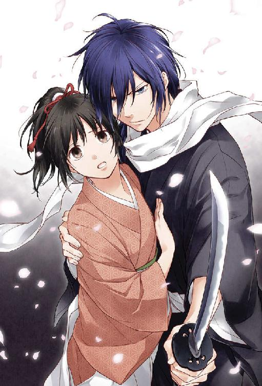
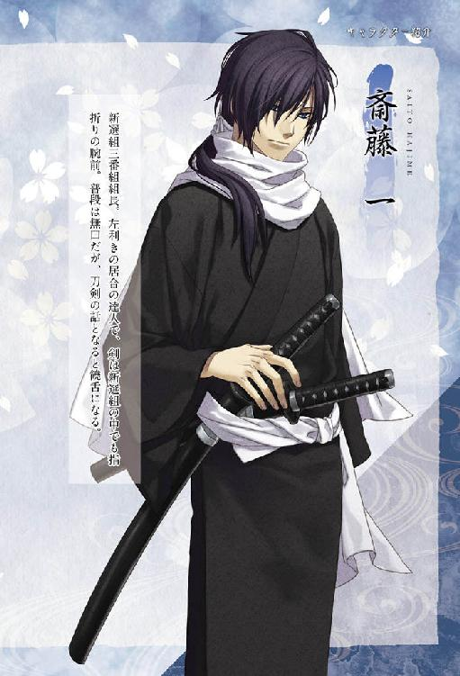
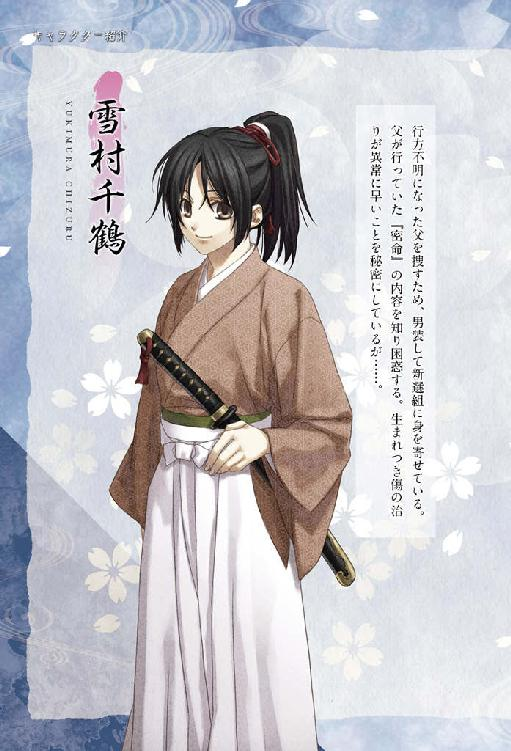
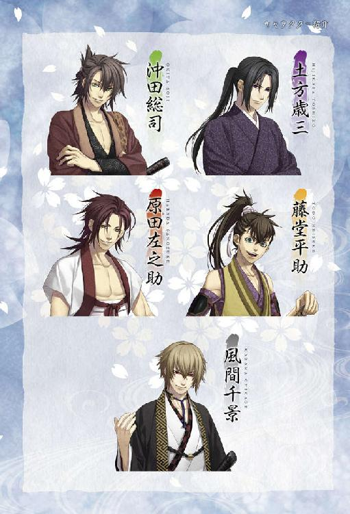
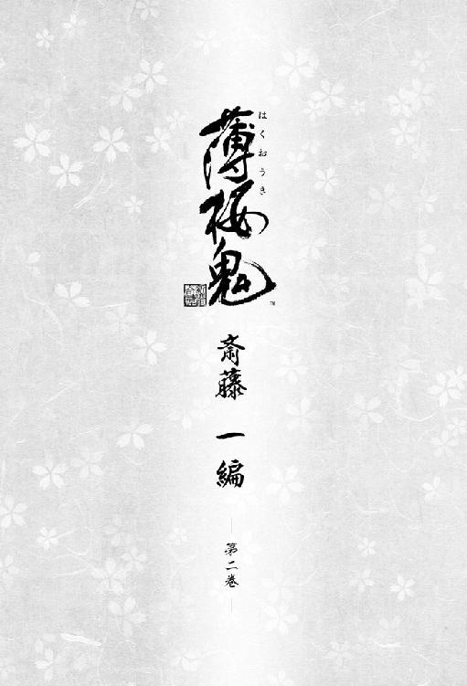
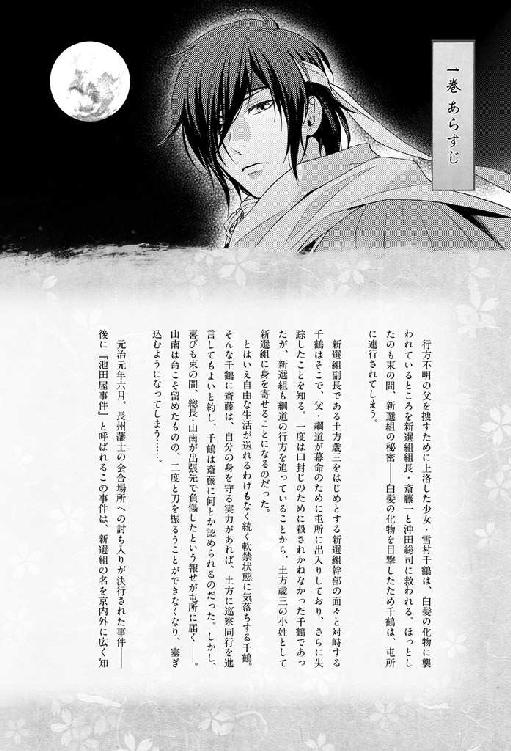
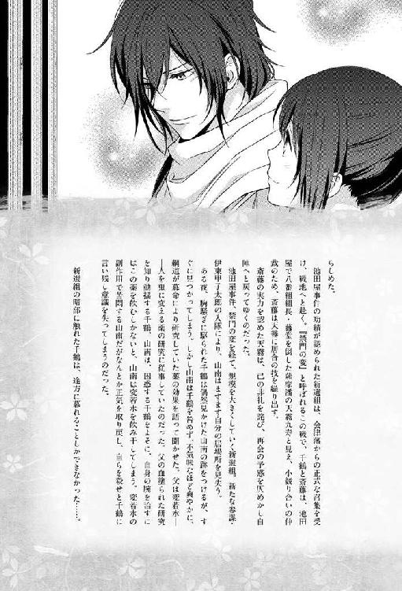
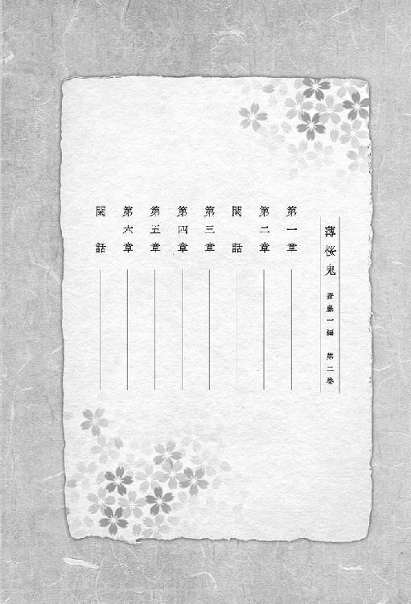
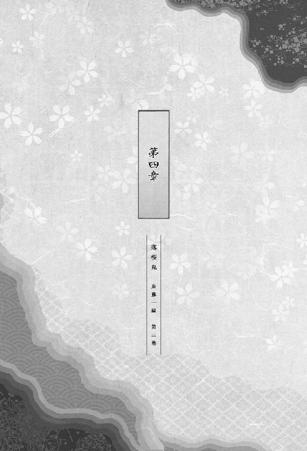

| オトメイトノベル 薄桜鬼 斎藤一編 第二巻 | |
| 長野和泉 | |
| (2015) | |








第一章
それは、草木や花の芽が次第にほころび、朝夕の冷え込みが日一日と緩やかになり始めた静かな晩の事だった。
「......失礼します」
障子戸の向こうに一声かけた後、副長の小姓としてこの新選組屯所に身を置いている少女・雪村千鶴は、そっと入り口の引き戸を開けた。
広間には、新選組局長の近藤勇、副長の土方歳三、そして参謀の伊東甲子太郎──主立った幹部隊士達が居並んでいる。場には、息が詰まるほどの緊張感が満ちていた。
彼女はやや固くなりながら、淹れたての茶が入った湯呑みをそれぞれの前へと置いていく。
やがて、悲しげに目元を曇らせながら呟いたのは、伊東だった。
「事情はよく判りましたわ。本当に惜しい方を亡くしましたわね。まさか、あの山南さんが──」
その名を聞いた瞬間、湯呑みを置こうとする千鶴の手が一瞬止まった。
彼女の挙動に違和感を抱いたのだろうか、伊東は不思議そうに千鶴の顔を覗き込む。
「どうしたの、雪村君。何か気になるのかしら？」
「い、いえっ、そういうわけでは......」
少女は内心の動揺を表に出さぬよう、口元を引き結んだ。
すると横から、土方がこう口を挟む。
「無理もねえだろ。総長が無断で隊を脱走した挙句、切腹したなんて聞かされちまったらな」
「そうだな。山南君が思い悩んでいたことに、我々がもっと早く気付いていれば......」
沈痛な面持ちで土方の言葉に同意したのは、近藤だった。
二人の表情には、昔馴染みの知己・山南敬助を失った悲しみや憤り、自責の念が浮かんでいた。事情を知らぬ者であれば、この二人の態度が演技だなどとは考えすらしないだろうと、千鶴は内心思った。
やがて彼女は静かに一礼して......。
「失礼します」
顔を伏せたまま言い残し、広間から退去した。
後ろ手に障子戸を閉め、ようやく一息つく。そして勝手場へ戻る途中、千鶴は記憶の糸を辿った。
あの日──それまでひた隠しにされていた新選組の秘密にとうとう触れてしまった晩、千鶴は、土方の命令で広間に留め置かれていた。
近藤、土方、そして沖田や斎藤、永倉、原田、藤堂。主立った幹部隊士達が一堂に会していながら、誰一人言葉を発しようとしなかった。
（どうしよう......）
千鶴の顔からは完全に血の気が引いていて、いつまで経っても全身の震えが止まらなかった。
今後の彼女自身の行く末に対する不安はもちろんあったが、それ以上に気にかかることがあった。
（山南さんは、一体どうなってしまうの？ もしかしたら、京に来た晩目にしたあの隊士達のように......）
昨晩、薬を飲んだ直後は山南も何とか正気を保っていた様子だったが、程なくして理性を失い、千鶴を襲おうとした。
喉にはっきりと残っている指の痕を手の平で押さえながら、少女はうなだれる。
再び目を覚ました時、山南は正気でいてくれるだろうか。それとも──
それから、どれくらい経っただろう。息をすることさえためらわれるような沈黙の中、引き戸が静かに開いた。皆の視線が、一斉にそちらへと集まる。
入ってきたのは、井上だった。その場にいる全員が、身動ぎすらせずに彼の言葉を待つ。
井上は、安堵したような微笑みと共に告げた。
「山南さんのことだが......峠は越えたようだよ。今はまだ眠っているけどね」
その言葉で、ある者はほっとしたように息を漏らし、またある者は安堵した様子で肩を落とした。
「山南さん、狂っちまってるのか？」
永倉が問うと、井上は難しい顔で首を横に振る。
「......確かなことは、本人が目を覚ますまで判らんね。見た目は、昨日までと変わらないんだが」
「そうか......」
その言葉を聞いた永倉の表情に、苦いものが宿る。
ここに集まっている幹部隊士達にとって山南は、江戸から共に上洛してきた同志だという。そんな彼が思い悩んだ挙句、人を化け物へと変える薬を飲んでしまったのだ。皆の心痛はいかばかりだろうと、千鶴は胸を痛めた。
（しかもその薬は、私の父様が研究していたもの......）
この秘密は今まで、彼女には頑なに伏せられていた。それを知ってしまった以上、今までと同じように遇されるとはどうしても思えず、千鶴は不安に慄いた。
（いえ、今はそのことよりも──）
山南には、あの白髪の化け物達のような末路を辿ってほしくはない。それは即ち、薬の研究をしていた父・綱道の罪ともなる。
何より千鶴は、ここで暮らすうちに、新選組の皆に少しずつ親しみを持つようになっていたのだから。
やがて、朝日がより明るさを増した頃、再び入り口の戸が開き、誰かが広間へと姿を現す。その人物を目にした瞬間、皆は声を呑んだ。
「山南さん！ もう、起きていいのかい？」
井上が驚いた様子で尋ねると、山南は、怪我をする以前のような穏やかな笑みと共に答えた。
「平気です。少し、気怠くはありますがね」
そう告げた後、彼は若干苦しげな表情になった。
「......これも、薬の毒性のうちでしょうか。あれを飲んでしまうと、日の光の下で動くのが難しくなるようですから」
どうやら彼の身体はもう、あの忌まわしい薬によって、人とは違う何かに作り変えられてしまっているらしい。
千鶴は面を上げることが出来ずうなだれたままだったが、そんな彼女の反応には頓着していない様子で、山南は言った。
「私はもう、人間ではありません」
その一言は、広間に揃った隊士達全員の胸に重く圧しかかった様子だった。
皆が言葉を失っている中、近藤は決然とした様子で顔を上げ、山南へと歩み寄る。そして大きな手をその両肩に載せ、がしっと掴んだ。
すぐには言葉が出てこない様子だったが、やがて、声を詰まらせながら喉を絞る。
「君が、こうして生きていてくれて良かった。それだけで我々は充分だとも」
だが他の幹部隊士達は、山南と目を合わせるのが憚られる様子で、痛みを堪えるような眼差しを思い思いの方向に投げているばかりだ。
恐らく、彼の身を案じていたからこそ、素直に喜ぶことが出来ぬに違いない。
「腕の方はどうなんです？ 元通りになったんですか」
沖田が普段と変わらない口振りで尋ねると、山南は少し顔を上げて応える。
「まだ、本調子ではないのですが......」
そう言った後、動かなかったはずの左腕を持ち上げ、手の平を閉じたり開いたりの動作を繰り返した。
「......治っているようですね。少なくとも、不便を感じない程度には」
山南のその言葉に、千鶴は密かに安堵した。
あの薬を口にしたことに対する多くの懸念はあれど、それでも、彼が望んでやまなかったこと──元通り剣を取りたいという切なる願いだけは、叶えられたのだ。
そんな中、原田が落ち着いた口調で問う。
「あの薬を飲んじまったってことは、昼間、動けねえようになっちまったんだろ？ それなのに、今まで通り隊務をこなすことなんて出来るのか？」
原田の懸念は、もっともだった。日が出ている時に起きていることが出来ぬのであれば、人並みの生活を送ることなど到底叶わない。ましてや新選組の、しかも総長としての役目など果たせようはずがない。
すると山南は、事も無げに言い放つ。
「私が死んだことにすればいいでしょう」
その一言で、広間にいる全員が言葉を失った。
皆、すぐには声が出ない様子だったが......。
「山南さん、あんた、本気で言ってんのか!? 自分が何を言ってるのか、判ってんのかよ！」
真っ先に声を荒げたのは、永倉だった。だが山南は、そんな彼を冷静な瞳で見つめ返しながら頷く。
「判っていますとも。......君の方こそ、忘れてしまったのですか？ 我々は薬の存在を伏せるよう、幕府から命を受けているのですよ」
永倉の瞼が、無念そうに震えた。山南の言葉に即座に頷くことは出来ない様子だったが、さりとて反論の言葉も見つからぬらしい。
山南は薄く目を閉じた後、静かな声音のまま続ける。
「私が死んだ事にすれば、今まで通り、薬の存在を隠し通す事が出来ます。それに──」
薄い唇の端がわずかに引き上げられ、どこか寂しげな微笑みを形作った。
「こうして人の手で御することが出来るほどあの薬の毒性が弱まっているのであれば......使わぬ手はないでしょう」
その発言に、土方の眉間の皺が深められた。
恐らくこの場に、山南の意見に心から同意している者などただの一人もいないに違いない。ただ、今の時点ではこの案が最良の策だということも、皆よく理解している様子だ。
近藤は顔を伏せたまま、苦しげに漏らす。
「......あの薬の実験を進めよというのは、幕府からのお達しだったな」
例の薬が人の手に余る物だというのは、この場にいる全員が同じように感じている様子だ。
だがそれでも、あの薬の毒性が人の手で扱いきれる程に弱められているのだとすれば、光明は見えてくるのではないだろうか。そんな希望も抱いているのかも知れない。
近藤は少しの間、目を閉じた。そして、沈痛な溜め息と共に告げる。
「......それしかない、か」
局長である近藤の決定が下され、改めて、今後の方針が話し合われることになった。
土方は大きく息を吐いた後、再び顔を上げ、こう言った。
「例の屯所移転の話、冗談じゃ済まなくなったな。山南さんを伊東派の連中の目から隠すにゃ、広い場所が必要だ。ここじゃ狭過ぎる」
かくして山南は表向き死亡したことになり、西本願寺移転の手続きが進められることと相成ったのだった。
昨晩の話し合いの顛末をこうして思い出してみてなお、もしかしたら悪い夢を見ていたのではないかと、千鶴は心のどこかで思ってしまう。
（でも、夢なんかじゃない。山南さんがあの薬を飲んでしまったのも、父様がこの屯所で人を化け物に変えてしまう薬の研究をしていたのも全部、本当のこと......）
千鶴の父・雪村綱道がこの屯所で薬の研究を行ったのは、幕命があったからだと聞かされたが、ならば、なぜ実験が終わらぬうちに行方をくらませてしまったのだろう。少女の胸の内で、嫌な予感がどんどん膨らんでいく。
（お願い、父様。早くここへ戻ってきて。なぜあんな薬の研究をしていたのか、教えて下さい）
その場に崩れ落ちてしまいそうになりながら、千鶴は心の中の父に懇願したが、応えがあるはずもなく、冷えた風が彼女の傍を素通りしていくばかりだ。
その時。
「局長の所に、茶を届けてきたのか」
不意に声をかけられ、千鶴ははっとして顔を上げる。いつの間にそこにいたのか、新選組幹部隊士の一人、斎藤一の姿があった。
「す、すみません。こんな所をうろうろしていたら邪魔ですよね。すぐ自分の部屋に戻ります」
静かな濃藍の瞳で顔を覗き込まれ、彼女が恐縮しながら答えると......。
「邪魔だなどと言った覚えはないが......部屋に戻るのであれば、送ろう」
彼の様子は、平素と変わらぬままだ。
先程の近藤や土方もそうだったが、昨夜あんなことがあった後でなぜこんなにも取り乱さずにいられるのか、千鶴には判らなかった。
さして広くはない八木邸屯所だ。一言も言葉を交わさぬうちに、すぐに千鶴の部屋へと辿り着いてしまう。
「......送って下さって、ありがとうございました」
千鶴が身を小さくしながら頭を下げると。
「昨晩のことは、忘れろ。出来るだけ早くな」
抑えた声ながら、有無を言わせぬ口調でそう告げられた。
さすがに、一年以上もこの屯所で寝起きしている千鶴だ。この言葉には頷くほかないということぐらい、よく判っていたが──
「これからずっと......さっきのように、山南さんのことを隠し続けるんですよね？」
気が付くと、その問いが唇から滑り落ちていた。
斎藤は表情を変えず、真意を問うような眼差しで、ただじっと千鶴の顔を見つめてくる。
彼女は俯いたまま、声を微かに震わせながら尋ねた。
「斎藤さんは、本当にこれから先もずっと......このことを隠し続けられると思ってらっしゃいますか？」
千鶴にはとても、そうは思えなかった。
伊東は、学識や剣才に優れた聡明な人物だとの呼び声も高い。同じ屯所で暮らしながら、そんな彼の目を誤魔化し続けるなど、到底出来るとは思えなかった。
いつものように「あんたには関わりがないことだ」と退けられるか、あるいは叱責の言葉が返ってくるだろうと思ったが、それでも、千鶴は訊かずにはいられなかった。
だが斎藤の口から出たのは、肯定でも否定でもなく──
「もし山南さんが、あの晩あんたが目にした隊士達のようになっていれば、総司は何のためらいもなくあの人を斬り殺していたはずだ」
抑揚のない声で告げられた言葉のあまりの重さに、千鶴の胃の奥がぎゅうっとすくむ。
吐く息さえ凍りつかせるようなあの恐ろしい出来事が、血の色も生々しく少女の脳裏に蘇った。
あの晩、血に狂った白髪の隊士達を斬り捨てた時のように、昔馴染みの山南相手にも刀を振るってみせるだろうと、斎藤はそう言ったのだ。
そんな彼女の内心を知ってか知らずか、静かな声のまま、千鶴から目をそらしもせずに、彼は付け加える。
「......恐らく俺がその場に居合わせたとしても、同じ決断をした」
冷えた汗が、少女の首筋をすうっと伝い落ちた。
斎藤の瞳を見つめていると、そこに宿る深淵の色に引き込まれそうな気がして、少女は慌てて顔を伏せる。
場と次第によっては、いつ殺されても不思議ではない立場。その立場に置かれているのは、山南だけではない......。
千鶴がそのことを改めて思い知らされた時、斎藤がわずかに俯く気配があった。
「だが、出来るなら仲間は殺したくない。......あれは、寝覚めが悪いからな」
やがて少しの沈黙の後、斎藤は千鶴に背を向け、歩いて行ってしまう。
幹部隊士という立場上、彼は、気軽に己の本心を口にすることなど叶わぬはず。
だが、最後に残したたった一言からは、斎藤が日頃決して語らぬ本心が垣間見えた気がした。
新選組が、住み慣れた壬生村から西本願寺へと屯所を移したこの年の四月、元号は『元治』から『慶応』へと改められた。
移転の折、伊東派の隊士達に山南の存在を気取られぬかどうかが唯一の懸念ではあったが、幸いにして事はうまく運んだらしい。
慌しい毎日を送るうちに、いつの間にか梅雨も明け、盛夏も間近となったある日──新選組隊士全員が、西本願寺の広間へと集められた。
広間に集まった数百人の隊士達を前に、近藤は目を輝かせ、朗々とした口調で告げる。
「皆、よくぞ集まってくれた！ 此度、第十四代将軍・徳川家茂公が上洛なさるという話は聞き及んでいると思う」
そう告げた後、彼はまるで隊士達の反応を窺うように広間を見渡した。
集められた隊士達は、身を固くしながら局長の次の言葉を待っている。近藤は、口調こそ丁寧ながら、高揚を抑えきれぬ様子で続けた。
「上洛に伴い、家茂公が二条城に入られるまで、新選組総力を以って警護の任に当たるべし、との要請を受けた！」
集められた隊士達は、当初は信じられぬ様子で顔を見合わせていたが、やがて誰ともなしに歓声を上げ始め、場は一気に沸き立った。
「ふん。池田屋の変の一件で、お偉方もさすがに俺達の働きを認めざるを得なかったってとこか」
土方はまるでぼやくような口振りで呟いたが、その顔には得意げな笑みが浮かんでいる。
「警護中は文字通り、僕らの刀に国の行く末がかかってるってことですか」
近くに座っている沖田は、いつもと変わらぬ軽口を叩くのみだ。
そんな隊士達の反応を感慨深げに眺めた後、近藤は土方の方を振り返った。
「ともあれ、これから忙しくなるぞ。急いで隊の編成を考えねばならんな。まずは俺とトシ、そして総司と──」
「悪い、近藤さん。総司は、今回外してやってくれねえか。風邪をこじらせてるみてえだからな」
不意に飛び出した土方の言葉に、近藤は目を丸くした。
「む、そうなのか。風邪とは......大丈夫なのか？ 総司」
「これぐらい、どうってことないんですけどね。土方さんは、大袈裟なんですよ」
確かに言われてみれば、普段の彼の声と比べると若干いがらっぽいかも知れない、と千鶴は思った。
「どうってことねえ、じゃねえよ。さっきも咳してやがっただろうが」
「......やれやれ。土方さんは過保護すぎるんですよ」
沖田が鼻白んだ様子で、そう切り返した時だった。
もう一名、意外な人物が手を挙げる。
「あー、近藤さん。オレも今回は外してくれねえか？ その......身体の調子が良くなくてさ」
挙手と共に辞退を申し出たのは、藤堂平助だった。
「何だ、平助も風邪か？ せっかくの晴れ舞台なのだし、隊士一同揃って家茂公をお迎えしたかったのだがなあ」
近藤が眉をハの字にしながら言うと、藤堂は申し訳なさそうに肩を縮める。
「......すんません」
「あ、いや、体調が悪いのであれば仕方ないな。いずれまた機会もあるだろうし、二人にはその時、存分に働いてもらいたい」
近藤が威儀を正して言った、その時だった。
「局長、雪村は此度の隊務に参加させるのですか」
斎藤が、唐突にそんな問いを口にした。
千鶴は驚いて斎藤の方へと視線を向けるが、彼は動じる様子もなく、近藤の答えを待っている。
「雪村君か？ そうだな......」
どうやら今の発言は、近藤にとっても予想外だったらしい。少しの間目を丸くしていたが、すぐに相好を崩して──
「無論、構わぬとも。雪村君も今や、新選組の一員と言っても過言ではないからな」
素朴そのものの笑顔と共に、許可を出してくれる。
「本当に、いいんですか......？」
すぐには実感が湧かず、千鶴はつい問い返してしまう。
すると横から、斎藤がこう告げた。
「長州藩士が京への出入りを禁じられているこの時期に、将軍公を狙う不届きな輩はおるまい。同行しても危険はないと判断するが」
「............」
沖田や藤堂が参加しないのに自分だけ参加することに、心苦しさを感じぬ訳ではなかったが......。
千鶴は、力を込めた眼差しで近藤を見つめながら言った。
「......行きます。行かせて下さい」
意を決して告げたその言葉に、彼は笑顔で応じてくれる。
「もちろんだとも！ 君の身は我らが必ず守るから、安心してくれたまえ」
「ま、お前にやってもらうことは、伝令や簡単な使い走りぐらいだろうがな」
土方はそう付け加えるが、それは千鶴も承知の上だ。
話し合いがまとまり散会となった時、彼女はふと斎藤の方へと目を向けた。
（斎藤さん、どうしてさっき私の名を出したんだろう？ 池田屋や禁門の変の時と違って、怪我人が出ることはまずなさそうなのに......）
どうしても気にかかり、合議が終わって斎藤が席を立った時、千鶴は慌てて彼の後を追った。そして、その背中に声をかける。
「待って下さい、斎藤さん」
彼は足を止め、ゆっくりと千鶴の方を振り返った。寡黙な濃藍の瞳で見つめられると、いささか気後れしなくもなかったが......。
「あの......先程は、どうしてあんなご提案を？」
思い切って問いかけると、彼は静かな声音のまま問い返してくる。
「要らぬ気遣いだったか」
その言葉に、千鶴は慌てて首を横に振った。
「いえっ、そういう訳ではないんですけど......斎藤さんがああいったことを仰るとは思わなかったので、どうしてなのかと思って」
千鶴が知っている斎藤は、どんな時でも新選組幹部隊士としての本分を第一に考えている人物で、戦いの際、足手まといにこそなれ、決して助けにならない彼女を理由なく同行させるはずがないのに。
少女が緊張しながら答えを待っていると、少しの間を置いて、彼は答えた。
「綱道さんは、幕府の命でこの新選組に出入りするようになった人物だ」
それは、千鶴も以前聞かされたことだ。彼女は静かに頷く。
「将軍公の護衛として同行することになれば、幕臣達と言葉を交わす機会もあろう」
「それって......お役目の合間、幕臣の方々に父様の行方をお訊きすることが出来るように、という意味ですか？」
斎藤は、頷く仕草で彼女の言を肯定する。
「......あんたの助けになるかは判らんが」
その返答に、千鶴は慌てて首を横に振った。
「そんなことありません！ お心遣いに感謝します。本当に、ありがとうございます」
まさか彼がこんな風に配慮してくれるとは予想していなくて、少女は深々と頭を下げる。
そんな彼女を見下ろしながら、穏やかな声で斎藤は言った。
「礼には及ばん。綱道さんの手掛かりを得られるよう祈っている」
「......はい」
千鶴は再び顔を上げ、目の前にいる斎藤を改めて見つめる。
切れ長の双眸には、穏やかな光が宿っていた。
（父様の手掛かりを見つけ出すというのは、私と新選組の皆さん方の共通の目的だから、斎藤さんがさっきのような提案をして下さるのは当たり前なのかも知れないけど......）
それでも先程の彼の提案には、それ以上の気遣いや優しさが込められている気がした。
（ありがとうございます、斎藤さん。このお気遣いは、決して無駄にしませんから）
千鶴は心の中でもう一度、斎藤に礼を言うのだった。
そして将軍上洛当日、千鶴は伝令役として二条城周辺を駆けずり回っていた。
こんな機会でもなければ、幕府の役人達と言葉を交わす機会などない。用事を終えた際、父・綱道の行方について尋ねてみたのだが──
「雪村と申す蘭方医か。名はどこぞで聞いた覚えがあるが、それ以上のことは判らぬ」
「そうですか......。お手を煩わせてしまって申し訳ございません」
これで何人目だろう。今回も有力な手掛かりを得られず、千鶴は内心途方に暮れた。
（せっかく斎藤さんが、気を遣って同行させて下さったのに......）
幕臣達も綱道の行方を知らないということは、父は今、幕府側が把握出来ないような場所にいるということだろうか。
あるいは、既に命を落としているのでは......。
頭をよぎったその不吉な考えを、千鶴は懸命に振り払った。
（いえ、そうとは限らない。この日本には数百もの藩があるんだし、幕府側だって、全ての藩の動きを把握している訳じゃないもの。何か事情があって、連絡出来ずにいるだけに決まってる）
少女は己に言い聞かせ、新選組の隊士達の元に戻ることにした。
そしてその途中、何気なく、間近にそびえ立つ城を見上げてみる。
徳川初期の頃より、将軍上洛の際、宿舎の役割を果たす為新たに築かれた二条の城。十四代将軍・徳川家茂が無事にこの場所に辿り着いたのは、つい先刻のことだった。
道中の警護から、そのまま城周辺の警護に回って一刻余り。恐らく今頃、近藤や土方、井上などは家茂の側近の幕臣達の元へ挨拶に向かっている所だろう。
（そういえば新選組は元々、家茂公の護衛をする為に集められたって、隊士さん方が仰ってた気がする）
文久三年に家茂が上洛した際は、正式に護衛の役目を言いつけられた訳ではなかった為、行列を陰から見守ることしか出来なかったそうだ。
そんな彼らが今回、正式に幕府の要請を受け、こうして警護の任に着くことになったのだ。その感激は、どれ程だろう。
（私も、お務めを頑張らなくちゃ）
隊士に交代を告げたり、幹部隊士からの知らせを伝えに走ったり、伝令の名を借りた使い走りが、彼女の主な役割ではあったが──
（これも立派な隊務だし、役に立っていない訳じゃないはず）
軽く呼吸を整えた後、千鶴は再び駆け出した。
二条城の周辺には、浅葱の羽織を纏った隊士達の姿が散見出来る。
今、警護にあたっている隊士達も、さして緊張している様子は見られなかった。
（長州浪士達は京への出入りを禁じられてるって、斎藤さんも言ってたし）
何より、これだけ厳重に守りを固めているのだ。不逞浪士達も、表立って行動を起こすことは出来まい。
この分だと何事もなく役目を終えられそうだと、千鶴が安堵した時だった。
「──!!」
背筋に、冷ややかな何かがぞくりと走る。
（これは、まさか......）
この感じには、覚えがあった。
抜き身の刀を向けられた時の息詰まるような気配、血に狂った瞳で睨まれた時の恐怖。
出来れば一生慣れたくなどなかったが、新選組に身を置くようになってから、千鶴が幾度となく味わった気配だ。
修羅場をくぐった剣客ならば、今彼女が味わっている感覚をこう呼ぶのだろう。──殺気、と。
千鶴が振り返って睨みつけたのは、人目も届かぬ城の陰。篝火は遠く、月の光が届くか届かぬかのぎりぎりの縁。
──そこに、彼らは佇んでいた。
正面に立っている男の鮮やかな金の髪が、夜風にふわりと揺れた。黒の羽織も、その下に纏っている長着も、相当高価な品物であるのが窺える。そして何より目を引くのは、傲岸な光をたたえた真紅の瞳。
その背後には、高い位置で髪を結った男がいた。剥き出しになった両肩には派手な彫り物がしてあり、その腰には月の光を照り返して輝く洋銃がある。
そしてもう一人は──
（あの人は確か、禁門の変の時に会った......）
天霧九寿、と名乗っていたあの男が、立っていた。
風体こそばらばらだが、只者ではない気を漂わせた男達の目が、千鶴へと集められる。その視線に込められた威圧感だけで、身を切られてしまいそうなほど。
（天霧さんは確か、薩摩藩と行動を共にしていたはず。その彼が、どうして？）
悪夢の中に迷い込んだような心持ちのまま、千鶴はやっとの思いで、震える唇を開いた。
「なぜ......ここにいるんですか？」
だがその問いに答えたのは、天霧ではなかった。
「答えは簡単だ。オレら『鬼』の一族には、人が作る障害なんざ意味を成さねェんだよ」
そう告げたのは、洋銃を持つ男だ。
「『鬼』......？」
お伽話でよく語られる角を持ったあの生き物のことだろうかと、千鶴は訝った。だが目の前にいる男達は、外貌こそ恐ろしく整っているものの、普通の人間と全く変わらない姿をしている。
やがてそれまで黙していた天霧が、おもむろに口を開く。
「我々は、君を探していたのです。......雪村千鶴」
唐突に名を呼ばれ、千鶴の心の臓が大きく跳ね上がった。
（どうして私の名を？ この人に、名前なんて教えていないはずなのに）
怖気に似たものが、少女の全身を駆け抜けた。これ以上知ってはいけない、彼らに関わってはいけないと、胸の内の何かに警告でもされているかのようだ。
千鶴は声音の震えを抑えながら言った。
「言っている意味が判りません。『鬼』とか、私を探していたとか......私をからかってるんですか？」
叫ぶような調子で声を張り上げると、中央に立つ金髪の男が怪訝そうに眉根を寄せる。
「......『鬼』を知らぬだと？ 本気で言っているのか。我が同胞ともあろう者が」
もう一度、少女の心臓が大きく跳ねた。
彼は闇を背後に引き連れ、千鶴へと一歩を踏み出す。
千鶴が慌てて後ろに下がろうとした時だった。
「君は負傷した際、どれぐらいで傷が癒えますか？」
「っ......」
天霧の短い問いかけに、千鶴は声を呑んだ。
（この人はまさか、私の秘密を......今まで誰にも明かさずにきたことを、知っている？）
少女の胸の内で、心臓の鼓動が不穏な響きを孕む。
天霧は瞬きもせず、彼女の弱点を熟知した表情で、さらに言った。
「並みの人間とは思えぬほど、怪我の治りが早い。そうでしょう？」
「............」
千鶴の唇が一瞬、肯定の形に動きかける。
だがすぐに、唇を固く引き結んで──
「そんな......そんなことはありません！」
絶叫めいた響きと共に、そう答えた。
その応えを不快に思ってか、背後の洋銃を持った男が片眉を歪めた。
「嘘を言うっつうのは、いただけねェな。鬼っつうのは、嘘はつかねェもんだぜ」
「嘘なんて言っていません。私は本当に──」
すると男は、腰に差した洋銃を引き抜いた。そしてその銃口を、千鶴へと向ける。
「何なら、血ィぶちまけて証明した方が早ェか？」
「............」
少女の喉は一瞬で干上がり、言葉が出なくなった。
単なる脅しではない。千鶴の応えによっては、彼は躊躇せず、構えた銃の引き金を引くに違いない。
「よせ、不知火。その娘が否定しようが肯定しようが、我々がこれから取るべき行動は変わらぬ」
不知火と呼ばれた男を制したのは、あの金髪の男だった。
その赤い瞳で見据えられた途端、千鶴はまるで金縛りに遭ったように身動きが取れなくなる。
獣というのは目を合わせただけで力の優劣を悟るものだと、どこかで耳にしたことがあったけれど。
（この人、もしかすると天霧さんや不知火さんよりも......）
そんなことを思った時、彼の赤い瞳が、千鶴の腰にある小太刀へと向けられた。
「多くは語らぬ。鬼を示す姓と、東の鬼が持つ小太刀......証拠としては充分に過ぎるからな」
千鶴は身をすくめ、小太刀へと手をかけた。
（姓？ 雪村の姓が、何だっていうの？）
彼が語った言葉の意味を、千鶴は完全には読み取れなかったが、全身から冷や汗が流れて止まらなかった。
闇そのものが迫ってきたような凄まじい圧迫感で、動きを、いや呼吸さえも封じられている気がした。
やがて金髪の男は、ゆっくりとした足取りで少女へと近付く。
「言っておくが、お前を連れ去るのに同意など要らぬ。......女鬼は貴重だ。共に来い」
千鶴を引き摺り込むように、闇から、男の手が伸びてきた。
「いやっ──」
千鶴が叫びかけた、その刹那。
──闇を、白刃が切り裂いた。
そして、少女の前に現れたのは......。
「ったく。こんな色気のねえ場所で逢引きとはな。趣味が悪いにも程があるぜ」
背中で千鶴を庇うように立ちはだかったのは、原田だった。
しかも、彼女を助けに現れたのは彼だけではなく──
「大事ないか、雪村」
斎藤が、静かな声音で尋ねてきた。
窮地に現れた二人の姿に、千鶴はその場に崩れ落ちそうな程、安堵する。
斎藤や原田の姿を目にして、金髪の男は忌々しげに顔を歪めた。
「......また、お前達か。田舎の犬は、目端だけは利くと見える」
そんな彼を睨みつけ、斎藤は低い声で呟いた。
「金の髪の浪士か。総司が言っていたのは、あんたのことだな」
その言葉に、金髪の浪士は不審げに目をすがめる。
だがすぐに、何かに思い至った様子で......。
「ああ、思い出した。池田屋で、この俺に歯向かってきた身の程知らずがいたな。そういえばあの男も、貴様らの仲間だったか」
嘲弄するようなその言葉に、斎藤は目を剥いた。かつて感じたことがない程の殺気が、その瞳に宿る。
「斎藤さん......！」
千鶴が思わず飛び出そうとすると、肩を無骨な手で掴まれ、後ろへと引き戻される。
「下がってろ」
ぶっきらぼうにそう言ったのは、土方だ。
彼は千鶴を押しのけるように前へ出ると、刀に手をかけ、一気に引き抜いて構える。
「将軍の首でも取りにきたかと思えば、こんな小娘一人に一体何の用だ？」
鋭い切っ先を向けられてなお、金髪の男は表情を変えない。絶対の余裕を込めた眼差しで土方を睨み返しながら、悠然と答える。
「将軍も貴様らも、今はどうでもいい。これは、我ら『鬼』の問題だ」
「『鬼』だと？」
土方の眼光が、相手の言葉の真偽を計るような鋭さを帯びる。
だが、金髪の男がそれ以上答えぬのを見て取ってか、斎藤や原田に目配せした。
斎藤はわずかに頷く仕草をした後、右腰の刀に手をかける。全身で相手の動きを読み、丹念に呼吸を計りながら、低く呟いた。
「あんたの姿を目にするのは、禁門の変の時以来だな。何の感慨も湧かぬが」
彼が柄を握る手に力を込めると、天霧は爪先に緊張を走らせた。その足元の土が、じゃり、と不穏な音を立てる。
凄まじい殺気が、辺りの風景を押し固め、凍りつかせているかのようだ。指一本動かすことさえためらう程の、異様な緊張感。
誰か一人でも相手の間合いへ踏み込めば、彼ら全員が一斉に地を蹴るだろう。
せめてこの場に置かれている以上、何かの役に立ちたい。そう思った千鶴は、震える手で小太刀の柄を探った。
すると、押し殺した声がその手を止める。
「副長達の心配は無用だ」
背後から聞こえてきた声に驚いて振り返ると、そこには、忍び装束を纏った山崎烝の姿があった。
千鶴に問いかける暇すら与えてくれず、彼は、淡々と己の役目だけを口にする。
「副長の命だ。君は、このまま俺が屯所へと連れ帰る」
「ここを離れろってことですか......？」
確かに、この場に残ったところで出来ることは何もないだろうというのは、千鶴自身も自覚していた。
だがそれでも、彼らの先程の言葉が心に引っかかっていて、彼女はその場から動けなかった。
「雪村君、聞こえないのか？ さあ──」
山崎が、焦れた様子で促した時。
「ヘイヘイ、待てって。お姫さんはここに残りてえみてえじゃねえか。邪魔してんじゃねェよ！」
先程、不知火と呼ばれた男の銃口が、いつの間にか山崎へと向けられていた。
その銃口からは実弾を放つ以上の殺気が感じられて、二人は身動きが取れなくなる。
「ちっ！」
原田の舌打ちがこだました矢先、不知火が地を蹴った。原田は、彼の行く手を阻むように立ちはだかる。
「......やれやれ。時に拙速は巧遅に勝りますが、不知火の気の短さも考え物ですね」
呆れたように言ったのは、天霧だった。
「そういうあんたも、止めなかったようだが」
斎藤は、刀の柄から手を放さぬまま言う。
二人は既にぎりぎりまで間合いを詰め、どちらかが後一足でも踏み込めば、今にも斬り合いを始めそうな気配を漂わせていた。
そして土方は抜き身の刀を構え、あの金の髪の鬼と対峙している。
（駄目、このままじゃ......）
千鶴は懸命に頭を働かせ、今何をするべきか、どうすればこの窮地を脱することが出来るのか、考えを巡らせた。
──何をしたところで、戦力としては役に立てない。それは彼女自身、嫌というほど自覚している。
（だとしたら、私に出来ることは......）
己に能う最良を尽くすべく、千鶴は山崎へと視線を送る。
「山崎さん、近藤さん達を呼んできましょう！」
だが、その刹那。
「残念ですが、これ以上の部外者の介入を認めるつもりはありません」
千鶴の動きを見咎めたのは、天霧だった。
少女の影を縫い止めるように視線を向け、土を踏みしめながら近付いてくる。
その足が止まったのは、通り抜けることを許さぬ居合いの結界──斎藤の間合いの一寸手前だった。
「下がれ、雪村。......奴らの目的はあんただ。不用意に動くな」
鋭く放たれたその言葉が、千鶴を凍りつかせる。
やがて天霧は、眉根をわずかにしかめながら尋ねた。
「退いては頂けませんか？ 禁門の変の時と同様、私には君と戦う理由がない」
「生憎だが......俺には、あんたと戦う理由がある」
低く告げながら、斎藤はわずかに下がり、天霧を誘い込むように間合いを取った。
その様子から目を離せなくなりながら、少女は密かに思う。
（斎藤さん、もしかして私を庇って下さった......？）
天霧は構えを解かぬまま、静かな殺気を放ちながら言う。
「あくまで邪魔をするつもりですか。いいでしょう」
天霧は素手で立ったまま、そして斎藤は鞘に収めたまま刀を腰溜めに構えるのみだ。
静かな戦場だった。
互いに一刀すら繰り出していないのに、剣戟の音が飛び交う場よりも、よほど濃密な殺気が満ちている。
このまま千年でも万年でも止まってしまいそうな時の中、均衡を崩したのは、月の翳りだった。
暗雲に月が隠れた刹那、一瞬の交錯が起こる。耳を打つ程の剣戟の音が、高らかに響き渡った。
恐らく、瞬きする暇すらなかっただろう。風が雲を払い、再び月が姿を現した瞬間には、既に皆が刀を交えた後だった。
（見えなかった......）
二人の動きに追いつけなかったのか、遅れて巻き起こった突風だけが、少女の髪をはためかせ、一閃の残滓を残す。
やがて天霧の口元に、笑みが浮かんだ。
「今ので仕留めるつもりだったのですが、ね」
斎藤は、静かな殺気を消さぬままに応える。
「......お互い様だ」
必殺のはずだった一撃を外されたというのに、二人にはいささかの動揺も見られなかった。
斎藤は瞳をより細め、天霧はまるで賞賛するような表情さえ浮かべながら、互いに再び睨み合う。
微かに瞼を緩め、退いたのは、天霧の方だった。
構えていた拳が、音もなく下ろされる。
土方や原田も、既に一手交えた後のようだ。彼らは身構えたまま、その場から一歩も動かない。
「これ以上の戦いは無意味ですな。長引いて、興が乗っても困るでしょう」
天霧が念を押すような口調で言うと、不知火は居心地悪そうに頭を掻いた。
「オレ様のことを言ってやがんのか？ 引き際は心得てるつもりだぜ。こいつに比べればな」
彼はそう言って、土方と睨み合っている金髪の男へと目配せした。
男は不快げな眼差しで不知火を睨みつけた後、千鶴へと一瞥をくれる。
そして、低い声でこう呟いた。
「確かに、目的を果たした以上、長居をする必要もないか。今日は、挨拶に出向いてやっただけだからな」
「......むざむざ逃がすと思うか？」
刀の柄を握った手はそのままに、男を睨みつけながら言ったのは、斎藤だった。
そんな彼を、金の髪の男は一笑に付す。
「下らぬ虚勢はやめておけ。貴様らは無事でも、騒ぎを聞きつけて集まってくる雑魚共は何人死ぬか知れたものではないぞ」
その言葉や態度からは、人と相対する獅子のような絶対の余裕が感じ取れた。
恐らく彼らは、人を遥かに凌駕する力を持ち合わせているに違いない。彼の自信は決して不遜なものではないと、千鶴は内心確信していた。
斎藤や土方、原田も同じことを感じたのだろう。誰ともなしに刀を引き、構えを解く。
やがて金の髪の男は背を向け、緩慢な足取りで歩き始めた。そして、その姿が闇夜の中へと消えてしまいそうになった時──
「俺の名は風間千景。この名を決して忘れるな、雪村の娘よ」
不意に、頬に触れられたような錯覚を覚え、千鶴は身を震わせた。
そんな彼女の様子を満足げに眺めた後、彼はこう言い残す。
「いずれまた、近いうちにお前を迎えに行く。楽しみに待っているがいい」
金の髪や白い着物が、今度こそ闇黒の中へと掻き消えた。
千鶴の全身からは汗が噴き出し、その場に立っていられなくなる。
「大丈夫か？ 千鶴」
地面にへたり込んだ彼女に手を伸べたのは、原田だった。
「は、はい......」
千鶴はその手を借りて、何とか立ち上がる。
土方は、『鬼』と名乗るあの男達が姿を消した闇を厳しい瞳で見据えながら、口を開いた。
「雪村、お前、あいつらに狙われる心当たりでもあるのか？」
「............」
少女は一瞬、答えをためらった。
彼らが先程口にした『同胞』という言葉、共に来いと伸ばされた手。
そして何より、彼らが、いかなる傷を帯びてもすぐに癒えてしまう千鶴の特異な身体について知っていたこと──
彼らが語った言葉が真実なのか、それとも偽りなのか、真実ならば彼らはなぜそれを見知っているのか、千鶴自身にも判らない。
「いえ、私にもよく判りません......」
だから少女は、その一言を口にするのが精一杯だった。
将軍の警護から戻ってすぐ、西本願寺屯所では主立った隊士達が集められ、話し合いが始まった。
その席で、例の金の髪の男──風間千景は斎藤が推測した通り、池田屋事件の際、沖田と斬り合った男と同一人物だということが明らかになった。
偶然居合わせたということは、まず考えられまい。天霧九寿は薩摩藩と関わりを持っており、風間と同じく、あの晩池田屋に居合わせていたのだ。恐らく薩摩藩の意を受け、不逞浪士達の動静を探っていたと考えるのが妥当だろう。
何にせよ、藩同士の関係が絡んでくるとなれば、新選組の上役に当たる会津藩の意向も関わってくる。
会津藩と薩摩藩は、文久三年八月に起きた、八・一八の政変の際に盟約を結んでいる為、迂闊に手を出すことが出来ぬのは間違いあるまい。
夜空の月を眺めながら、千鶴は思った。
（あの人達に狙われる心当たりはあるか、って土方さんに訊かれたけど......）
思い当たることなど、あるはずがない。
だが彼らは千鶴を同胞と呼び、名乗ってもいないのに彼女の姓を知っていた。
そして何より、幼少の頃に父から譲り渡された小太刀のこと、そして今まで誰にも明かさずにきた秘密
──負った傷がすぐに癒えてしまうという千鶴の体質についても、よく知っている様子だった。
（私は......）
蘭方医・雪村綱道の娘として生を受けた、ごく普通の町娘だと思って、今まで生きてきたのに。
（父様、どういうことです？ あの人達は何者なんですか？ そして、この小太刀は一体......）
黒々と輝く小太刀を見つめ、この場にはいない父に問いかけるように握り締めたが、黒い鞘はただ静かに月の光を照り返すのみだった。
第二章
それは夏も間近となり、単衣の着物を着ていても汗ばむようになった、ある日の事。
その日の屯所は、いつになく騒然としていた。
廊下で千鶴とすれ違う隊士の数がやけに多いし、皆、どこか不安げな表情を浮かべている。
（......何かあったのかな）
千鶴が不思議に思っていると、廊下の向こうから、床板を蹴りつけるような足音が近付いてきた。
「はあ、はあ......冗談じゃないわ、まったく！」
端正な細面に怒気をみなぎらせながら叫んだのは、参謀の伊東甲子太郎だった。
「伊東さん、どうなさったんです？」
いつも落ち着き払っている彼らしくない挙動を不思議に思って、千鶴がそう尋ねると。
「どうしたもこうしたもありませんよ！ なぜ私が、あんな野蛮な人達と同じ部屋で、この肌を曝さなくてはならないの!?」
あまりに要領を得ぬ説明に、千鶴は目を点にした。
「あの......何があったんですか？」
すると伊東は多少の落ち着きを取り戻したのか、乱れた髪を整えながら不機嫌そうに息を吐き出しつつ答える。
「将軍上洛の際、近藤局長と意気投合したらしいお医者様が、ここに来てらっしゃるのよ。隊士達の健康診断を行うという名目でね」
非難めいた口振りで言った後、彼は、今来た廊下の向こうを睨みつけた。
そういえば、今日は健康診断が行われると聞かされていたのを、千鶴は思い出す。
無論、彼女が他の隊士と同じように診断を受けられるはずもなく、決して広間に近付かぬようにと言われていたけれど。
やがて伊東は、憤懣やる方ない様子で絶叫した。
「あのお医者様、皆の前でこの私に着物を脱げとおっしゃるのよ！ 拒んだら、無理矢理脱がせようとするし。それに、隊士達のあの野卑な態度！ まったく、信じられませんわ！」
部屋の中で何が行われているのかは判らないが、千鶴とて医者の娘だ。どんなことが行われているのかは少し気にかかった。
「そのお医者様は、何という名の方ですか？」
「確か......松本良順とかいったかしら」
伊東から返ってきた言葉に、千鶴は瞠目した。
聞き間違える筈がない。少女は伊東との距離を詰めながら、勢い込んで尋ねる。
「松本先生が、ここにいらしてるんですか!?」
「な、何よ？ 私が嘘を言うとでも？」
伊東は面食らった様子で問い返すが、その言葉は既に、彼女の耳には入っていなかった。
松本良順といえば、千鶴が京に来た時、会うつもりだった人物だ。父の綱道とは昔からの知り合いで、困ったことがあれば彼を頼るようにと言われていた。
（京に来た時は入れ違いになってしまったけど、まさかここでお会い出来るなんて）
彼が来ているのであれば、こんな所でじっとしてはいられない。
居ても立ってもいられず、千鶴は急いで健康診断が行われている部屋へ向かうことにした。
「進んであんな所に行きたがるなんて......物好きな子ね」
一人残された伊東は、呆れたように溜め息をついた。
（ここだよね）
千鶴は、とある一室の前で足を止めた。
戸の向こうからは、隊士達のざわめきが聞こえてくる。どうやらここで間違いなさそうだと思い、戸を細く引き開けると──
（わ......）
眼前に広がる、ある意味壮絶な光景に、少女は言葉を失った。
諸肌脱ぎになった大勢の隊士達が列を成し、診断を待っている。夏の暑い日に、庭で水浴びをしている隊士達の姿を目にした事は何度もあるが、これだけ大勢の隊士達の半裸を目にするのは初めてで、圧倒されてしまう。
「よし、次の人」
壮年の剃髪の男が、ぶっきらぼうに声をかけた。千鶴も面識があるその男こそ、徳川将軍やその家族の診療さえ務める御典医・松本良順だ。
「おう、俺の番だな！ いっちょ頼んます、先生！」
永倉新八は前に進み出て、筋骨隆々な体躯を誇らしげに見せつけた。
「ふんッ、どうすか!? 剣術一筋で、鍛えに鍛えたこの身体！」
太い力瘤や岩のように鍛え抜かれた筋肉が誇らしいのか、彼は、求められてもいないのに様々な立ち姿を取ってみせる。
「新八っつぁんの場合、身体は頑丈だもん。診てもらうとしたら、頭の方だよな」
後ろに並んでいる藤堂から、野次が飛んだ。
「あぁん？ 余計な事言ってると締めるぞ、平助」
永倉が藤堂を睨みつけている間にも、松本は手際よく診察を進めていく。
「ん、永倉新八君っと......よし、問題ないな。次」
その言葉が不満だったのか、永倉は口を尖らせて言い募る。
「ちょ、先生！ もっとちゃんと見てくれって！」
「いやいや、申し分ない健康体だ」
松本は書類に目を落としたまま興味なさげに言うが、永倉は納得出来ぬらしい。仁王像や力士像のような体勢となり、懸命に松本の目を引こうとする。
そのやり取りを目にして、後ろに並んでいる原田が不機嫌そうに急かす。
「新八。後ろがつかえてんだから、さっさと終わらせろって」
「そうじゃなくてよ！ もっと他に、見る所があんだろ！ なあ先生、この鍛え抜かれた肉体を見て、本当に何とも思わねえのか！」
「診察は診てもらうものであって、見せつけるものではない。さっさとどけ」
斎藤も、珍しく不快げな表情で永倉を睨みつけていた。
その様子を覗き見ていた千鶴は、内心納得する。
（これじゃあ確かに、伊東さんは逃げ出したくなっちゃうかも）
彼がこの場に溶け込んでいる図は、彼女には全く想像出来なかった。
永倉がようやく諦めた後、滞りなく診察は進んでいく。
「君はもう少し、胃腸に気を付けるようにな。薬を渡しておくから食後に飲みなさい」
薬包紙に包まれた薬を隊士に手渡した後、松本は、おや、といった様子で手を止める。
「......む、今ので薬が切れたか」
席を立って部屋を出ようとする松本に、千鶴は慌てて駆け寄った。
「あ、あの──」
「ん......？」
松本は不審げに目をすがめてから、瞼を見開き、彼女の姿をまじまじと見つめた。そして、すっと目を細める。
「......薬の補充も兼ねて、休憩にしようか。君、ちょっと手伝ってくれるかね」
「あ、は、はい！」
願ってもない事だと、千鶴は松本の後について歩き出した。
風一つない広い境内には、蝉の鳴き声だけがこだましていた。
（まさか、松本先生とこうしてお会い出来るなんて......）
もしかしたら夢でも見ているのではないだろうかと、まだ実感が湧かなかった。
あの晩、白髪の新選組隊士の姿を目にした時から、人の世ではない別の世界に踏み込んでしまったような錯覚を抱いていたから。
だが、目の前にいる松本は、確かに夢や幻想の産物ではない。
砂利を軽く踏みしめながら、千鶴は意を決して、その背中に声をかける。
「あの、松本先生──」
その時、二人の傍へと近付いてくる人影があった。
「松本先生、雪村君」
近藤だった。彼は優しい眼差しで松本と千鶴の顔を交互に見やった後、満足げに笑う。
「早速、会えたようですな」
「はい、お陰様で。感謝しとります」
松本も心得ている様子で、近藤に軽く会釈する。
「え......？」
二人のやり取りが意味するところを咄嗟には読み取れず、千鶴は戸惑って目を瞬かせた。
その細い肩に軽く手を置いて、松本は事情を明かしてくれる。
「千鶴君、私は、君に会う為にここに来たんだよ。綱道さんの娘さんがここに身を寄せていると、近藤さんが教えてくれたんだ」
「そうだったんですか......」
その言葉で、千鶴もようやく事情を呑み込めた。
近藤は、松本の言葉に大きく頷く。
「綱道さんと松本先生が懇意にしていた事は、俺も知っていたからな。綱道さんの行方を捜す手助けが出来ればと思い、先生が京に戻られてすぐに連絡を取ったんだ」
新選組の面々も、千鶴とは違う方法で綱道を捜していたということだろう。
無論、彼らには彼らの事情があり、決して彼女の為だけを思って松本と引き合わせてくれた訳ではないだろうけど。
それでも──他に頼るものが何一つない今、近藤の心遣いは非常にありがたく感じられた。
「お二人共、本当にありがとうございます」
千鶴が感極まって頭を下げると、二人は少しはにかんだように微笑んだ。
その後、話を聞いたところによると、松本は、京に来た千鶴とちょうど入れ違う形で江戸に戻っていたのだという。
江戸にいた頃に千鶴が送った何通かの手紙に目を通してはいたのだが、その後、肝心の彼女の消息が絶えてしまい、会うにも会えぬ状況が続いていたとの事だ。
近藤から千鶴の名を聞かされた時は、松本も大層驚いたという。
「すまなかったな。すれ違いだったとはいえ、不安な思いをさせてしまって」
松本は、決まり悪そうに詫びた。
「いえ、そんな事は......」
一時はもう、二度と松本に会えないとさえ思っていたのだ。こうして再会出来ただけで充分だ、と千鶴は思った。
「何か、不自由にしていることはないかね？ 何でも言ってくれて構わんぞ」
「大丈夫です。お気遣い、ありがとうございます」
江戸にいた頃から変わらぬ松本の優しさが懐かしくて、千鶴はつい笑顔になる。
「それで松本先生、父様の事なんですけど......」
彼女が改めて切り出すと、彼の表情がにわかに曇った。そして、重々しい溜め息をついてからこう答える。
「......残念ながら、私も綱道さんの居場所は知らんのだ」
「そう......なんですか......」
千鶴自身も驚くほど力のない声が、唇から滑り落ちた。
（松本先生ならきっと、父様の行方をご存知に違いないって信じていたのに......）
思い返せば将軍上洛の際、千鶴が言葉を交わした幕臣達は、誰一人として綱道の行方を知らなかった。綱道が幕府側の手の及ばぬ所にいるのは明らかで、ならば将軍御典医の松本が知らないのは無理からぬことではあるのだが──
それでも彼女の落胆は大きく、その後もしばらく口を利けぬほどだった。
松本は少しの間悩んだ後、近藤にちらりと視線を向ける。
近藤は、何やら頷く仕草をした。それを見届けた松本は、神妙な面持ちで再び千鶴に再び向き直った。そして。
「君は、ここにいる事であの薬に関わってしまったようだが」
『薬』という一言に、千鶴の身がすくんだ。
「綱道さんが新選組で行っていた例の研究について、話したい事があるんだ。......いいかね？」
綱道が行っていた研究というと、人を血に狂わせる、あの忌まわしい薬のことに違いない。
あの晩目にした白髪の隊士達、そして──新選組総長・山南敬助を人でないものへと変えてしまった、血の色をした水薬。
これ以上知りたくないというのが、心の奥底の本音ではあるけれど......。
（父様の娘の私が、知らないふりをする訳にはいかない）
己の弱い心を戒め、決意を込めた眼差しで松本を見つめ返しながら、千鶴は答えた。
「教えて下さい、あの薬の事......父様が行っていた事全てを」
松本は、千鶴の双眸に宿る意思をしかと見定めた様子で頷き、おもむろに口を開く。
「綱道さんが幕命を受け、新選組で行っていたのは、『羅刹』を生み出す研究だった。『羅刹』──即ち、鬼神の如き力と驚異的な治癒力を持つ人間の事だ」
「羅刹......」
少女は、耳慣れぬ言葉を反芻する。それは、京に来たあの忌まわしい夜に目にした、血に飢えた白髪の化け物のことに相違なかった。
松本は、内心感じている苦々しさを押し殺した口調で言葉を紡いだ。
「そして、その羅刹を生み出すのは『変若水』という薬。これは、西洋では『えりくさあ』、中華では『仙丹』と呼ばれる物に値する。つまるところ、不老不死の霊薬のような物だな」
「羅刹......変若水......」
人智を超えた力をもたらす、不老不死の霊薬。それだけを聞くと、まるで御伽噺のようにも思えた。
だが、語っている松本の表情は険しい。
「その薬を口にすると、腕力がとても強くなって、傷の治りも早くなると伺いました」
あの晩、山南から聞かされた言葉を思い出しながら、千鶴は慎重に尋ねる。
「ですけど、その力と引き換えに、内臓を痛めつけられるようなひどい苦しみを味わう事になるんですよね？ そして、血の匂いで狂ってしまう事も──」
松本は、痛みをこらえるように眉間を押さえた。そして鉛を吐くような溜め息を漏らし、言う。
「......そこまで知っていたのか」
「はい......」
少女の脳裏をよぎったのは、京に来たあの晩目にした『新撰組』の隊士達、そしてあの薬を口にして、千鶴の目の前で羅刹となった山南の姿だった。
彼らは、人であって人ではない、別の生き物になってしまったように少女の目には映った。
あの様子を思い出す限り、変若水というその薬が良薬だとは、千鶴には到底思えない。
（山南さんだって、今のように回復するまでには相当の苦しみを味わった筈......）
彼は今も、日が出ている間に動くことは叶わぬらしく、昼間その姿を見かけることはない。大部分の隊士達にはその生存を伏せられており、死人と同様の扱いを受けているのだ。
幕命があったゆえのやむを得ない選択だったとはいえ、幹部隊士の誰一人として、あんな顛末など望んではいなかった筈なのに。
千鶴は目をきつく閉じ、呻くような呟きを漏らす。
「......どうして」
綱道だって、人の人生を狂わせる為に蘭医学を学んできた訳ではあるまい。
（なのに、父様が研究していたあの薬のせいで、隊士さん方が沢山苦しんで......）
その果てに、亡者のように生き血を求めて狂い、命を落とした者さえいる。
「どうして父様は、そんな研究を......」
父だけではない。あの薬に関わった者は誰しも、そんな悲しい結末など望んでいなかっただろうに。
重苦しい話題には似つかわぬほど澄み渡った空を仰ぎながら、松本は言った。
「だからこそ、良心の呵責に耐えかねた綱道さんはここを去ったんだろう」
千鶴は、何も言えなかった。
（もし私が、父様と同じ立場に置かれていたら......）
彼女とて、父と同じ選択をしなかったとは言い切れない。自分が研究を続ければ続ける程、多くの犠牲者が出てしまうという事になれば、果たしてその罪の重さに耐えられるかどうか。
二人が悲愴な表情を浮かべて黙する中、近藤は言い出しにくそうに口を開く。
「しかし......あれは幕府が我々の戦力不足を補う為、与えて下さった物です」
一度は、隊であの薬の研究を引き受けると決めた近藤だ。松本と違い、薬を全面的に否定することは出来ぬに違いない。
だが松本は、厳しい表情で首を横に振る。
「あの計画は、失敗だ。これ以上続けるべきじゃない。幕府側だって、とっくに見切りを付けているだろうからな」
今までの隊のあり方、そして幕府から下された命令をも否定するような松本の物言いに、近藤は苦い顔になる。
松本は、さらに言った。
「実験台になった隊士達がどうなったか、あんたもよく知ってるだろう。あの計画は、人として許されるもんじゃないんだ」
近藤は口を閉ざしたままだが、その顔に滲む苦渋の色が、彼の本音を物語っていた。
この計画の行く末がどうなるのかは、彼自身、身にしみて理解しているのだろう。
だが、幕府から下った密命を断るなどという選択は、近藤や土方には許されなかったに違いない。
場の沈黙がいよいよ重みを増した矢先。
「隊外の方に口を挟まれる謂れはありません」
冷徹な言葉と共に、姿を現したのは──
「山南さん......！」
その姿を目にして、千鶴は思わず声を上げた。だが眼鏡の向こうにある鋭い瞳は、松本良順ただその人だけを凝視している。
昼間だからか顔色は蒼白だが、その瞳には鬼気迫る光さえ浮かんでいた。
少女と近藤は気遣わしげな眼差しを彼へと注ぐが、山南はその視線を受け流し、一歩、松本との間合いを詰めた。
「我々は我々の裁量で、例の薬を有効に活用させて頂いています。お気遣いなく」
だが松本は気圧される様子すら見せず、厳しい声で警告する。
「危険だ。あれは人が扱える代物じゃない」
「あの薬は、この屯所に持ち込まれた時のままではありません。研究は進み、既に、この私という成功例もあります」
山南の言葉も、もっともではあった。変若水を使ったからといって必ずしも狂うわけではないと、彼自身の存在が示している。
それでも、松本は納得出来ぬ様子だ。
「......この先、何らかの歪みが出んとは限らんだろう」
「いいえ。私があの薬を飲んでから、どれだけの月日が経っていると思っているのですか。今後も研究と改良を重ねれば、人体に及ぶ害は限りなく小さくなります」
「研究や改良の為には、相応の犠牲を必要とするだろう？ 無駄に命を落とす者を、これ以上一人として増やすべきじゃない」
その言葉に、山南の眼光がさらに凄味を増した。
「無駄死になどではありません。彼らは、我々の研究の礎となったのです」
「しかしだな──」
松本が声を荒げてなおも反論しようとすると、見かねた様子の近藤が割って入る。
「ま、まあまあ二人共。この場で言い争っていても折り合いなどつかんだろうし、計画の話は後日改めて、という事にせんか」
終わりが見えぬ押し問答をこれ以上続けても、妥協点を見出す事は難しいと思ってか、松本は諦めた様子で大きく息を吐いた。
「......そうだな、判った」
「......近藤さんが、そう仰るのであれば」
山南も、これ以上言い争うつもりはない様子だった。
場の雰囲気がわずかに和らいだ事に、千鶴はほっと胸を撫で下ろす。
やがて山南は皆に軽く頭を下げた後、現れた時と同じように、ふらりとその場を立ち去ってしまった。
彼の姿が見えなくなった後、近藤が、おほん、と咳払いをする。
「そういえば松本先生、健康診断の様子はどうでしたかな」
場の雰囲気を変える為だろう。彼が当たり障りのない話題を振ると、松本は呆れ返ったように眉を開く。
「ああ、それなんだがなあ......どこから手を付ければいいものか、判らん程だよ。怪我人や病人を合わせたら、全隊士の三分の一近くになるじゃないか」
「......え？」
これには、千鶴も絶句せざるを得なかった。
「何と！」
近藤も、愕然とした様子で目を見張る。
「『何と！』じゃないぞ。あんたらは今まで、何をやってたんだ。切り傷から渋り腹まで......この屯所は、病の見本市だぞ。よく今まで、隊が成り立ってたもんだ」
「いや、これは面目ない。そのような事になっていたのですか」
近藤は気まずそうに頭を掻きながら、恐縮した様子で詫びる。
「まずは病室を一室用意して、そこに病人を運び込んでくれ。それから、掃除をもっと行き届かせんと話にならん」
「なるほど、そうでしたか。よく判りました！」
という訳でこの日、隊士全員に、急いで屯所を大掃除するよう指示が下されたのだった。
素直に指示を聞いて真剣に掃除に取り組む者、不平不満を漏らす者、隙を見て逃げ出す者、隊士達の反応は様々だったが、土方の的確な指示もあり、屯所は見違えるほど綺麗になったのだった。
そして翌日、掃除の進み具合を確かめる為、松本良順が再び西本願寺屯所を訪れた。
昨日までの乱雑さが見る影もなく消え失せた、塵一つ落ちていない屯所の風景を目にして、彼は満足そうに己の顎をさする。
「うん、まあまあ綺麗になったじゃないか」
「そりゃ、死ぬ気で頑張ったからな」
さも得意げに言うのは、永倉だ。
「新八っつぁんだけじゃなくて、オレ達全員で、だろ？ ったく。黙ってたら、すぐ自分一人の手柄にしちまうんだから。総司はずっと休んでやがったし、要領いいよなー」
藤堂がちくりと嫌味を言うと、沖田は不服そうに土方を見やる。
「しょうがないじゃない。誰かさんが『安静にしてろ』ってうるさいんだから」
「うるせえ。お前が変な咳をしやがるからだろうが」
愛想のない物言いながら、土方が内心沖田を心配しているのは、千鶴にもはっきりと判った。
やがて斎藤が、満足そうに部屋の中を見回しながら言う。
「やはり、こうして整理整頓が行き届いているというのは、精神修養にも良いかと。禅寺が常に片付いているのは何故か、今更ながら理解出来ました」
いかにも斎藤らしい真面目一徹の口振りに、千鶴は微笑ましくなった。
屯所内が片付いた事で気分が上向いたのは、斎藤だけではないらしい。一見、掃除や片付けとは無縁そうな永倉や原田、藤堂も「明日からは毎日掃除するか」などと言い合っている。
そんな中──
（......あれ？）
歓談の最中、何気なく戸口を見やると、松本良順と沖田が何やら言葉を交わしながら広間を出て行くのが見えた。
（どうしたんだろう？）
もしや、他の隊士達に聞かせたくない話でもするつもりなのだろうか。千鶴の胸の内がにわかに波立ち始める。
そういえば先程、土方が言っていた。沖田が近頃妙な咳をしていると。
（単なる思い過ごしならいいけど......）
思えば、沖田は将軍上洛の時からずっと体調を崩している。単なる風邪がこんなに長引くなんて、考えられない。
胸騒ぎを覚えた千鶴は、こっそりと二人の後を追う事にした。
だが、建物の外に出たところで、彼らの姿を見失ってしまう。
（確か、こっちの方に来たはずなのに）
得体の知れない焦燥に駆られながら広い境内を見回すと、大柄な人影が建物へと入っていこうとするのが見える。千鶴は、その人物に声をかけた。
「島田さん、沖田さんと松本先生を見かけませんでしたか？」
足を止めて千鶴の方を振り返ったのは、監察方の島田魁だった。そして、中庭の方角を振り返る仕草をしながら答えてくれる。
「沖田さん達なら、あちらの方に行ったようですが」
「中庭ですね。ありがとうございます！」
千鶴は丁寧に頭を下げた後、急ぎ足で中庭に続く裏道へと向かった。
島田が教えてくれた通り、そこには松本と沖田の姿がある。
勘付かれぬよう物陰に身を隠し、息を殺しながら、千鶴は二人が交わしている会話の内容に耳を傾けた。
松本は、真剣そのものの表情で沖田を見据えながら言葉を発する。
「結論から言おう。......お前さんの病は、労咳だ」
──どくん。
千鶴の胸は嫌な痛みを伴って、大きくひとつ鼓動した。
そして次の瞬間、全身からあらゆる熱が失せるような感覚に襲われる。
（今、何て──）
『労咳』。その病名を聞いて絶望しない者は、恐らくはいるまい。その病に罹れば最後、絶えず血混じりの激しい咳をするようになり、人によっては背骨が溶けて死ぬ程の激痛を味わい、やがては体力を使い果たして、死に至る。
江戸で父の手伝いをしていた頃、千鶴はそんな患者の姿を何度も目にしていた。
だが沖田は、動揺する様子を見せなかった。
「何だ。やっぱりあの有名な死病でしたか」
気の早い蝉が鳴きしきる中、彼は笑いさえ交えながらあっさりとした調子で言う。
「......驚かないのか？」
松本は、真剣な表情を崩さぬまま尋ねた。
「そりゃあ自分の身体ですから、多少は自覚してましたよ」
千鶴の全身から、冷えた汗が噴き出した。
目の前の風景が、まるで陽炎のように揺らめき、色を失って見える。
（沖田さんが、労咳......？）
喉が震えて声が漏れそうになるのを、少女は必死に抑えた。口の中で、かたかたと歯が鳴る。
「......でも、面と向かって言われると、さすがに困ったなあ。あははは」
沖田の口から漏れる声は、どこかそらぞらしい。
「笑い事ではなかろう」
松本は憐れみを含んだ態度で、彼をたしなめる。
「これでも一応、困ってるんですけどね」
言葉とは裏腹に、彼の顔には薄い微笑みが浮かんだままだ。
その後も彼らは話し続けていたが、二人の会話は千鶴の耳を虚しく素通りしていく。
全身ががらんどうになったような錯覚を覚えていると、 抑えられた松本の声が、ふと少女の耳に飛び込んできた。
「実は私も、あの子に秘密にしてる事があるんだ」
この『あの子』という言葉は自分の事を指していると、千鶴は直感した。
今度は、一体何を話すつもりなのだろう。これ以上聞くべきではないとも思ったけれど、その場から動くことが出来ず、震えながら耳を澄ませる。
刹那、松本が発した言葉は、予想だにしなかった一言だった。
「綱道さんが、尊攘過激派の連中と行動を共にしてるらしいんだが、どう伝えたものか......」
不意打ちのような一言に、千鶴は息を止められたような衝撃を受けた。
「っ──」
思わず声を漏らしそうになった、その時。
突然忍び寄ってきた気配を感じる間もなく、千鶴は背後から口を塞がれる。
そして、背筋がひやりと凍った直後──
「......声を立てるな」
耳慣れた声を間近で聞いて、千鶴は全身のこわばりを解く。
（斎藤、さん......？）
黒の袖口が、眼下に垣間見えた。彼に間違いない。
「そのまま動くな。総司は人の気配に聡い」
鋭く囁かれた一言に、千鶴は小さく頷き返す。
口を押さえられたままの手が気になって、文字通り、息をする事さえためらわれた。
すぐ背後から感じ取れる、斎藤の気配。
千鶴と同じように呼吸をしているとは思えぬほど、その息遣いは静かだった。
それから、数刻にも感じられる程の長い間の後、松本良順と沖田は静かに中庭から姿を消し、ようやく斎藤の手が千鶴の口元から離れた。
彼は、気まずそうに視線を外しながら言う。
「すまぬな、不躾な真似をして」
「い、いえっ......」
思えば、斎藤にあそこまで間近で触れられたのは、今回が初めてだった。
他意がなかったというのは千鶴も勿論判っているが、それでも、父以外の男性とああして密着したことなどない。どう応えていいのか判らず、顔を伏せるしかなかった。
一呼吸の後、斎藤は改まった様子で告げる。
「それで......総司についてだが」
その一言で、千鶴に緊張が戻った。
彼は苦渋の色をその双眸に浮かべながら、こう言った。
「先程の話は、聞かなかったことにしてくれ」
心のどこかで、こう言われるのではないかと予想していた。それでも、実際に耳にすると、素直に頷くことは出来ない。
「......つまり、忘れろという事ですか？」
斎藤は薄く目を閉じて、頷く。
「かの者が死病を患っていることが明るみになれば、隊の内外に動揺が広がる。局長や副長にも心配をおかけすることとなろう」
「............」
斎藤の言が理解出来ぬ訳ではなかった。
（斎藤さんが言ってる事は、新選組幹部としてきっと正しい。それは私にもよく判るけど──）
死病だと告げられてなお笑っていた彼の姿や、生に対する頓着を完全になくしてしまったようなあの様子を忘れるなど、出来ようはずがなかった。
そんな彼女の揺らぎを見て取ったのか、斎藤は静かな声音のまま言う。
「総司の病に関しては、我々が対処する。あんたが胸を痛める必要はない」
「それって......」
「関わるな、という事だ」
千鶴が疑問を口にするよりも早く、斎藤は言った。淡々とした口調ながら、一刀両断するような勢いを持って。
少女の頭の中で渦を成していた言葉が一気に消え失せ、二の句を継げなくなる。
池田屋事件で、あるいは禁門の変、先日の将軍上洛で──千鶴はいつの間にか、思うようになっていた。
複雑な事情こそあれど、彼らは千鶴に親しみを持ってくれている。彼女の医術の知識は少なからず必要とされており、新選組の中に、次第に居場所が出来つつあるのだと。
だが、今の一言で思い知らされた。
（私は斎藤さん達にとって、まだよそ者で......立ち入れる場所は殆どないままなんだ）
新選組の中に身こそ置いているものの、半ば部外者のようなものなのだと改めて思い知らされる。
白い太陽が中天に浮かんでいて、じっとしていると汗ばむ程なのに、まるで木枯らしが吹いているようにも感じられた。
その後も松本良順は、たびたび新選組屯所に通ってくるようになった。
恐らく沖田の病状を観察する為、そして、『変若水』と呼ばれるあの薬が新選組の中でどう使われているかを確かめる為に。
松本から『羅刹』という呼び名を知らされてから、『新撰組』は次第に『羅刹隊』と呼ばれ始めるようになる。
松本の忠告も虚しく、山南は今後も薬の研究を続ける心づもりのようだったが──
千鶴はどうしても、悪い予感を覚えずにいられなかった。
閑 話
慶応二年も暮れに差しかかり、西本願寺屯所も師走の忙しさに包まれ始めた頃。
早朝の骨すら軋むような寒気の中、千鶴は目を覚ました。
「う、寒っ......」
吐く息は煙のように白くなり、障子戸の向こうにうっすら透ける景色が妙に明るい。
（これは、もしかして──）
千鶴はいそいそと身支度をし、はやる気持ちに任せて戸を引き開けた。
そして外の景色を目にした途端、思わず感嘆の声をあげる。
「わあ......」
境内は、見事なまでの雪化粧を施されていた。灰色の空からは清らかな風花がはらはらと舞い落ち、辺りの風景を冬の静けさに包んでいく。
（随分冷え込むと思ったら、雪が降ってたんだ）
身を切られるような寒さは辛いが、足跡一つない新雪の風景を眺めていると、ひとりでに心が浮き立ってくる。
「......あれ？」
境内の隅に黒い着物を纏った後ろ姿を見つけ、千鶴は目を留めた。
（あれは、まさか......）
氷のように冷え切った床板を踏みしめ、石段を駆け下りて、草鞋履きの足で新雪をきゅっきゅっと踏みながら、千鶴はその背中へと駆け寄った。
「斎藤さん！」
するとその後ろ姿が、ゆっくりと彼女の方を振り返る。
「......あんたか。今日は、随分早起きなのだな」
予想に違わず、そこに立っていたのは斎藤だった。
「斎藤さんこそ......。お一人で、何をしてらっしゃるんです？」
すると彼は、舞い散る雪へと再び視線を移しながら答える。
「先程まで、道場で剣の稽古をしていた」
その一言の後、瞼がうっすらと閉じられた。
「稽古を終えた後、雪が積もっていることに気付いたから足を止めてみた。それだけだ」
淡々とした声で端的に告げた後、斎藤は再び瞼を開き、感慨深げな眼差しで灰白色の空を仰ぐ。
そんな彼に声をかけるのは、ためらわれたが......。
「あの......剣術の稽古の後でしたら、早く汗を拭わないと、身体が冷えてしまいませんか？」
しかし斎藤は、その場を動こうとはしない。
「あんたこそ、中に戻って火鉢にでも当たっていた方がいいのではないか。冷えは万病の元、と昔からいうだろう」
はらはらと舞い落ちる雪片が、黒い着物の肩口や癖の強い髪に降り積もっては、一瞬のうちにすうっと溶け消えてしまう。
袖口から覗く指先は冷えて真っ赤になっていたが、当人は全く気にしていないらしい。
その様子を見ていると、なぜかその場を離れがたくなった。
沖田の病について知った時、斎藤から「関わるな」と冷たく告げられた時のことが、千鶴の脳裏に蘇る。
（よそ者だっていうのは、判ってるけど......）
同じ屯所で寝起きしようと、どれだけ言葉を交わそうと、決して立ち入ることが出来ぬ部分がある。
そのことは千鶴もよく自覚していたけれど──
「......斎藤さんは、雪がお好きなんですか？」
気が付くと、そう問いかけてしまっていた。
斎藤は、すぐには答えない。
だが、近くにある横顔には、満足げな表情が浮かんでいた。その穏やかな眼差しが、何より明瞭に彼の内心を物語っている。わざわざ問うことでもなかったかと、少女は内心思った。
その後は敢えて言葉を紡がずに、雪景色を眺めていると......。
「雪というのは、不思議なものだな」
白い息を吐き出しながら、斎藤がぽつりと漏らした。
唐突で短い一言に、千鶴は小さく首を傾げる。
元々彼は、寡黙なたちだ。無駄口を利くことなどめったになく、隊務に関わる用件ですら、一言二言で済ませてしまう。
そんな彼が、たった一言とはいえ、私情を──しかも感傷に満ちた言葉を口にするのは、とても珍しいことだった。
これは、単なる独り言なのだろうか。それとも、何らかの答えを欲しているのだろうか。
判断がつかなかったけれど、千鶴は様子を窺うように言葉を返す。
「不思議......ですか？」
「......美しい物も汚れた物も、全てを白く覆い隠す」
口角が、わずかに上がっていた。
恐らく彼をよく知らぬ者の目には、『無表情』と映ってしまうだろうほど微かな表情の変化ではあったけれど。
「この風景の中に身を置いていると、自分ではない清らかな何かになれるのではないかと、そう錯覚してしまう」
それでも千鶴には、彼の内心がはっきりと見て取れた。
ほんの少しだけれど彼の心に触れることが出来た気がして、彼女の心はひとりでに浮き立ってしまう。
（どうして、こんなに嬉しいんだろう）
新選組の屯所に身を置くことになってから千鶴を優しく慮ってくれたのは、斎藤だけではない。近藤も土方も井上も、永倉や原田、藤堂、もちろん他の幹部隊士達も、時には斎藤以上の心遣いを見せてくれているのに。
彼とほんの少し会話を交わすだけで、いや、言葉もなくこうして隣に立っているだけでも、不思議な安心感を覚えるようになっていた。
（斎藤さんには、人の心を和ませる何かがあるのかも......）
常人離れした彼の剣技は、千鶴も直に味わっているが、こうして共にいる時、彼女の胸に満ちてくるのは、ただただ穏やかな安らぎだった。
時が止まったような沈黙の後、斎藤は、千鶴の方を振り返りながら尋ねてくる。
「中に戻らぬのか？ この寒さの中、その軽装では冷えるだろう」
少女は、首を横に振った。
「いえ、もう少しここにいます。斎藤さんと一緒に、雪を見ています」
意外な返事だったのか、斎藤の瞳が怪訝そうな光を帯びた。
もしかしたら、「戻れ」と言われてしまうだろうか。微かな不安に胸を苛まれるのを感じながら、少女は彼の言葉を待った。
やがて彼は、無表情のまま──
「............物好きだな、あんたは」
うっすらと笑みを浮かべ、そう呟いた。
駄々っ子を見るような眼差しではあったけれど。なぜこの冷え込みの中、雪が降りしきる場所に留まり続けるのか、内心訝しんでもいるのだろうけど......。
それでも追い払われずに済んだことが、千鶴は嬉しかった。
その後も、白い雪はしんしんと降り積もり、目の前の風景を静かに覆い隠していく。
やがて少女の冷えた唇が、一つの言葉を紡いだ。
「......斎藤さんは、汚れてなんていないと思います」
それは、千鶴自身も意識しないまま言葉にした一言だった。
余程、意外な言葉だったらしい。斎藤は面食らった様子で目を見開く。
「あ......」
千鶴自身、口にするつもりはなかった言葉だ。慌てて口をつぐむが、時既に遅く。
「どういう意味だ？」
先程までの穏やかな表情とは明らかに異なる、今にも「見当外れなことを言うな」と叱責しそうな響きがこもった声で、斎藤は尋ねてきた。
迂闊な一言だったと内心後悔したけれど、沈黙していても気まずさが増すばかりだ。
まるで叱られた後のように顔を曇らせつつ、それでも慎重に言葉を選びながら、千鶴は答える。
「その......『自分ではない清らかな何かになれるのではないかと錯覚してしまう』と仰っていたので、斎藤さんは汚れてなんていないと、そう言いたくて......」
改めて口にすると、何て唐突なことを言ってしまったのだろうと恥ずかしくなる。いっそ、降り続く雪と共に溶けて消えてしまいたいほどだった。
「ご、ごめんなさい！ 変なことを言ってしまって」
千鶴は真っ赤になった顔を伏せながら、懸命に詫びた。
そんな彼女を気遣ってか、あるいは彼女が思うところになど興味がないのか、斎藤は再び雪景色を眺め始める。
辺りが沈黙に包まれると、恥ずかしさはますます募るばかりだ。じっとしていると、先程の彼の怪訝そうな表情が、少女を責め苛むように脳裏に浮かんでくる。
気まずさを引き摺らぬ為には、ここから立ち去るのが一番なのだろうが、なぜかそうしたくなかった。
どうすればいいか煩悶しているうちに、ふと、千鶴の頭にある考えが浮かぶ。
「あの......斎藤さん」
今度は何だ、と言わんばかりに斎藤が振り返る。迷惑げな表情は浮かんでいないものの、内心を窺わせない無表情だ。
「どうした？」
斎藤はそう問いかけてくるが、千鶴は少しの間、答えをためらった。
（もしかしたら今度こそ、呆れられるかも知れない。でも......）
二人の間に、しばしの沈黙が流れた。雪の欠片が落ちる音さえ聞こえそうな程の、あまりに長い間が空く。
だが斎藤は答えを急かしたりせず、千鶴が口を開く時を待ってくれていた。
やがて少女は、小さく息を吸い込んでから、こう提案する。
「その......せっかくこれだけ雪が積もっていますし、ただ見ているだけじゃなくて、一緒に遊びませんか？」
その言葉には、斎藤も少なからず驚いた様子だ。
「一体、何をするというのだ」
だが今度は、呆れられずに済んだらしい。そのことに安堵して、千鶴は少しだけ饒舌になる。
「ですから雪だるまや、かまくらを作るとか。雪合戦は......二人だけじゃ、さすがに無理でしょうし」
その言葉が斎藤の胸に落ちるまで、少しの間があったようだ。
やがて、彼の目がすっと細められ、柔らかな笑みを形作る。
「......雪だるまに、かまくらか。童のような事を言うのだな」
予想していたよりもずっと優しいその表情と声に、千鶴ははっとして、思わず見入ってしまう。
「............」
何か答えなければと思うけれど、とっさに言葉が出てこなかった。
身の置き所がない心持ちになりながら、千鶴ははにかんで尋ね返す。
「そ、そうですか？ 私、子供っぽいです......？」
「悪口のつもりで言った訳ではない。気にするな」
そう言った後、斎藤は再び、積もりゆく雪を見上げた。
「......だが残念ながら、雪だるまを作れるほどは積もっておらぬようだ。この雪も、恐らく昼には溶けてしまうだろう」
彼の唇から紡がれる淡々とした言葉に、千鶴は少なからず落胆する。
「そうですよね......」
だが、ただこのまま雪を眺めているだけというのも勿体なく思えた。
（せっかくこんなに積もってるし、斎藤さん、雪がお好きみたいだし......。何か、喜んで下さるような事が出来るといいのに）
そう思った時、ふと、ある考えが千鶴の脳裏を掠める。
これなら、どうにかなるかも知れない。そんな確信に突き動かされるまま、少女は再び口を開いた。
「雪うさぎを作ってみませんか？」
斎藤は目を細めながら、首をわずかに傾げた。
「雪うさぎだと......？ 何だ、それは」
それは、千鶴にとっても意外な答えだった。
「もしかして、ご存知ありませんか？ 私、小さい頃、雪が降るとよく父様に作ってあげたんですけど」
彼女が答えた後も、彼は腑に落ちぬような表情を浮かべたままだ。
「寡聞にして、聞いたことがない」
雪うさぎを知らない人がいるのかと、千鶴は少し驚いた。
斎藤はいつも落ち着き払っていて、彼女と三、四つしか離れていないとは思えぬ程、老成しているように見受けられるのに。
だがそれは千鶴にとって、嬉しい発見でもあった。私情を表に出さぬ彼の人間らしいところを、密かに見つけた気がしたのだ。
「じゃあ、今から作ってみますね。ちょっと待っていて下さい」
千鶴はそう告げて、きゅ、きゅっと小気味いい音を立てながら新雪の中へと踏み出していく。
「雪村、俺の為にわざわざ手間をかける必要など──」
斎藤は、そんな彼女を制止するように言うが......。
「平気です、すぐ出来ますから」
笑顔と共に答えた後、千鶴は、雪うさぎの目や耳に使う為の実や葉を探し始める。
斎藤はその間、物言わず雪の中に佇んだまま、寒さを物ともせずに動き回る少女の姿を眺めていた。
その後、千鶴は小さな頃の思い出をなぞりながら、南天の赤い実と緑の葉、そして積もったばかりの雪を手の平に載せ、愛らしい雪うさぎを丁寧に作る。
雪の塊が手の熱を容赦なく奪うが、なぜか冷たさは感じなかった。
これを見た時、斎藤はどう思うだろう。どんな表情を見せてくれるだろう？ その期待だけが、少女の頭の中を占めていた。
やがて千鶴は、斎藤の傍へと駆け戻り、たった今作ったばかりの雪うさぎを差し出す。
「出来ましたよ、斎藤さん。これ、どうぞ」
千鶴の手の平にちょこんと伏せている、白くて愛らしいうさぎの姿をまじまじと見下ろしながら、斎藤は呟いた。
「......なるほど。これが雪うさぎか」
「はい。可愛いでしょう？ 斎藤さんに差し上げます」
その言葉を聞いた斎藤の顔に、狼狽の色が浮かんだ。
「差し上げる、と言われても......これを貰ってどうしろと......」
その言葉で、千鶴はようやく気付く。
「あっ、もしかしてこういうの、お嫌いですか？」
きっと喜んでくれるだろうと思ったのだが、もしかすると要らぬ世話だったのかも知れない。少女が不安に駆られて手を引っ込めかけると、斎藤は少しだけ目を伏せた。
そして、口元を少しだけ緩めながら。
「いや......」
斎藤の骨ばった手が、雪うさぎを載せた千鶴の手をそっと包んできた。
音もなく降りしきる粉雪のような、微かな触れ方ではあったけれど──
「手が、随分冷えているな」
その一言で、千鶴は改めて、手と手が触れ合っていることを実感させられる。
「あっ......」
頬が、ひとりでに熱くなった。
細くて華奢な指先が、冷え具合を確かめるように、彼女の手を優しく握り締めてきた。
長い時間、雪に触れて、手が冷え切っているせいだろうか。斎藤の手の平の温もりが、やけにはっきりと感じ取れる。
（ただ、手に触れているだけなのに......）
斎藤の側に他意がないのは明らかなのに、少女は身動きが取れなかった。
「部屋に戻ったら、温めておいた方がいい。ひびや、あかぎれが出来るかも知れん」
彼の声音はただ静かで、いつもと変わらぬさり気ない優しさに満ちている。
意識するべきことではないはずなのに、千鶴は一言も言葉を返せない。
「......どうした？ 頬まで赤くなってきたようだが、もしや霜焼けか？」
心配そうに問われ、千鶴はようやく言葉を発することを思い出す。
「い、いえっ、そういう訳ではないんですけど──」
深い色の瞳で見つめられているのが急に恥ずかしくなり、千鶴は、慌てて手を離した。雪うさぎはそのまま、斎藤の手の平の上へと移る。
彼はそれを落とさぬようにしながら、こう言った。
「そろそろ、中に戻った方が良さそうだな。あんたに風邪でも引かせては、後で、土方さんに何を言われるか判らん」
「あっ、はい......」
彼の温もりが離れてくれた事にほっとしながら、その一方で、それを寂しく思っている千鶴がいた。
そんな彼女の動揺をよそに、斎藤は、己の手の平の上にある雪うさぎを見下ろしている。
「これは、ありがたく受け取っておく。すぐに溶けてなくなってしまいそうなのは、残念だが」
そんな言葉を残し、斎藤は、さく、さくと雪を踏みしめ、建物の中へと戻ろうとする。
だが、途中で何かを思い出したように足を止めた。そして──
「......先程の言に関してだが」
「え？」
何の言葉なのか理解出来ず、千鶴は問い返す。
斎藤は、背を向けたまま言った。
「俺は、あんたが思っているような人間ではない」
不意に放たれた言葉に千鶴は目を見開くが、彼はそれ以上答えず、新雪の上に足跡を残し、歩き去ってしまった。
降りしきる雪が、少しずつ斎藤の足跡を消していく。
（先程の言、って？）
すぐには思い当たらず、しばらく考えを巡らせてみて、ようやく思い出す。
──斎藤さんは汚れてなんていないと、そう言いたくて......。
恐らく、先程のあの一言を指していたのだろう。
斎藤と初めて会った晩、彼は何のためらいもなく、羅刹と化した隊士を斬り殺した。
池田屋事件の時、おびただしい返り血を浴びながら建物の中から再び現れた時の彼の姿を、千鶴は今も覚えている。
山南が変若水を飲んだ時、もし彼が正気を失っていれば躊躇なく斬り捨てると、斎藤は言っていた。幹部隊士が血に狂ったことが明るみになるぐらいなら、山南には死んでもらった方がいい、とも。
（だけど......）
──だが、出来るなら仲間は殺したくない。......あれは、寝覚めが悪いからな。
私情を表すことなどめったにない斎藤だが、それでも時折、本音を覗かせることがある。
隊の為ならば、どれだけ意に添わぬ命令でも受け入れ、決して不服を唱えたりしない。
千鶴の周りには、斎藤のような男はいなかった。無私の人とは彼のような人間のことを言うのだろうと、彼女は思った。
（斎藤さんご自身がどう思っていたとしても、私は、あなたを清らかな人だと思います）
先程、彼が感慨深そうに眺めていた雪景色を、今一度、目に焼き付けてから──千鶴は吐く息で手の平を温めつつ、自室へと戻ったのだった。
（さて、これをどうしたものか......）
千鶴から雪うさぎを受け取ったはいいが、このまま部屋に持ち帰れば、すぐに溶けてしまうに違いない。
（部屋の外に置いておくのが、最良か）
そう思った斎藤は、自室の障子戸を開けるとすぐ目に入るところに雪うさぎを置いておくことにした。人が通る場所ではないから、よもや他の隊士や西本願寺の僧侶達に踏まれてしまうことはあるまい。
再び自室に戻ってきた後、彼の脳裏に浮かんだのは、雪うさぎを受け取った時の千鶴の手の冷たさだった。
（雪村はあれだけの冷たさを堪えながら、わざわざ俺の為に、雪うさぎを作ってくれたのだな）
物好きな娘だ、と思う一方で、そんな彼女の素直さや無邪気さが微笑ましくもあった。
千鶴は本来、斬り合いの最中に身を置くような娘ではない。今、己を取り巻いている境遇を呪い、新選組の面々を恨んでいてもおかしくはないはずなのに。
──斎藤さんは、汚れてなんていないと思います。
先程彼女からかけられた言葉が、耳触りも柔らかに彼の胸に蘇る。
（異なことを言う娘だ。俺の何を見て、あんなことを言ったのか......）
そう思ったものの、雪が舞い落ちる幻想的な風景の中で紡がれたあの一言は、彼の胸に強い印象を残していた。
（俺のことをよく知らぬゆえ、口にした台詞かも知れんがな）
自嘲気味に、そんなことを思った時だった。
「なあなあ新八っつぁん、左之さん、見てみろよ！ 外、真っ白だぜ！」
廊下の向こうから、藤堂の弾むような声が聞こえてきた。
「こりゃ、すげえ雪だな。道理で冷え込むわけだ」
「ま、この量だと昼には溶けちまうだろうがな」
続けて聞こえてくる永倉や原田の声も、どこか嬉しげだ。
「せっかくこんなに積もってるんだし、雪合戦しようぜ！」
「雪合戦ってなあ......ガキじゃあるまいし」
原田が呆れたように言うと──
「いいんじゃない？ 朝食の時間まではまだ間があるし、暇潰しには丁度良さそうだし」
障子戸を開ける音と共に、沖田が同意した。
それからなぜか、斎藤の部屋の前までやってきて......。
「せっかくだから、一君も一緒にやらない？ 人が多い方が盛り上がるだろうし」
開けた障子戸から顔を覗かせながら、そんなことを言った。
「何故、俺が......。あんた方だけで行えばよかろう」
斎藤が渋い顔で答えると、藤堂も、沖田の横からひょこっと顔を覗かせながらこんなことをのたまう。
「いいじゃねえか。せっかくだから一緒にやろうぜ！ こんなに降ることなんて滅多にねえんだしさ。それぞれの組の名誉をかけて！」
藤堂がそう言った時、なぜか沖田は窓の外へと目を留め、こんなことを呟く。
「ねえ一君、あれって何？」
彼の視線の先には、例の雪うさぎがあった。
「あれは......！」
斎藤の声が、ひとりでに動揺の色を帯びる。
（どう切り抜ければいいのだ？ 雪村に作ってもらったことを正直に明かせば、あらぬ誤解を招くのではないか。無論、かの者に他意などなかったのだろうが、しかし......）
黙したまま考えを巡らせていると。
「本当だ。雪が降ったのが嬉しくなって、作っちまったのか？ 斎藤にも、意外とガキっぽいところがあるんだな」
永倉が、愉しげにそんなことを言い出す。天の助けだ。斎藤は、これを真実としてしまうことにした。
「京に来てからこれほどの雪を目にしたことなどなかったから、つい......な」
何食わぬ顔で答えながら、密かに皆の表情を窺う。どうやら幸いにして、皆、斎藤の言葉を疑ってはいない様子だ。──ただ一人を除いては。
「ふうん......。一君が自分で、ね。まあ、そういうことにしておいてあげてもいいけど」
極めて愉快げに呟いた沖田の瞳には、斎藤の弱点を心得たと言わんばかりの光が宿っていた。
第三章
京を大混乱に陥れた『禁門の変』の後、幕府は長州藩を朝敵と定め、各藩に長州征伐の命を下した。
幕府は長州藩を取り潰しにするつもりだったのだが、薩摩藩などの調停により、長州藩は条件付きで取り潰しを免れることとなった。
以後、少しの間、長州は幕府側に恭順していたように見えたが──ほとぼりが冷めるにつれ、幕府に対する反抗的な振る舞いが目立ち始めた。
幕府は長州に問責使を送るなどしてその行動を諌めたが、長州側は、その命令を徹底的に無視し続けた。
そんな彼らに懲罰を下す為、慶応二年夏、再び長州征伐が行われた。
だが、戦の最中に第十四代将軍・徳川家茂が逝去した事、また幕府側諸藩の足並みが揃わなかった事や戦費の負担などもあり、二度目の長州征伐はあえなく失敗に終わった。幕府側は、長州の地を踏む事なく撤退せざるを得なかったという。
──二百六十年の間、決して揺らぐことがなかった徳川幕府という大樹が、音を立てて軋み始めた瞬間だった。
盛夏を迎えたある日、千鶴は、斎藤率いる三番組の隊士達の巡察に同行していた。
京は四方を山に囲まれている為、夏は風がなく、蒸されているように暑い。
「今日も暑いですね......」
額から滑り落ちてきた汗を拭いながら千鶴が呟くが、斎藤は、この苛酷な暑さにもかかわらず涼しげな表情のままだ。
「......そうだな」
長着の上に浅葱の羽織を着込んでいるのだから、千鶴などよりも余程暑いはずなのだが、彼の表情は普段と変わらない。
暑さを感じていないというよりは、そういった事を表に出したがらぬ性分なのかも知れないと、少女は思った。
やがて彼は、傍らを歩く千鶴にこう告げる。
「我々はこれから、あそこの商家で聞き込みをしてくる。あんたはここで待っていてくれ。共に来ても、手持ち無沙汰だろう」
「はい、わかりました。お気を付けて」
千鶴がそう答えると、斎藤は隊士達を伴って店へと向かう。
「新選組だ。確かめたいことがある。主人に取り次いでくれ」
「へ、へえっ」
丁稚の若者が、恐縮した様子で応対する声が聞こえてきた。斎藤や隊士達も、慣れた様子で取り調べを行っている様子だ。
千鶴は汗を軽く拭いながら、店の前で彼らが戻ってくるのを待っていたのだが......。
「てめえら、道を開けやがれ！ 勤王の志士様のお通りだ！」
総髪に垢じみた着物の、いかにも不逞浪士といった風体の男が、銅鑼声で周囲の町人達を威嚇しながら歩いてくる。
路地で遊んでいた子供達は、怯えた様子で道を開けようとした。
が、その矢先──
「あっ......！」
恐怖で足がもつれたのか、子供の一人が、つまずいて地面に倒れてしまう。
「おら、邪魔だって言ってんだろ！」
浪士は、その子供を乱暴に蹴飛ばそうとした。
「やめ──」
千鶴は、見かねて止めに入ろうとする。だが、その時。
「やめなさいよ、みっともない！」
一人の少女が、子供を庇うように立ちはだかった。
千鶴とさして変わらぬ年頃の娘のようだったが、なぜか髷を結っておらず、艶やかな長い髪を垂髪にしてある。明らかに町人ではなさそうだが、かといって公家の娘というわけでもなさそうだ。
「何だ、てめえは？ 国事の為に働く俺達に意見するってのか？」
脅しのつもりだろうか、浪士は刀に手をかけるが、少女は怯む様子も見せず、睨むように男を見返している。
（駄目、このままじゃ──）
思うより先に、千鶴の身体が動いていた。
「待って下さい！」
千鶴はそう言って、少女を庇うように前へと進み出た。
浪士の凶暴な眼差しが、彼女を見下ろしてくる。
「何だ、おまえは。その娘の知り合いか？」
いかにも粗暴げな三白眼で睨まれると、恐怖で腹の底が冷えた。
だが、どれだけ恐ろしくても、彼女や目の前の子供を見殺しにするわけにはいかないという思いが、千鶴をその場に踏み留まらせる。
内心の恐怖を決して気取られぬよう、浪士を睨み返しながら、彼女は答えた。
「いいえ、知り合いではありません」
「知り合いじゃねえんなら、引っ込んでろ！」
間近から怒声を浴びせられ、千鶴の足はすくんでしまう。
だが恐怖心を胸中へと押し隠しながら、千鶴は問うた。
「......お国の為に尽くそうという高い志をお持ちなら、なぜ、か弱い女子供に狼藉を働こうとするのですか？ 町人を守ってこその侍でしょう」
「何だと!?」
浪士がいきり立った様子で目を剥いた、その時。
「そうだそうだ、いいぞ、兄ちゃん！」
「志士気取りの不逞浪士め！ さっさと京から出て行け！」
周囲に居並んで事態を静観していた町人達から、喝采が送られた。
浪士は刀に手をかけたまま周囲を見回していたが、やがて──
「くそっ、馬鹿にしやがって！」
半ば、やけになってのことだろうか。しゃらん、という音を立てて抜刀した。
驚きで、千鶴の身が凍りつく。
思わず腰の小太刀に手が伸びるが、考えるまでもなく、小太刀の間合いで大刀と渡り合える筈がない。
（どうすればいいの？ もし不用意に避けたりすれば、後ろにいるこの子に当たってしまう......！）
せめて初太刀だけでも受け流すことが出来れば、その隙に、近くの商家を取り調べている斎藤や三番組の隊士達を呼べるだろうか。
（考えている時間はない。こうなったら──）
千鶴が覚悟を決め、小太刀を引き抜こうとした時だった。
「──ぐえっ！」
浪士が不意にくぐもった声を上げ、その場に前のめりに倒れてしまう。
「え......？」
そして、浪士の背後に立っていたのは......。
「安心しろ、峰打ちだ」
いつの間にか戻ってきていた斎藤が、落ち着き払った声でそう告げた。そして、同行している隊士達の方を振り返りながら命じる。
「その者を屯所へ連れて行け。長州の残党かも知れん」
「はい。......貴様、神妙にしろ！」
命令を受けた隊士達は、浪士を手早く縄で縛り始めた。
やがて斎藤は千鶴の方を振り返り、声を低めて叱咤する。
「無茶をするな。何故、俺を呼ばなかった」
「すみません。つい、とっさに......」
確かに軽はずみな行動だったと、千鶴がうなだれながら詫びた時だった。
「そうよ、無茶な事しちゃって！ あんなの、私一人でも平気だったのに」
先程の少女までが、厳しい声音で千鶴を叱りつけてくる。
「え？ あの......」
身を挺して庇った相手にまで無茶を咎められ、彼女はますます立つ瀬がなくなってしまう。
（でも、確かにこの人の言う通りかも知れない。斎藤さんが戻ってきて下さらなかったら、どうなってたか判らないんだし）
そう思った千鶴は、ぺこりと頭を下げる。
「......すみません、ご心配をかけてしまって」
するとその少女は、思い出したように瞬きをした。
「あっ、でも私、あなたに助けてもらったのよね。まだお礼を言ってなかったわ。ありがとう」
溌剌とした声音で言った後、彼女はにこやかに微笑んだ。その表情に、千鶴も内心ほっとする。
「あなた、勇気があるのね。不逞浪士に立ち向かうなんて、普通出来ないわよ」
「いえ、そんな......。私は、斎藤さんや他の隊士さん方に助けて頂いただけですから」
彼女のてらいのない褒め言葉に少々戸惑いつつも、千鶴は、思うところを正直に伸べた。
やがて少女は、そんな千鶴の態度を笑い飛ばすように──
「謙遜なんてしなくていいわよ。これも何かの縁だし、女の子同士、仲良くしましょうね」
「えっ......」
何の気なしに発せられた『女の子』という一言に、千鶴の表情が強張る。
そんな彼女に、斎藤は静かな声で耳打ちした。
「見る者が見れば、判る事だ。動揺するな」
その言葉に、千鶴は小さく頷いた。
彼らのやり取りを目にして、少女は気まずそうに口をつぐむ。
「もしかして、女の子だってことは内緒だったの？ まずかったかしら」
「まあ、その......」
とっさに肯定も否定も出来ず、千鶴は困惑含みの笑みを浮かべるしかない。
少女もその様子からおおよその事情を察してくれたらしく、それ以上の追及はしてこなかった。
やがて、ふと思い出したようにこんな問いを投げかけてくる。
「ところで、まだお名前を伺ってなかったわね。これも何かの縁ですもの、教えてくれるかしら？」
「えっと、こちらの方は──」
まず斎藤を紹介しようとしたところ、少女は遮るように言った。
「そちらの方は斎藤さんよね？ 新選組は有名だもの、知ってるわ。それで、あなたの名前は？」
出鼻を挫かれたことに面食らわぬではなかったが、確かに京に住む者であれば、新選組の幹部隊士の顔や名前ぐらいは見知っていても不思議ではないのかも知れない。そう思った千鶴は、名を名乗る。
「私は、雪村と申します。よろしくお願いします」
「雪村......？」
少女は驚いた様子で目を見開いた。大きな瞳に真剣な光が宿り、千鶴の顔をまじまじと見つめてくる。
「あなた、雪村って名前なの？ ......生まれは東国？」
「はい。以前は江戸に住んでいたんですけど、事情があって京へ。でも、どうしてそのことを？」
千鶴の問いに、少女は答えなかった。難しい顔をしたまま、何やら考え込んでいる。
「あの......」
もう一度声をかけると、彼女は我に返った様子で顔を上げた。
「ごめんなさい。知り合いと同じ苗字だったから、びっくりしちゃって」
そう告げた後、場を取り繕うような笑みと共に言う。
「よろしくね、雪村さん。私のことは『千』って呼んでちょうだい」
「お千さん、ですか」
すると『千』と名乗った少女は、いかにも不満げに眉宇を曇らせる。
「水くさいわね。見たところ同い年ぐらいだし、そんなにかしこまらなくていいわよ」
「それじゃ......お千ちゃん？」
「ええ、そう呼んでくれると嬉しいわ」
お千がそう言った時、甘い香りが千鶴の鼻をかすめた。
香の類いだろうか。甘いけれど、どこか高貴な後味の香りだ。その匂いを嗅いでいると、なぜかひどく懐かしい思いに駆られてしまう。
やがて、『千』と名乗ったその少女は、目を細めて微笑み──
「それじゃ、私は用事があるからこれで。また会いましょうね、二人共」
軽い調子で言い置いた後、着物の裾が翻るのも気にせずに走って行ってしまう。後には、香の匂いだけが残った。
千鶴はしばらくの間、呆気に取られてその場を動けずにいた。
お千の姿が人混みに紛れて見えなくなった後、斎藤はぼそりと呟く。
「あの娘、あんたの姓が気にかかっていた様子だったが」
「そうみたいですね。知り合いと同じ苗字だって言ってましたけど......」
先程のお千の態度に引っ掛かるものを感じたのか、斎藤はしばらくの間、油断のない目つきで彼女が去った方角を見つめていた。
だが、やがて......。
「巡察を続けるぞ。これでは、いつまで経っても見廻りきれん」
無愛想に告げた後、斎藤は三番組の隊士を率いて歩き出してしまう。
「待って下さい、斎藤さん！」
千鶴も慌てて、彼や他の隊士達の後を追った。
盛夏の頃を過ぎ、次第に過ごしやすい日が増え始めたある日、新選組に一つの命が下された。
三条大橋西詰の高札場に掲げられている制札を守護せよ、というものだ。
その制札には、先の禁門の変における長州藩の罪状が記されていたのだが、その札が何者かによって引き抜かれ、鴨川に捨てられたのだという。
命を受けた新選組は、京に潜伏する尊攘過激派の残党の仕業ではないかと当たりを付け、交代で隊士達に札を見張らせる事にしたのだった。
「ふぁああ......」
昼下がりの西本願寺の外縁にて、これでもかという程の大欠伸をする永倉を、睨みつける人物があった。
「何だ、その緊張感のねえ面は？ もう少し、しゃんとしろよ、しゃんと」
言わずと知れた新選組十番組組長・原田左之助だ。
注意を受けた永倉は、眠そうに目を擦りながら毒づく。
「しょうがねえだろ。昨夜は一晩中、立て札を見張ってたんだからよ」
言い終えた直後、再び欠伸が彼の口をついて出た。
「ったく。長州の残党だか何だか知らねえが、さっさと出てきて欲しいもんだぜ。こんなのが毎日続いたら、さすがの俺も身体が持たねえよ......」
そう漏らした後、永倉は板張りの床にごろんと横たわった。放っておけば、このまま陽気に誘われて熟睡してしまいそうな風情だ。
「眠気覚ましに、濃いお茶を淹れてきましょうか？」
千鶴が気を遣って尋ねると、原田はせせら笑うように言う。
「やめとけ。こいつは、甘やかすとすぐ図に乗るからな」
「何だよ、その言い方は！ 左之、いちいち俺に厳し過ぎだぞ！」
永倉は目を剥いて抗議した後、雲一つない蒼空を見上げて漏らす。
「......にしても、土方さん達も人遣い荒いよな。夜の役目なら、俺達よりも得意な連中がいるだろうによ」
その言葉を聞いた原田の顔に、苦いものが浮かんだ。
「出来るだけ『あいつら』を出張らせたくねえってのが、近藤さんや土方さんの意向なんだろ。......近頃の夜の巡察は、本当にひでえからな」
彼の言葉通り、近頃の羅刹隊の行状は目を覆うばかりの有様らしい。浪士の死体を、顔貌が判らぬほど無残に切り刻むことも珍しくなく、市中の人々を震え上がらせているとのことだ。
京に来たあの晩遭遇した羅刹達のことを思い出し、千鶴の総身に怖気が走った。
少しの沈黙の後、永倉が半身を起こしながら言う。
「『あいつら』を使えねえってことは、俺達が頑張るしかねえってことだよな。つうか、今夜の当番は左之、お前の組じゃねえか。明日、眠すぎてぶっ倒れても知らねえからな」
「お前と一緒にするんじゃねえ。隊務はきちっと果たすさ」
原田が軽い調子で切り返した時だった。
廊下の向こうから、複数の足音が近付いてくる。
「あら、あなた方は......」
彼らの姿を目にして、永倉と原田は露骨に嫌悪感を露わにした。
参謀の伊東甲子太郎と、彼の派閥の隊士達だ。どうやら、これから会合を開くところらしい。
「永倉君、原田君、雪村君、今日はいい天気ですわね」
伊東は愛想良く声をかけてくるが、永倉は顔を背けたまま答える。
「そうだな。あんたらの顔を見ちまったせいで、心ん中は土砂降りだけどよ」
「まあ、お上手ですこと」
永倉の嫌味を、伊東は軽い調子で受け流す。彼らにどう思われようと知ったことではないと言わんばかりの態度だ。
永倉以上に嘘が苦手な原田などは、伊東の顔を見ようとすらしない。
内心気まずく思いつつ、千鶴だけは伊東にこう声をかけた。
「これから、皆さん方でどちらかにお出かけですか？」
「いいえ。これから同志諸君と『日本外史』を題材に議論をしようと思っているのよ。良かったら、あなた方もご一緒にいかがかしら？」
『日本外史』は、尊攘派の浪士達の多くが好んでいるという歴史物語だ。漢文で書かれた本なので、千鶴は無論読んだことがない。
「遠慮しておきます。私、難しいことはよく判らないので......」
内心気後れしながら答えると、伊東の背後から失笑が漏れ聞こえた。
伊東派の隊士達は読書家で教養があり、政治や歴史、文化にも造詣が深い者達ばかりだ。こういったところが、土方や他の試衛館出身の隊士達と反りが合わぬ部分でもあるのだが。
「悪いことを聞いてしまったわね。永倉君、原田君、あなた方はどうかしら？」
「やめとくぜ。俺達はこの後、隊務が控えてるからな」
永倉が投げやりに答えると、伊東は訝しげに片目を細めた。
「隊務ですって？」
「あんたも聞いてるだろ？ 三条大橋の所の制札が、誰かに引き抜かれた話」
「......ああ」
嘲りを含んだ笑みが、伊東の口元に浮かぶ。
「幕軍が長州ただ一藩に敗れたこの時世に、不逞浪士をどれだけ捕まえたところで、何が変わるとも思えないけど。まあ、せいぜい頑張って下さいな」
含み笑いと捨て台詞を残してから、伊東は背後の隊士達を促し、歩き出した。
苦い物を無理矢理飲まされたような顔を浮かべた後、永倉は言う。
「外に出ようぜ。眠気も覚ましてえしな」
彼の誘いに応じ、原田と千鶴も境内へと出た。
いつしか日没の頃となり、西日に照らされ始めた境内で、早速話題に上ったのは伊東のことだ。
「ったく、相変わらず嫌味な連中だよな。幕府に雇われてる身だってこと、忘れちまってるんじゃねえのか？」
砂利を乱暴に蹴りつけながら、永倉は毒づいた。
「仲間を集めてコソコソしてる姿も、よく見かけるぜ。裏で何やってるのか、判りゃしねえ。近藤さんは、何を考えてあんなのを引っ張ってきたんだろうな」
原田も、永倉の言葉に同意する。
近頃は永倉や原田だけではなく、他の隊士達も伊東に反感を持ち始めている様子だ。
だが伊東はそんなことなど意に介さぬ様子で、己の派閥の隊士を増やし続けている。
（大変な時期だし、隊士さん同士で争わない方がいいと思うんだけど......）
それが千鶴の本音だったが、所詮よそ者の自分が口を出すべきではないということも、わきまえているつもりだった。
「......さて、そろそろ時間だな。隊士連中に、声かけてくるか」
原田が肩を軽く鳴らしながら、そう呟く。
「あの......」
千鶴が思わず声をかけると──
「何だ、お前もついてくるつもりか？」
原田はそれを見咎め、厳しい表情になる。
「やめとけ。お前は、鬼とかいう連中から狙われてるんだろ？ 夜の巡察になんて連れていけねえよ」
「............」
確かに原田の言う通りだと、千鶴は気落ちした。
隊士の皆の力になれればと思ったが、どう考えても、足手纏いになる公算の方が高そうだ。
そう思った千鶴は再び顔を上げる。
「......気を付けて下さいね、原田さん」
「おう、判ってるって」
原田は自信に満ちた表情で、そう答えてくれた。
そしてその晩、事件は起こった。
原田達十番組の隊士達が待機していた所へ、土佐藩士ら八名がやってきて、立て札を引き抜こうとしたのだ。
その後、土佐藩士達と激しい斬り合いになり、何名かを生け捕りにしたらしいのだが、逃げ切った者もいたらしい。
何はともあれ、狼藉者を捕らえて幕府に貢献したということで、後日、原田は会津藩から報奨金を受け取ることになった。
（皆さん方は今頃、島原で祝宴の最中かな）
自室で一人、夕飯の膳に向かいながら、千鶴はそんなことを思った。
島原といえば、京を代表する花街の一つだ。最初の屯所から程近い場所にあった為、新選組隊士達が気晴らしに訪れることも多いらしい。
千鶴も今夜「話の種に、一度一緒に来てみないか？」と誘われていたのだが、気乗りがしなくて断ってしまった。
（私が一緒に行ったら、隊士さん方の気晴らしにならないだろうし。それに......）
昼間、永倉や原田が言っていたことを思い出すと、どうしても賑やかな場所で騒ぐつもりにはなれなかったのだ。
死体を、元の形を留めぬ程に切り刻んで、血を啜る羅刹達。その凄惨な場を想像するだけで、全身に寒気が走る。
（今、羅刹を率いているのは山南さんらしいけど......）
本当に彼は、血に狂ってはいないのだろうか。千鶴の目には、以前と変わらぬ彼に見えたが、もしかしたらそれは、見かけだけのことなのだろうか。
そんなことを思った時、突然、襖が開いた。
そこに立っていたのは──
「あっ、山南さん......」
まるで心を読まれたかのような訪問に、千鶴は少なからず驚かされた。しかも、一声もなく襖を開けられるなんて......。
戸惑う気持ちがない訳ではなかったが、彼女はそれを口に出来る立場にはない。
「何か、ご用ですか？」
眼鏡の向こうにある目を見つめながら尋ねるが、部屋が薄暗いせいで、山南の表情は窺えない。置き行灯の明かりを照り返すのみだ。
山南は一言も発しないまま、棒立ちになって千鶴を見下ろしている。少女の心臓が、不穏な響きを帯び始めた、その時。
彼は少女を見下ろしながら、独り言めいた言葉を漏らした。
「......君に、礼を言いにきたんですよ」
「お礼......？」
山南の声音は静かだったが、言いようもない不吉な響きが込められているように、千鶴には感じられた。
「ええ。君のお父上がこの薬を持ち込んで下さったお陰で、我々は更なる高みへと至ることが出来ます。私の腕も、こうして元に戻りました」
陶酔したような口調で言いながら、彼は左手を軽く掲げ、その健在さを見せ付けるように、拳を握っては開く仕草を繰り返した。
そして彼は、音もなく前へと進み出る。
行灯の光の加減が変わった為か、眼鏡の向こうにある瞳が、ほんの一瞬見えた気がした。その瞳は、まるで狂気を帯びているように映った。
言いようもない焦燥に駆られ、千鶴は後ろへと下がる。
「どうしたのです？ 震えているようですが」
地を這うような声で尋ねながら、山南はまた一歩、彼女との距離を詰めた。
「いえ、震えてなんて......」
千鶴がそう言おうとした時、不意に山南が手首を掴んでくる。
人のものとは思えぬような力が、その手には込められていた。
「あの、やめて下さい......！」
明らかに普通ではない彼の様子に恐怖心を抱き、叫んだ時だった。
「女の子の手首を掴んで、何してるんですか？ 彼女、怖がってますよ」
からかうような台詞が、山南の背中の向こうから飛んでくる。沖田の声だった。
彼の背後に斎藤や藤堂の姿を見つけ、千鶴はほっと胸を撫で下ろす。
「面目ない。議論が白熱して、頭に血が上ってしまいまして」
動揺する様子も見せずに答えた後、山南は、千鶴の手首を放した。彼の瞳からは、先程までの何かに憑かれたような色が失せている。
そのことに胸を撫で下ろしながら、千鶴は大きく息をついた。
「......お帰りなさい、随分早かったんですね。もう少し遅くなるんだと思ってました」
出来るだけ平静を装ってそう言うと、藤堂は笑顔で応えてくれる。
「左之さんは、新八っつぁんに付き合わされて朝まで呑んでくるみたいだぜ。さすがにオレは、体力持たなさそうなんで、途中で抜けてきたんだけどさ」
「じゃあ、帰ってきたのは三人だけ？」
千鶴がそう尋ねると、藤堂は、含みのある笑みを漏らす。
「へっへ〜......」
「どうしたの？」
「いや、土方さん、角屋にいた君菊って芸妓さんに気に入られたみてえでさ、ずっと隣にくっつかれてたんだぜ。あの人、もてるからな〜」
「君菊さん？」
「ああ。すっげえ綺麗な姐さんだったぞ。つうか、あんな高そうな人呼んじまった左之さんの懐が心配だよ」
「そうなんだ......」
京の芸妓ならば、巡察の最中に何度か目にしたことがある。どの女性も高価そうな着物を纏い、重そうな簪を何本も挿していて、同性の千鶴でさえ思わず見とれてしまう程だった。
（平助君がここまで言うんだから、君菊さんって、相当綺麗な人なんだろうな。土方さんと並んだら、美男美女で絵になりそう）
まるで錦絵のような光景が、千鶴の脳裏に浮かんだ。
そして、男の装いのままの己の姿を改めて思い出し、千鶴は急に悲しくなってしまう。
（羨んでもしょうがないってことは、判ってるけど......）
彼女の表情が曇ったことに気付いたのか、斎藤は、小首を傾げて尋ねてくる。
「どうかしたのか。浮かぬ顔をしているようだが」
「いえっ、何でもありません」
千鶴が、慌てて首を横に振ると──
「疲れているようだな。我々は、そろそろ部屋を出た方が良さそうだ」
山南の姿を横目で見ながら、斎藤は言った。
その言葉を聞いた山南も、気をそがれた様子で、小さく溜め息をつく。
「そうですね。では雪村君、先程の話の続きは、次の機会に」
「それでは雪村、今日はゆっくり休め」
斎藤はそう言って、山南を部屋の外へと連れ出してくれる。
（斎藤さん、私を庇ってくれたんだ）
無言の態度やさり気ない仕草から垣間見える彼の優しさに、千鶴はほっとする。この屯所に来てから、彼の気遣いにどれほど救われたか判らない。
そんな彼らの姿を見送ってから、藤堂は寂しげに漏らした。
「......山南さん、変わっちまったよな」
彼の言葉に、千鶴は内心同意する。
（少なくとも、変若水を飲む前の山南さんは、あんな表情はしていなかったのに）
二年半程彼らと一緒にいただけの千鶴でさえ、そう思うのだ。江戸にいた頃から彼を見知っている幹部隊士達が、今の山南の様子に違和感を抱かぬはずがない。
（これから、どうなるんだろう......？）
少女の胸にわだかまる不安は、ますます大きくなるばかりだった。
徳川慶喜が第十五代将軍に就任してからわずか二十日後──突如として、孝明天皇が崩御した。
前将軍徳川家茂の正室・和宮の兄にして、公武合体派の象徴とも呼べる天皇の薨去は、各方面に衝撃を与えた。
後を継ぐ親王は、まだ十五才の少年。
二度目の長州征伐が失敗に終わった後の政局の混乱も収まらぬ中、日本という国が、大きく動き出そうとしていた。

第四章
慶応二年、暮れ──千鶴が京にやってきてから、三度目の冬を迎えたある日のこと。
彼女は、沖田総司率いる一番組の巡察に同行していた。
浅葱の羽織を纏った隊士達を目にした町人の多くは、青ざめて道を開けようとするが、そんな中、臆することなく駆け寄ってくる人影がある。
「ねえ、そこのあなた！」
聞き覚えがある声で呼ばれ、千鶴は声がする方を振り返る。
「あれ、あなたは確か......お千ちゃん？」
そう問うと、先日、京の市中で会った少女──お千は嬉しげに微笑んだ。
「覚えててくれたのね、ありがとう」
「何、その子。知り合い？」
沖田は、訝しく思う内心を隠そうともせず、お千を半ば睨みつけながら問う。
千鶴は取り成すように彼女を紹介した。
「彼女はお千ちゃんといって、以前、三番組の皆さん方の巡察に同行させて頂いた時に知り合ったんです」
「ふうん......」
さして興味なさそうな様子で、沖田は剣呑な眼差しを遠慮会釈なく少女へと注いだ。
不躾とも取れるその態度に千鶴は内心はらはらしたが、お千はさして気にする様子もなく、彼女の方を振り返り、こう提案してくる。
「ねえ、よかったら何かご馳走させてくれない？ この間のお礼に」
「えっ？ でも今は、巡察の途中で......」
千鶴は困惑しながら、傍らの沖田を見上げるが──
「行ってきたら？ たまには、息抜きも必要でしょ」
「えっ、いいんですか？」
まさか色よい返事を貰えるとは思わず、千鶴は大きく瞬きをしながら問い返してしまう。
「構わないよ。正直言って、君が一緒についてきても何の役にも立たないしね」
笑顔と共に辛辣な一言をぶつけられ、意気消沈しそうになるが......。
（でも私は、監視されている身の上なんだ。こうして別行動を取らせてもらえるなんて滅多にないことだし、もしかしたら、沖田さんなりの気遣いなのかも知れない）
そう思い直して、お千の方を振り返る。
「それじゃお千ちゃん、お言葉に甘えてご一緒してもいいかな？」
「ええ、もちろんよ。近くに、美味しいお団子を出す茶店があるの。行きましょう」
浮き立った様子で言いながら、お千は千鶴の腕を取った。
「あのっ、お千ちゃん......！」
今の千鶴は、男の装いをしている。往来で男女が腕を組んだり手を繋ぐなど、破廉恥と取られてもおかしくないのだが、お千は気にする様子もない。
沖田は彼女達に背を向けながら、こう告げる。
「近くを一回りしたら迎えにくるから、ゆっくりお茶でも飲んでおいで」
「はい、ありがとうございます」
千鶴はぺこりと頭を下げ、感謝の言葉を述べた。
沖田はそのまま他の隊士を率いて、歩いて行ってしまう。
「さ、行きましょ。結構人気がある店だから、急がないと入れないかも知れないわ」
お千は千鶴の手を引き、近くにある茶店へと向かった。
お千に連れられてやってきた茶店の縁台に腰を下ろすと、程なくして、いい香りの茶と可愛らしい茶菓子が運ばれてくる。
千鶴が、巡察の最中に冷えてしまった手を湯呑みで温めていると......。
「そういえば、まだ下の名前を聞いてなかったわね。何ていうの？」
お千が、京の人間らしからぬ人好きする口調で尋ねてきた。
「千鶴です」
「千鶴ちゃんね。私と同じ『千』の字が入ってるんだ。奇遇ね」
「そういえば、そうですね」
彼女の人懐こさに戸惑う部分がないわけではなかったが、こうして同年代の少女と話すこと自体、随分久し振りだ。つい、江戸で手習いに通っていた頃のことを思い出してしまう。
お千は、子猫のような大きな瞳で千鶴を見つめながら言った。
「今日はね、あなたのことをもう少し詳しく聞かせてもらいたいの」
「詳しく、って......」
「東国の生まれだって言ってたわよね？ どうして新選組にいるの？」
「それは......」
どこまで事情を明かしていいのだろうか、という懸念が、千鶴に言葉を発することをためらわせる。
ふとしたきっかけで新選組の秘密に触れてしまい、屯所に軟禁されている──などと、正直に答えられるはずがなかった。
そんな彼女の内心の葛藤を見透かすような表情で、お千は告げる。
「何か、悩みがあるんでしょ？ そういう顔をしてるわ」
「............」
「よかったら、話してみて。もしかしたら相談に乗れることがあるかも知れないし。私、京には知り合いが沢山いるの。きっと、力になれると思うわ」
自信に満ちたその言葉に、千鶴は思わず顔を上げた。
無論、抱えている事情を全て明かせる訳ではない。それでも「京に知り合いが沢山いる」という言葉は、彼女にとってとても心強く感じられた。
京に来てから早くも三年が経とうとしていて、幹部隊士達の巡察に度々同行させてもらってはいるが、依然として父・綱道の行方は判らぬままなのだ。
新選組の幹部隊士達は元々江戸の出身だというし、京の人々は、よそ者に対する警戒心が強い。
だが京に住んでいるお千ならば、新選組とは別口で、父の情報を得ることが出来るのではないだろうか。
千鶴は少しの間、思い悩んだが......。
（大丈夫だよね。お千ちゃんは、悪い人じゃなさそうだし）
彼女の優しい瞳に促されるように、おずおずと口を開く。
「実は、私──」
千鶴は慎重に言葉を選びながら、お千に、京へやってきた経緯を明かした。
父は、雪村綱道という名の蘭方医であること。父はかつて新選組の屯所に出入りしていたが、今は行方不明になっていること。その関係で、千鶴も新選組に世話になっていること。一部の幹部隊士以外は、千鶴が女だということを知らないこと。
そして──行方不明になっている父・綱道が、もしかすると尊攘過激派の浪士達と行動を共にしているかも知れないこと。
新選組の機密に関わる部分だけは上手く伏せ、京にやってきた経緯を明かしたのだった。
お千はその話を、真剣に頷きながら聞いてくれた。
「......そういうことだったんだ。私と同い年ぐらいなのに、苦労してるのね」
同情するように睫毛を伏せた後、彼女は改めて千鶴に問いかけてくる。
「お父さんの外見とか、特徴を教えてくれない？」
「え？」
「島原に知り合いがいるの。あそこには、都中の情報が集まってくるわ」
「えっと......」
千鶴はお千に問われるまま、父の背格好や風体を説明する。
彼女はしきりに頷きながら耳を傾けていたが、やがて、表情を引き締めながら答えた。
「......あなたのお父さんと同一人物かは判らないけど、近頃、怪しい連中が島原でよく会合を開いてるらしいって噂を耳にしたことがあるわ」
「怪しい連中？」
「ええ。その中に剃髪の男性がまぎれてたって、聞いたことがあるの」
その言葉に、千鶴は声を呑んだ。──ようやく、父の足跡が掴めるかも知れない。
（でも、怪しい連中と一緒にいるだなんて......）
彼らは一体、何の目的でそんな会合を開いているのだろう？ 少女の胸に、不安の霧が立ち込めてくる。
そんな思いが表に出てしまっていたのだろうか、お千は心配そうな表情で千鶴の顔を覗き込みながら、こう付け加えた。
「......蘭方医って、皆似たような格好をしてるから、もしかしたら他人の空似かも知れないけど」
「うん、それは判ってる。でも、もし父様だったら......」
今まで得られなかった手掛かりを、ようやく得ることが出来たのだ。この機会を見過ごすべきではないと思えた。
やがてお千は、千鶴を落ち込ませない為か、明るい調子で言ってくれる。
「もし詳しく調べるつもりなら、いつでも声をかけて。島原には顔が利くから、きっと力になれると思うわ」
「......うん。ありがとう、お千ちゃん」
ひとまず屯所に戻り、幹部隊士達にこのことを伝えなくては。はやる気持ちを抑え、千鶴は、沖田が戻ってくるのを待つことにしたのだった。
屯所に戻った千鶴は早速、近藤や土方、幹部隊士達に、お千から聞かされた話を伝えた。
どうやら新選組も、既にその情報を掴んでいたようなのだが、島原という場所の性質上、御用改めをすることが難しく、どう対処したものか決めかねていたところだったらしい。
どのようにして、浪士達に気付かれずに島原へ潜入するか、幹部隊士達の間でも、激しく意見が割れたのだが──
「ねえお千ちゃん、本当に、どこもおかしくない？」
不安に声を震わせながら、千鶴は尋ねた。
「大丈夫。すごく綺麗になったから、どこからどう見ても本物の芸妓にしか見えないわよ。ね？ お菊」
そう言ってお千が振り返った先には、島原の芸妓、君菊の姿があった。
三条制札事件の褒賞が出た後、新選組の祝宴に呼ばれたという彼女は、偶然にもお千の昔からの知り合いだったらしい。
彼女は艶気のある瞳を細め、うっとりした表情で言ってくれる。
「ほんま、綺麗な肌どすわ。脂を固めたみたいな滑らかで艶のある肌のことを『凝脂』なんて呼ばはりますけど、丁度、こういう肌のことを言うんどすやろなあ。何や、妬けてしまいますわ」
「妬けるなんて、そんな......」
過分とも取れる褒め言葉に、千鶴は小さく身をすくめた。
彼女が纏っているのは、ずっしりと重い芸妓の着物だ。赤を基調にした華やかな図柄の着物を、優雅な引き着の形で身に着け、重い前帯を『心』の形で結んでいる。
千鶴はお千達の協力を得て、芸妓として島原に潜入し、連日会合を開いているらしい浪士達の動向を探ることになったのだ。
（まさか、芸妓さんの着物を着ることになるとは思わなかったけど......）
江戸では、普通の町娘として暮らしていた千鶴だ。こうして芸妓の着物を着せてもらうどころか、化粧をしてもらうことさえ初めてだった。慣れない化粧の感触や匂い、そして着物や帯、簪の想像以上の重さに驚かされる。
「ねえ、せっかく綺麗になったんだから、新選組の人達にも見てもらいましょうよ！ 浪士達だけに見せるなんて、勿体ないし」
お千がいかにも楽しげに言い出したので、千鶴は慌てふためく。
「ちょっと待って。新選組の皆さん方に、って......」
「いいじゃない。いつもの千鶴ちゃんと全然違うから、きっと皆、驚くわよ！ 屯所に手紙を出してくるから、待っててね！」
お千はそう言い残し、弾んだ足取りで部屋を出ていってしまった。
（本当に大丈夫なのかな？ こんな着物を着たことなんてないから、全然似合ってなくて笑われちゃうんじゃ......）
優しい藤堂や原田などは、気を遣って褒め言葉をかけてくれるかも知れないが、沖田などはどうだろう。いや、何より──
（もし斎藤さんに呆れられたら、私、どうすればいいんだろう？）
なぜ彼の名前が浮かんだのかは千鶴自身にも判らなかったが、その不安や懸念は心の中から消えてくれなかった。
千鶴が一人思い悩んでいると、やがて、入り口の方が騒がしくなる。聞き慣れた幹部隊士達の声だった。
「新選組の人達が来てくれたみたいよ。千鶴ちゃん、行きましょう」
再び戻ってきたお千が、いかにも楽しげに言う。
「あの、お千ちゃん！ せめてどんな風になってるのか、鏡を見せて......」
「大丈夫、大丈夫。すっごく綺麗だから」
お千は半ば強引に千鶴の手を引いて、幹部隊士達が集まっているらしい隣室へと案内した。
そして、襖を半分程引き開けてから──
「お待たせしました！ 千鶴ちゃん、すっごく綺麗になりましたよ」
どこか誇らしげに告げた後、後ろにいる千鶴を部屋の中へと導き入れる。
着物の裾を踏まぬよう気を付けながら、少女は部屋に足を踏み入れた。
その一室には、近藤、土方、沖田、永倉、藤堂、原田......、主立った幹部隊士達が揃っている。
千鶴が部屋に姿を見せた途端、場は水を打ったように静かになった。
そして、息を詰めるような気配が部屋のあちこちから漂ってくる。
あまりの緊張感と雰囲気の重さに、千鶴も顔を上げられない。
（やっぱり私の格好、変なのかな？ ......そうだよね。私、皆さん方の前では男の子の着物しか着たことがないんだし）
やっぱりやめておけば良かった、と千鶴が後悔しかけた時、声を上擦らせながらようやく言葉を発したのは、藤堂だった。
「な、なあ、そこにいるのって......千鶴、お前なのか？」
千鶴は顔を伏せたまま、小さく頷いた。
「そうだけど......やっぱり、変だよね」
すると藤堂は、頬どころか耳まで紅潮させ、半ば叫ぶように答えた。
「い、いや、そんなことねえって！ むしろ──」
飛び出しかけた言葉が、気まずそうに途切れる。その後、彼は千鶴と目を合わせられない様子で、大きな目をそらした。
「いや、驚いたな、着物や化粧でこんなにも見違えるとは......。普段の雪村君とは別人のようだ」
半ば感心した様子で言ったのは、近藤だった。その褒め言葉で、千鶴は少しだけほっとする。
「なかなか似合ってるんじゃねえか？ そのまま座敷に出ても、違和感ねえな」
慣れた調子で言ってくれたのは、土方だ。
「......化けるもんだね。一瞬、誰だか判らなかったよ」
いつもの毒を含んだ口調ながら、沖田も、珍しく素直に褒めてくれる。
「元がいいからな。綺麗だぜ、千鶴」
てらいのない賞賛の言葉をかけてくれたのは、原田だった。
その隣では永倉が、愕然とした様子であんぐりと口を開けている。
「う、嘘だろ？ いつもとまるっきり別人じゃねえか。俺が今まで見てたのは、一体......」
幹部隊士達の評判が上々なことに安堵したものの、今度はその言葉が面映くなり、千鶴はますます顔を上げられなくなってしまう。
（そういえば......）
ふと、部屋の中に斎藤の姿が見当たらないことに気付く。
「あの......土方さん、斎藤さんはどちらに？」
「あいつなら、一足先に角屋に詰めててもらってる」
「角屋に......」
角屋というのは、新選組の面々が贔屓にしている揚屋の一つだ。
揚屋というのは芸妓や舞妓を招いて祝宴を開く店の呼び名で、芸妓達は普段、屋形と呼ばれる場所におり、客の招きに応じて揚屋へ出向くのだそうだ。
「千鶴ちゃん、どうして一君のことを気にするの？」
沖田がにやにや笑いながら、そんなことを尋ねてきた。
「えっ？ いえ、ただ気になったので......」
千鶴は慌てて誤魔化そうとするが、沖田に通用する筈もなく──
「もしかして、その姿をどうしても一君に見てもらいたかったとか？」
不意打ちのようなその一言に、少女は胸の奥を突かれたような思いになる。
「そ、そんなことありません！ 私は、別に......！」
慌てふためきながら弁解しようとするが、彼女の内心など沖田にはお見通しのようだ。彼は愉快そうな笑みを絶えさせることなく、続ける。
「だとしたら、土方さんも野暮なことをするよね。もしかして、わざとかなあ？」
「下らねえことを言ってんじゃねえ。これはあくまで、隊務の一環だろうが」
土方が沖田をたしなめるが、彼はいつもの如く、全く堪える様子がない。悪戯を見咎められた子供のように、軽く舌を出すばかりだ。
やがて土方は、お千の方を振り返って問う。
「お千とかいったか。この後の段取りはどうなるんだ？ 雪村に危険が及ぶってことは、ねえんだろうな？」
「千鶴ちゃんには角屋に詰めてもらうことになりますけど、心配要りません。私達も角屋にいますし、出来る限りの手助けをさせてもらいますから」
「そうか。......ならいい」
確認を取った後、土方は、再び千鶴の方を振り返って告げた。
「もし何かあれば、すぐ屯所に文を寄越してくれ。屯所から島原まではそう遠くねえからな、すぐに応援の隊士を向かわせる」
「はい、わかりました。けど......」
まだ不安を拭いきれず、千鶴は、お千を見つめて尋ねる。
「お千ちゃん、お座敷に呼ばれた後はどうすればいいの？ 芸妓さんって確か、舞や楽器が出来なくちゃいけないんじゃなかった？」
「本来ならそうだけど......同席するのはせいぜい一刻ぐらいだから、お客さんに相槌を打って、お酒の相手をしていればすぐ終わると思うわ。お菊にも一緒に座敷に上がってもらうから、それとなく手助けしてくれるでしょうし」
「そうなの......」
お千や君菊の段取りの良さに、千鶴はほっとする。
なぜ先日知り合ったばかりの彼女達がここまで親身になって協力してくれるのだろう、という疑問が浮かばぬ訳ではなかったが......。
（今は、父様の手掛かりを得ることだけを考えなくちゃ。少なくとも彼女達が、私や新選組の皆さん方に害をなす存在じゃないことだけは確かだろうし）
決意を新たにしながら、千鶴はお千と共に角屋へと向かったのだった。
日が沈み、暮れ六つの鐘の音が聞こえる頃になると、島原の町は装いを変え、通りは賑わいを増していく。
千鶴は事前の段取り通り、角屋の一室に控えていた。
（お千ちゃんが言っていた浪士達は、本当に現れるの？ そして、父様は......）
父に再会したら、一体どんな言葉をかければいいだろう。問いたいこと、確かめたいことは、数え切れない程ある。
胸の内に立ち込める緊張を懸命に抑えていると、背後の襖が静かに開いた。
「状況はどうだ？ 雪村」
その声に、はっとして後ろを振り返ると、そこには新選組三番組組長・斎藤一の姿があった。
「斎藤さん......」
ひとりでに身の強張りが解け、言いようもない安堵で胸を満たされる。
彼がこうして傍に控えてくれているというのは、千鶴にとって非常に心強いことだった。
斎藤が、類稀な剣技を有しているというのも理由の一つだが、それ以上に......。
「雪村？」
返事がないのを不審に思ってか、斎藤がそう尋ねてくる。
千鶴は慌てて我に返り、答えを返した。
「まだ、お千ちゃんからの知らせはありません。もし浪士が来たら、すぐに教えてくれる手筈になってるんですけど」
「そうか。俺はあちらの部屋に控えている。何かあれば声をかけろ」
斎藤はいつもより殊更無愛想に言った後、襖を閉めてしまった。
いかにも興味が薄そうなその様子に、千鶴は理由もなく気落ちしてしまう。
（......仕方ないよね。私がこの格好をしてるのは、あくまでも隊務の為なんだから。斎藤さん、浮ついたことはお好きじゃないだろうし）
それでも、少女の心は沈んだままだ。
彼の真面目な性分は承知していたつもりだったし、他の幹部隊士達のような褒め言葉をかけてくれることを期待していた訳ではない。それなのに、なぜこんなにも落胆してしまうのか、千鶴自身にも判らなかった。
それから、しばらくの間があった後。
再び襖が開く気配があって、千鶴は慌てて後ろを振り返る。
「斎藤さん？ まだ何かご用でも......」
そう言いかけ、背後に立っている人物の姿を確かめて、口をつぐんだ。
「ごめんなさいね、斎藤さんじゃなくて」
お千が、いかにも楽しげな表情で言った。
「え、えっと、私は別に──」
慌てふためきながら、先程の言葉を撤回しようとした時だった。
お千は不意に真剣な表情になって、こう告げる。
「来たわよ、例の浪士達」
「......！」
千鶴は息を呑んでから、立ち上がった。
ようやく、父との再会が叶うのだろうか。そう思うと、少女の顔にもひとりでに緊張が走る。
「浪士達が集まってるのは、一番奥の広間よ。くれぐれも気を付けてね」
「ありがとう、お千ちゃん」
礼の言葉を残し、千鶴は急いで件の広間へと向かう。
障子戸の向こうからは、宴もたけなわといった風情の笑い声が聞こえてきた。どうやら場は相当盛り上がっているらしい。
その障子戸を細く開いて、中で交わされている会話に耳を傾けた。
浪士のうち数名の言葉には、西国のものとおぼしき訛りがあった。薩摩や肥後あたりの方言だろうか。
「......しかし、この角屋には、新選組の幹部共も頻繁に訪れると聞きますが。祇園に出かけた方が良かったのでは？」
「なに、心配は要らん。京の人間は我々の味方だ。日頃から、壬生狼共の狼藉には辟易させられていると聞くからな。奴らにはいずれ、目に物を見せてくれるわ」
新選組隊士達に敵意を抱いているということは、尊攘派の浪士達だろうか。どの者も、腕に覚えがありそうな筋骨隆々とした頑健な体躯の持ち主だ。幸いというべきか、座敷に父の姿は見つからない。
足音を立てぬよう気を付けながら、千鶴は斎藤や山崎が控えている一室へと向かった。そして、見聞きしたことを報告する。
「成る程、話は判った。座敷にいる浪士達が、浪士組に害意を抱いているのは間違いないということだな」
「......はい」
山崎の問いに、千鶴は深く頷く。
彼は難しい顔をしながら顎に手をかけ、こう呟いた。
「しかし、それだけでは決め手に欠けるな。夜な夜な会合を開き、何を話し合っているのか、その目的を知りたいところだ」
山崎の言葉ももっともだと、千鶴は思った。
京で活動している尊攘派の浪士達が新選組に恨みを抱いているのは、ある意味当然のことだし、先程見聞きしたことだけで彼らを問い詰めても、「酒に酔って大言壮語していただけだ」とかわされてしまうに違いない。
やがて、それまで沈黙していた斎藤が静かに顔を上げた。
「雪村、あんたが奴らの座敷に出て、会合の目的を聞きだすというのはどうだ？」
「私が......ですか」
とうとう来た──と、千鶴は居住まいを正す。
「万一の事態が起これば、すぐ俺が助けに行く。それならば問題はあるまい」
「はい、それは構いませんけど......」
千鶴は不安になりながら尋ねる。
「斎藤さん、どうしてさっきから真横を向いたまま話してるんですか？」
その問いに、斎藤は気まずそうに肩を跳ねさせた。
「いや、それは......」
答える為、一瞬千鶴の方へ視線を向けようとするが、すぐにまた大袈裟にうろたえながら目をそらしてしまう。
そして、背を向けたまま、聞き取れないほどの小声で呟いた。
「まさか、着物や化粧でここまで見違えるとは......。ここはやはり、気の利いた褒め言葉を一言ぐらい言っておくべきか？ しかし、何を言えば喜ぶかなど皆目見当が......そもそも彼女は隊務の為、やむを得ずこの着物を着ているのだし。だが、だからといって何も言わぬままでは、俺の真意を誤解されてしまう可能性もあるのでは......」
「あの......斎藤さん？」
千鶴は再び声をかけたが、今度は斎藤も、頑として振り返ろうとしない。
困り果てた彼女は、助けを求めるように山崎を振り返る。
「山崎さん。斎藤さん、一体どうなさったんです？」
「色々、思うところがあるのだろう。そっとしておこう」
「はあ......」
答えになっているようでなっていない返答に、千鶴は戸惑うばかりだ。
やがて彼は気を取り直し、千鶴にこう告げた。
「とりあえず、君にはこれから浪士達の座敷に出てもらうことになるが、もし危険な目に遭いそうだったら、すぐに逃げてきてくれ。いいな」
「はい、わかりました」
千鶴は意を決し、浪士達が集まっている広間へと向かった。
「おおきに、お頼申します。君菊どす」
「千鶴です。お頼申します」
千鶴は君菊と共に、入り口の障子戸の所で三つ指をついて頭を下げる。
赤ら顔の浪士達は千鶴達の姿を目にして、怪訝そうな顔になった。
「んん？ お前達を呼んだ覚えはないが......」
すると君菊は切れ長の目を悲しそうに歪め、困り果てた様子で言う。
「ほんまどすか？ うち、確かにこちらのお座敷の旦はんから逢状頂いたんどすけど、何か手違いでもあったんどすやろか......。堪忍どす」
「いや、構わんが......」
やがて君菊は、艶めいた眼差しで浪士を見上げながら尋ねた。
「それにしても旦はん、ええ男どすなぁ。逢状は貰てまへんけど、少し、お話してもええどすやろか？ このままお別れいうのも、寂しゅおす」
男心を心得た絶妙の甘え方に、浪士は耳まで赤くなった。そして──
「いいに決まっているだろう！ しかしまさか、初対面の芸妓に一目惚れされるとは。やはりこの俺の魅力は、見る者が見ると判るものなのだな！」
すっかり泥酔している浪士は、疑う様子もなく君菊を座敷へと導き入れた。
君菊は、後ろの千鶴を振り返りながら微笑む。
「お邪魔してもええんやて。良かったなあ」
「へ、へえ......」
千鶴は頷く振りをしながら、内心、君菊の咄嗟の機転に舌を巻いていた。
（君菊さんって、やっぱりすごい。花街の芸妓さんって、これぐらい出来なきゃやっていけないってことなのかな）
密かに感心しつつ、千鶴も座敷へと進み入る。
だが、密談は既にあらかた終わってしまっていたらしく、無礼講の大宴会となっていた。置いてある膳の上の食器は、殆どが空になってしまっている。
「おい、酌をしろ酌を！ 俺は国事の為に、わざわざ西国からやって来たのだぞ！」
酔っ払って気が大きくなっているらしい浪士が、盃を不躾に差し出しながら言った。
「はい、ただいま......」
千鶴は慣れない手つきで、差し出された盃に酒を注ぐ。
（素面の時なら、この人も警戒してるだろうけど）
今はだいぶ酒が入っており、既に呂律も回らない様子だ。会合の目的を聞き出すとすれば今しかない、と千鶴は思った。
「あの......今日はどういった催しでお集まりになったんですか？」
「ん？ そうだな......。お前のような女に話したところで、奴らに計画を洩らされることもないか」
浪士は得意げな笑みを唇に貼りつかせながら、こう続けた。
「聞いて驚け。我々は、新選組屯所──西本願寺を襲撃する計画を立てているのだ」
浪士が明かしたその計画に、千鶴は身をすくませた。
酒が回っている為か、浪士はそんな彼女の表情に気付く様子もなく、朗々と話し始める。
「目障りな新選組の連中がいなくなれば、京の情勢も大きく変わる筈だ。もし計画が成功すれば、この俺は功労者として高く評価されることになるだろう」
誇らしげに言った後、浪士は含みがある視線で千鶴を見つめてきた。
「俺の妾になるのなら、今のうちだぞ？ もし報奨金が出れば、お前を落籍させることだって出来るんだからな」
「えっ？ あ、あの......」
浪士は、戸惑ったままの千鶴の手を取る。
「お前、もう旦那はいるのか？ もしいないなら、是非この俺に......」
「............」
白粉を塗った千鶴のうなじに、冷や汗の粒が浮かぶ。
彼らの目的は聞き出したのだから、これ以上座敷に留まる必要はないのだが──
（いきなり逃げ出したりしたら、怪しまれるかも知れない。何とか、やり過ごさなきゃ）
とはいえ、どうすれば不審に思われずに座敷を出られるのかなど、千鶴には全く判らなかった。
「もし俺の女になれば、不自由はさせんぞ。高価な着物でも簪でも、好きな物を買ってやる」
「あ、あの......」
緊張で舌をもつれさせながら、千鶴は答える。
「私、まだ修行中の身ですから、旦那様を探すのは早いんじゃないかと......」
だがその応えはむしろ、浪士を焚きつけた様子だ。
「その初々しい反応がたまらんな。どれ、こっちに来い」
すっかり酔った浪士は、千鶴の肩に腕を回し、強引に抱き寄せようとする。
「ちょ、ちょっと、放して下さい......」
千鶴が、浪士を押しのけようとしながら言った時だった。
襖が開き、誰かが広間へと踏み込んでくる。
宴席には不似合いな、黒尽くめのその人影は......。
「そこまでにしておけ。それ以上無礼な振る舞いを続ければ、ただでは済まさんぞ」
──斎藤一、その人だった。
（斎藤さん......）
『万が一の事態が起これば、すぐ助けにくる』──先程の約束を早速果たしてくれたことに、千鶴は内心感激する。
浪士は、怒気を宿した瞳で斎藤を睨め付けながら言う。
「何だ、貴様は？ てめえにゃ、何の関係もねえだろうが。すっこんでやがれ」
「生憎、無関係ではない。俺は、この角屋の用心棒だからな。ここに呼ばれた芸妓を、不埒な客から守るのが役目だ」
斎藤の様子は真剣そのものだったが、その視線は浪士ではなく、なぜか千鶴へと向けられていた。
「おいてめえ、ふざけてんのか!? 人と話す時に背中を向けるたあ、どういう了見だよ！」
浪士はいきり立つが、斎藤はそんな言葉など耳に入っていない様子で千鶴を凝視したまま、瞬き一つしようとしない。
緊張した様子で身を固くしながら......。
「雪村......あんたなのだな？」
戸惑いを孕んだ声音で、そう尋ねてきた。
「そ、そうですよ。さっきお会いしたじゃないですか」
なぜ突然こんな質問を？ と内心不思議に思いながら、千鶴は答える。
「う、うむ、そうだな」
前髪の向こうに垣間見える瞳が、なぜか照れたような表情を帯びていた。
やがて彼は双眸に真剣な光を宿して、重々しく切り出す。
「......先程から、ずっと考えていた。あんたがそのような格好をしているのは、あくまでも隊務の為、綱道さんを探す為だ。もしかするとその装いは、あんたにとって不本意なものかも知れん。しかし......」
「おい、だからこっちを向きやがれ！ 俺を無視して、二人の世界を作ってるんじゃねえ！」
先程の浪士はいきり立った様子で、斎藤の背中に向かって叫ぶが──
「それでもやはり悔いを残さぬ為には、今、告げておくべきだろうと判断した」
斎藤は食い入るような眼差しを千鶴に注いだまま、後ろを振り返ろうともしない。
「てめえ、馬鹿にしやがって......！」
激昂した浪士は拳を大きく振り上げ、背後から斎藤に殴りかかろうとする。千鶴は、思わず悲鳴を上げた。
「斎藤さん、後ろ！ 浪士が迫ってきてます！」
「わかっている。だが今は、それどころではない」
声音だけは静かなまま、斎藤は拳を振り上げた。
浪士が殴りかかるよりも早く、固められた拳がその顔面へと命中する。
「ぐっ......！」
手痛い不意打ちを受けた浪士は畳の上へと突っ伏し、呻き声を上げながら、しばらくの間、鼻を押さえていた。
鼻に拳が命中したのだから、涙が出るほど痛いはずだが、斎藤はそんなことなど目に入らぬ様子で話し続ける。
「雪村、あんたに伝えなければならないことがある。聞いてくれるな？」
「あ、あの......」
斎藤が話そうとしていることが何なのか、気にならぬ訳ではなかったが......。
（今は、そんなことを話してる場合じゃないんじゃ？）
そんな考えが、つい頭を掠めてしまう。
やがて、顔を押さえて呻いていた浪士が、再び立ち上がった。その瞳には、うっすら涙さえ浮かんでいる。
「てめえ......！ よくもやりやがったな！」
だが例によって、斎藤は後ろを振り返ろうともしないまま、迫ってくる浪士の鳩尾へと肘打ちを見舞った。
「ぐあっ......！」
浪士の巨体が大きな音を立てて、再び畳の上へと倒れる。
だが斎藤は相変わらず、千鶴の顔だけをじっと見つめながら言った。
「......すまない。あんたのその姿も今宵で見納めと思うと、緊張してしまって」
彼の頬はなぜか、うっすらと赤らんでいた。
「あ、あの......お話はまた後で伺いますから、今は──」
千鶴が困惑しながら言った時だった。
「もう容赦しねえぞ！ てめえ、今度こそ本当にぶっ殺してやる！」
浪士は幽鬼のようにふらふらと立ち上がり、背後から斎藤に掴みかかろうとする。
だがそれよりも早く、拳を浪士の鼻先へと見舞いながら、斎藤は言った。
「いや、今でなければ意味がないのだ。聞いてくれ、雪村。すぐに心の準備をする」
無手の斎藤は浪士を一瞥もしないまま、的確な攻撃を幾度となく見舞う。千鶴ですら、浪士が気の毒に思えてくる程だった。
やがて、斎藤がおもむろに彼女の姿から視線を外し、深呼吸をしようとした時。
「......ん？ これは、どういうことだ？」
ようやく、周囲を浪士達に取り囲まれていることに気付いたらしい。
「てめえ、よくもやってくれたな」
「その無手の技......どう見ても揚屋の用心棒って風情じゃねえ。一体何者だ？」
どうやら先程のやり取りを目にして、いっぺんに酔いが醒めた様子だ。浪士達は、今にも斎藤に殴りかかりかねない気迫を込めて言い放つが、斎藤は怪訝そうに目を細めるばかりだった。
「何だ、貴様達は？ 我々は今、取り込み中だ。話ならば、後にしてもらおう」
その言葉は、浪士達の神経をますます逆撫でしたらしい。
「何を言ってやがる！ 仲間をこんな目に遭わされて、引き下がれるはずねえだろうが！」
「仲間だと......？」
言いながら、斎藤は心底不思議そうに浪士達を見回した。
「一体、何を言っているのだ。俺には全く覚えがないが」
その言葉に、千鶴も内心愕然とする。
（斎藤さん、本当にさっきの浪士に気付いてなかったんだ......）
斎藤といえば、新選組幹部の中でも一、二を争う程の剣技の持ち主だ。そんな彼が、何かに気を取られて敵の気配を感じ洩らすなど、あり得ぬことのはずだった。
「とぼけやがって！ 俺達が、さっきのあれを見てなかったとでも思ってるのか!?」
「やっちまおうぜ！ こいつが何者かは判らねえが、こっちには、これだけの人数がいるんだ！」
浪士達はいきり立って、斎藤へと迫った。中には脇差を引き抜き、その切っ先を斎藤へ向ける者もある。
「斎藤さん......」
千鶴が思わず名を呼ぶと、彼は小さく息を吐いた。
そして、全身からかつてないほどの殺気を漂わせながら、言い放つ。
「争うつもりか、よかろう。相手をしてやる」
そう言った後、声を低めてこう付け加えた。
「ただ、俺は大切な話を邪魔され、著しく気分を害している。手加減は出来ぬゆえ、そのつもりで来い」
その言葉は、浪士達をますます逆上させた様子だ。
「野郎共、やっちまえ！ 仲間の仇討ちだ。手加減するんじゃねえぞ！」
この後の戦いの顛末は──敢えて記す必要がない程、明白だった。
どちらも大刀を帯びていなかったとはいえ、十数人の浪士を相手に立ち回り、池田屋事件もかくやという活躍を見せた斎藤には、さすがに皆、驚かざるを得なかった。
その後、山崎が応援を呼んでくれたらしく、新選組隊士達が角屋へと駆けつけてきた。
浪士達を屯所へと連行し、厳しく詮議した結果──彼らの口から、新選組屯所襲撃計画が明かされたのだった。
事前に充分な情報を得ていた為、あらかじめ襲撃に備えることが出来、事件は円満な解決を見たのだった。
そして数日後、千鶴は三番組の隊士達と共に、巡察で島原を訪れた。
先日の捕り物の一件は都中の噂となっているらしく、尊攘派の浪士達はますます新選組を恐れるようになったらしい。彼らの大半は、島原から忽然と姿を消してしまったということだ。
「あの時の斎藤さん、本当にすごかったですね」
心の底から感嘆しながら、千鶴は言った。
彼の強さはよく承知しているつもりだったが、まさか、十人以上の浪士を相手にして一歩も引けを取らぬとは思っていなかった。
「斎藤さん、剣術だけじゃなくて体術の心得もあるんですか？」
「いや、別に......」
そう答える斎藤は、どこか上の空だ。
あれだけの手柄を立てたというのに、本人にはその実感すらないように見えた。
（斎藤さんって、本当に謙虚な人なんだ）
斎藤への敬意が、千鶴の中でますます大きくなる。
（父様の手掛かりを得られなかったのは、残念だったけど......）
それでも、陰ながら新選組の手助けをすることが出来た。それだけで千鶴は満足だった。
言葉もなく巡察を続けている最中、彼女はふと思い出して尋ねる。
「そういえば斎藤さん、あの時、何か大切な話があるって仰ってましたけど」
その問いに、斎藤の身が大きく竦んだ。
「あれは、その──」
言いかける言葉が、なぜか途中で切れてしまう。浅葱の隊服に包まれた背中が、所在なさげな表情を帯びているように、千鶴の目には映った。
彼女は、他の隊士達に気付かれぬよう小声で尋ねる。
「もしかして、私が芸妓の格好をしてたことについて......ですか？」
「いや、まあ......」
斎藤は、千鶴の言葉を否定しない。その様子で、彼女は次に彼の口から出るだろう台詞を悟ってしまう。
「......やっぱり、似合ってませんでしたよね。私、童顔ですから」
他の幹部隊士達のように褒め言葉をかけて欲しい、と思っていたことが、今更ながら恥ずかしく思えてきてしまう。そもそも、斎藤がそんな浮ついた言葉を口にする性分ではないことぐらい、よく判っていたはずなのに。
すると斎藤は俯いたまま、眉の間に皺を刻む。
そして、どこか苦い表情で呟いた。
「それは、なかなかの難問だな。今とあの時では状況も大きく異なるし、言う機会を逃してしまったような気もする」
難しい表情で紡がれた言葉の後、少しの間があった。
やがて斎藤は足を止め、こう続ける。
「だがあの時、俺が言いたかったのは......」
「言いたかったのは......何でしょう？」
千鶴は先を促すが、斎藤は黙したまま、顔を上げようとすらしない。彼女から目をそらし、難題に直面したかのような表情で唇を引き結んでいる。
この様子だと、相当厳しいことを言われてしまうのだろうか。千鶴は緊張しながら、次の言葉を待つ。
だが、いつまで経っても斎藤は口を開こうとしなかった。同行している隊士も、怪訝そうな表情を浮かべている。
（どうしよう。この間のことには、触れない方がいいのかな？）
彼は、人の容姿を評すること自体、由としない性分なのかも知れない。返答に窮するような問いかけをしてしまったことを、千鶴は内心反省する。
ここは、話題を変えるしかない──そう思って、彼女は明るい声でこんな話を振ってみた。
「そういえば、この間ですね、もし土方さんが異人さんみたいなお髭をたくわえたら似合うんじゃないかって、隊士さん方が仰ってたんですけど、正直言って土方さんにお髭は......似合いませんよね？」
すると斎藤は、何かを決心したような様子で顔を上げ、千鶴を振り返った。
そして、声を低めながら言う。
「雪村、聞いてくれ」
「は、はい、何でしょう？」
すると斎藤は一度目を閉じた後、頬をうっすらと赤らめた。
だが、千鶴を見つめながら言うのは憚られるらしく、目線は再び足元の地面へと向けられる。
「............よく似合っていた」
不意に告げられたその一言に、千鶴は首を傾げる。
「あの......『似合っていた』って、斎藤さん、ご覧になったことがあるんですか？」
すると斎藤も、些か驚いた様子で目を見開いた。
「見たことがあるか、だと？ 何を言っている。先日島原に出向いた際、確かにこの目で......」
今度は、千鶴が驚く番だった。
「えっ!? 土方さん、島原に行く時はお髭をたくわえてらっしゃるんですか？」
奇妙な沈黙が、二人の間に流れた。
「......ちょっと待て。今の問いは、一体何についてのものだったのだ？」
「ですから、土方さんにお髭が似合うかどうかって話です」
そこで斎藤も、ようやく千鶴の問いの内容を理解したらしい。慌てた様子で、先程の言葉を打ち消しにかかる。
「い、いや、それは違う。そんな姿を目にしたことはないし、あの方に似合うとは思えん。無論、副長ご本人がどうしてもそうしたいと仰るのならば、俺も反対はせぬが──」
「じゃあさっき『似合う』って仰ったのは、一体何のことだったんですか？」
すると斎藤は、小さく唇を噛んだ。そして、再び頬を上気させながら顔を俯ける。
「それは............」
唇をわずかにうごめかせようとするものの、それ以上はどうしても言葉に出来ぬ様子だ。
やがて、小さく首を横に振る仕草をした後──
「......もういい、済んだ話だ。巡察を続けるぞ」
そう告げて背を向け、足早に歩いていってしまう。
「待って下さい、斎藤さん！ 済んだって、何のお話ですか？」
慌てて斎藤の背を追いかけたが、結局その後、彼は一度も千鶴と目を合わせてはくれなかった。
（似合ってるって、もしかして──）
千鶴も、先程の彼の言葉に、思い当たらぬことがない訳ではなかった。
だが、それはひどく都合が良すぎる想像のように思えてしまい、彼女はその考えを打ち消す。
（そんなこと、あり得ないよね。斎藤さんが私のことを......）
もし想像通りだったら、どんなにいいだろう。
考えてはいけないと思いながらも、千鶴は、その甘やかな想像を捨てることが出来なかった。
そして、年が明けた慶応三年の正月、斎藤と永倉は、意外な人物の誘いで角屋へとやってきていた。
正月はさすがに閑散としている島原だが、それでも客が皆無というわけではないらしい。
「ったく、勘弁して欲しいぜ。新年早々あの人の顔を見るなんて、縁起悪いったらありゃしねえ」
膳の上の食事に手も付けぬまま、永倉はうんざりした調子でこぼした。
「気乗りせぬのならば、断れば良かったのではないか」
斎藤は普段の無表情のまま、膳の上の食事を口に運んでいる。誰かと争わずに食事をするのは、久し振りだった。
そんな彼の様子を眺めながら、永倉は答える。
「まあ、何か裏があるんだろうってのは判ってるがよ、それが何なのか、一応確かめておきてえじゃねえか。このままやっていけるはずがねえってのは、判りきってるんだし」
ぼやきに似た呟きを漏らした後、永倉は手酌で酒を呑み始めた。
その時、襖が静かに開き、待ち人がようやく姿を現す。
「ごめんなさい、お二方。待たせてしまったかしら？」
艶然とした仕草で会釈をしたその人物は、言わずと知れた新選組参謀・伊東甲子太郎だった。
その姿を目にした途端、永倉の表情がますます苦味を増す。
「いえ、我々も先程来たばかりです。どうぞ」
斎藤が促すと、伊東は奥に用意されている膳の前へと腰を下ろした。そして膳の上の徳利を手に取り、真意が見えぬ微笑みを浮かべながら言う。
「それじゃお近付きの印に、まずは一杯」
「別に気にしなくていいぜ。俺は手酌で呑んでるからよ」
ぶっきらぼうに言いながら、永倉は自分で注いだ酒を呷った。
伊東に気を遣ってか、斎藤は己の盃を差し出す。その盃に酒を注ぎながら、伊東は言った。
「斎藤君は素直でいい子ですわね。土方君が気に入ってるのも、よく判りますわ」
その言葉には答えぬまま、斎藤は盃に口を付ける。
やがて、伊東は言った。
「今日こうして来てもらったのは、他でもないわ。新選組の今後のことについて、色々と意見を聞きたいと思っているのよ」
「そういう話なら俺達とじゃなく、近藤さんや土方さんとすればいいんじゃねえっすか？」
永倉が乱暴に切り返すが、伊東は曖昧な微笑みで応える。
「......あのお二方と話す機会は、他にもありますから」
丁寧な口振りではあったが、どこか蔑むような色が込められていた。
近藤派と伊東派の隊士達──特に、土方と伊東の不和は既に、隊士達の目にも明らかなものとなっていた。伊東は勉強会と称し、己の派閥の隊士達と連日会合を開いている。永倉の二番組や斎藤の三番組の隊士達の中にも、勉強会に誘われた者がいるらしい。
今以上の勢力拡大を図って、何をするつもりなのか、斎藤や永倉もおぼろげながら予感していた。
やがて伊東は、鋭い光を瞳に宿しながら尋ねてくる。
「お二人は、今の新選組をどう思ってらっしゃるのかしら？」
伊東からようやく解放された一月四日、まだ残る酒で足元をふらつかせながら、永倉と斎藤は屯所への道を歩いていた。
「ったく、伊東さんも何を言い出すかと思えば......」
白んできた空を仰ぎながら、永倉はうんざりした様子で溜め息をつく。
あの後、伊東はしきりに水を向け、近藤派の内情を知りたがった。斎藤や永倉から、近藤土方への不満を聞き出そうとしている様子でもあった。
「そりゃ近藤さん達だって聖人君子じゃねえし、不満が全然ねえ訳じゃねえが、だからって俺達が、あの人達を売るような真似をするはずねえじゃねえか。なあ？」
永倉は、隣を歩いている斎藤に同意を求めるが、彼は無言のままだ。
「斎藤......？」
一抹の不安を覚えてか、永倉は彼に呼びかける。
少しの間の後、斎藤は答えた。
「いつまでも、昔のままでいられる訳ではあるまい」
その言葉に含まれた不穏な響きに、永倉は違和感を持つ。
「どういう意味だ？ そりゃ。お前、まさか近藤さん達に不満があるって訳じゃねえよな？」
斎藤は答えない。ただ口をつぐんだまま、永倉を見返しているばかりだ。
こういう時の斎藤をどれだけ問い詰めても、本心を明かすことはあるまい。それは永倉にも判っていたのだが──
「ま、たとえ多少の不満があったとしても、お前が土方さんを見限って伊東さんに付くなんてことは、絶対あり得ねえか」
自分に言い聞かせるように、彼は言った。
斎藤と永倉は、江戸の試衛館にいた頃からの付き合いだ。一度、生死を賭けて斬り合ったこともある。互いのことは、よく理解しているつもりだった。
だが、それでも......。
（それでもこいつはどこか、底知れねえところがあるんだよな。剣筋と同じく、一筋縄じゃいかねえっつうのか）
そんなことを思いながら、永倉は斎藤と肩を並べ、悠然とした足取りで屯所への道を歩いたのだった。
第五章
季節は移り変わり、いつしか満開の桜が咲き誇る時季となったが、綱道の手がかりは依然として得られぬままだった。
「はあ......」
千鶴の口をついて出てくるのは、溜め息ばかりだ。
今日も隊士達の巡察に同行したのだが、父の手がかりは杳として知れぬままだった。
もしかするとこのまま、ずっと再会が叶わないのではないかとすら思えてくる。
（隊士さん方は良くして下さるし、ここでの暮らしに不満があるわけじゃないけど......）
果たしてこのまま屯所に身を置いていて、本当に父との再会が叶うのだろうか。
そんなことを思いながら、千鶴が布団の中で目を閉じた時だった。
派手に襖を蹴倒す音がすぐ傍から聞こえてきて、彼女は慌てて身を起こす。
「──!?」
倒された襖の向こうに、誰かが立っていた。どうやら隊士のようだが、一寸先も見えぬこの暗がりの中では、誰なのかを確かめることすら叶わない。
千鶴は襟元を軽く整えて立ち上がり、ためらいながら声をかける。
「あの......何かご用ですか？」
だが彼は一言も言葉を発しないまま、ただその場に立ち尽くし、千鶴の様子を窺っているようだ。
その様子に言いようもない不気味さを感じ、人を呼ぼうと思った時──
「血......血を寄越せ......」
地の底から響くような声が、男の唇からこぼれた。
そして次の瞬間、血に濡れたような赤い瞳が、獲物を見定める眼差しで千鶴を凝視してくる。
──刹那、少女は悟った。彼は『羅刹隊』の隊士なのだと。
しかも、その眼からは正気が完全に失せていて、血に狂っているのは明らかだった。
（助けを呼ばなきゃ......！）
息を吸い込み、大声を出そうとして、すんでのところで思いとどまる。
（いえ、声を上げてはいけない。もしここで大声を出してしまえば、事情を知らない平隊士さん方にまで羅刹の存在を教えることになってしまう）
何とか別の方法でこの場を切り抜けなくては、と懸命に頭を働かせようとした時。
「ひゃははははっ！ 血を寄越せぇえ！」
鞘走る音が間近でこだまして、少女の細い二の腕に鋭い痛みが走る。
「つっ......！」
斬られたのだと悟った矢先、傷口からは、痛みと共に血が滲み出た。
傷を慌てて押さえるが、血が止まる様子はない。相当深く斬られてしまった様子だ。
血は、傷口を押さえる細い指の間から溢れ出て伝い落ち、畳に幾つもの血痕を残す。
それを目にした羅刹の赤い瞳が、さらに狂乱の度合いを増した。
「血......血だぁあ......。その血を俺に寄越せぇえ......」
羅刹化した隊士は舌舐めずりをしながら、一歩、また一歩と千鶴との間合いを詰めてくる。
「あ......」
少女の背が、背後の壁に当たる。たちまち逃げ場を塞がれてしまった。
（駄目、このままじゃ──）
死を覚悟した瞬間、羅刹の手にある刀が大きく振り上げられる。
「助けて下さい、誰か......！」
斎藤の姿が不意に少女の脳裏に浮かんだ、その時。
「そのまま伏せなさい！」
聞こえてきたその声に、千鶴ははっとする。
死の間際に聞こえた幻聴の類いかと思いかけたが、彼女は言われるまま、身を伏せた。その矢先。
鋭い音と共に抜き放たれた刀が、羅刹隊士の首へと迫った。だが一呼吸のずれがあったのか、負わせた斬撃は軽傷に留まる。
「くっ......」
人影は軽く歯噛みして、間合いを取った。その人物は──
「山南さん！」
どうやら羅刹隊の隊士が脱走したことに気付き、後を追ってきたらしい。
「下がっていなさい、雪村君」
短く警告した後、山南は抜き身の刀を中段に構えた。巻き添えを食わぬよう、千鶴は慌てて彼らの傍から離れる。
次の瞬間、羅刹隊士はおよそ人の業とは思えぬ早さの乱れ突きを、山南へと見舞った。剣戟の音と共に、白い火花が幾度かこだまする。
だが、山南の技量の方が羅刹を上回っているのは明白だ。
羅刹も、そのことを悟ったのだろう。不意を突いて当て身を食らわせ、そのまま廊下へと飛び出していく。
「待ちなさい！」
山南も、慌てて羅刹を追おうとするが──
「ぐぶっ......！」
廊下の向こうから、呻き声が聞こえてきた。そして一呼吸の後、誰かが床へと突っ伏す音が聞こえてくる。
やや遅れて、姿を現したのは......。
「山南さんらしくねえな。隊士の脱走を許すなんてよ」
羅刹の返り血を浴びた、土方だった。
「面目ありません。隙を突かれ、逃げられてしまいまして」
山南は眼鏡を直す仕草をした後、羅刹が絶命していることを確かめ、物言わなくなったその隊士に肩を貸すようにして抱え上げた。
その時、誰かの足音が近付いてくる。
（一体、誰の足音なの？）
千鶴は、身を凍りつかせた。
（事情をご存知の方ならいいけど、もし、他の人だったら──）
同じことを、土方や山南も懸念した様子だ。二人は目配せし合い、羅刹を千鶴の部屋へと隠そうとする。
だが、それよりも早く──
「まったく、こんな夜中に一体何の騒ぎですの？」
聞こえてきた声に、千鶴は戦慄した。その声の主は、新選組に身を置きながら、羅刹の存在を知らされておらぬ者──伊東甲子太郎だったからだ。
恐らく、先程の物音で、眠りから引き起こされたに違いない。いかにも迷惑だと言わんばかりの態度だったが、土方、そして山南の姿を目にして、伊東の表情が一変する。
「山南さん......!? あなた、亡くなったはずでは？」
山南は無言のまま顔をそらすが、最早、誤魔化しは効かぬ様子だ。
伊東の視線はやがて、彼らの足元で絶命している白髪の隊士へと移る。
「この隊士は確か、以前、隊規違反で切腹させた者ではなかったかしら？ なぜこんな......！」
その問いに答える者はなかった。さすがの土方や山南でも、この状況で伊東を欺く策など浮かばぬに違いない。
ややあって、幾人かの足音が近付いてきた。
「おい千鶴、一体何があったんだ......」
そう問おうとする原田の言葉が、途切れた。その視線の先には既に事切れている羅刹、そして、伊東や山南の姿がある。
共に姿を見せた永倉や藤堂も、絶句している様子だ。
冷徹な眼差しで彼らを見据えた後、伊東は土方を睨みつけながら問う。
「......どういうことなのか聞かせてもらおうかしら？ 土方君」
土方の唇から漏れた苦い溜め息が、彼の前髪を微かに揺らすのが見えた。
やがて彼は、後ろにいる永倉を振り返って命じる。
「新八、近藤さんを呼んできてくれ。それから、雪村」
「は、はい......」
「怪我は、山崎に手当てしてもらえ。その後は俺の部屋を使って構わねえから、今夜はもう休め。いいな」
有無を言わせぬ口調で命じられたが、千鶴はすぐに返事をすることが出来ず、固まってしまう。
「聞こえねえのか？ さっさとしろ」
苛立った声音で再度促され、千鶴はようやく頷く。
「......わかりました」
総身から震えが抜けないのは、先程襲われた恐怖のせいばかりではなかった。
（今までずっとひた隠しにしてきた羅刹の存在や、山南さんがまだ生きていることを、とうとう伊東さんに知られてしまった）
事態が今後どのような展開を見せるのか、千鶴には予想すら出来なかった。
伊東は、口先で簡単に丸め込めるような男ではあるまい。近藤も土方も、そのことは重々承知しているはずだが......。
どう考えても明るい未来など浮かばず、千鶴は重い足取りで土方の部屋へと向かったのだった。
そして翌朝、障子戸の外から聞こえてくるのどかな小鳥の囀りで、千鶴は目を覚ます。
（あれ？ ここは──）
見慣れぬ天井に違和感を持ち、起き上がってからやや遅れて、昨晩の出来事を思い出した。
（そうだ。確か昨夜は......）
千鶴の二の腕には、包帯が巻かれている。土方には、山崎に手当てしてもらうよう指示されたが、「医者の娘ですから自分で出来ます」と断りを入れ、自分で手当てしたものだ。
人の身であれば、治るまでゆうに一月はかかる怪我だが......。
僅かに血が滲む包帯を、千鶴は静かにほどいた。
昨晩負わされた刀傷は既に塞がっており、赤い絹糸のような跡がうっすらと残るばかりだ。
──君は負傷した際、どれぐらいで傷が癒えますか？
将軍上洛の折、あの天霧という男から問われたことを思い出す。
──並みの人間とは思えぬほど、怪我の治りが早い。そうでしょう？
彼の言葉通りだ。恐らくこの傷も、明日には傷跡すら残さずに癒えてしまうだろう。
だが、なぜ彼らが千鶴の身体の秘密を知っているのだろう。今まで、誰にも明かさずにきたことなのに。
（私は本当に、彼らが言っていたように......鬼なんだろうか。でも父様はそんなこと、一言も言っていなかったのに）
そこまで考えて、千鶴は静かに首を横に振った。
（いえ、今はそんなことを考えている場合じゃない）
それ以上頭を働かせるのをやめ、ほとんど治りかけている傷に、再度、包帯を巻いた。
今、何より気掛かりなのは、伊東との話し合いの顛末だ。
伊東のことを詳しくは知らぬ千鶴にも、昨晩の出来事を彼に納得してもらうのは至難の業だろうということは予測出来た。
彼は熱心な尊王攘夷論者で、今の幕府には好感情を持っていないと聞いている。土方達が事情をどこまで明かしたのかは定かでないが、幕命によってあの薬の研究を行っていたと知れば、どんな印象を抱くだろう。幕府への反感がますます強まるのは、間違いなさそうだ。
居ても立ってもいられず、千鶴は土方の部屋を出た。
「......！」
絶妙の間というべきか、廊下の向こうから歩いてくる伊東の姿が目に入る。しかも、歩いてくるのは彼だけではなく──
（斎藤さんと平助君？ どうして伊東さんと一緒にいるの？）
千鶴が胸騒ぎを覚えていると、伊東の方から声をかけてきた。
「あら雪村君、おはよう。怪我の様子はどうなのかしら？」
「あっ......おはようございます」
思いの外愛想がいい伊東に困惑しながら、千鶴は挨拶を返した。
「怪我の方は、多分、一月もすれば治ると思います」
「そう、それは何よりだわ」
「......？」
彼の表情が晴れ晴れとしていることに、拍子抜けしてしまう程だった。
「あの......何かあったんですか？」
すると彼は、思わせぶりな笑みを浮かべながら答える。
「ふふっ、知りたい？」
千鶴が頷くと、伊東は得意げに顎をそらせながら言う。
「まあ、君にもすぐに判ると思いますわ。ここを出るつもりなら、早い方がよろしいのではないかしら。ねえ、藤堂君、斎藤君？」
伊東は勝ち誇ったような表情で、後ろに居並ぶ二人に声をかけるが、彼らは俯いたまま顔を上げようとしない。
特に藤堂の方は、あからさまに気まずそうな面持ちで顔をそらしてしまう。
ならばと、斎藤へ視線を向けると──
「今は、知る必要はない」
目を合わせようとしない藤堂とは対照的に、彼は、千鶴の視線を真っ向から受け止めながら答えた。
だが千鶴は、その眼差しに違和感を覚える。
（斎藤さんって、こんな目をする人だった......？）
元々、心の内を表すのが苦手な性分だというのは、彼女もよく承知していた。
だが同じ屯所で過ごすうちに、その瞳が宿す豊かな表情を読み取れるようになってきていたと、内心思っていたのに。
千鶴に夕飯のおかずを分けてくれた時のさり気ない優しさ、子猫と話していた時の困惑げな表情、将軍上洛に千鶴を同行させて貰えるよう進言してくれた時のこと、雪うさぎを手渡した時の戸惑い、そしてその後の気遣うような表情と微笑み。
そして──もしかしたら思い違いだったかも知れないが、島原に芸妓として潜入した時、含羞を宿した双眸でじっと見つめられたこと。
（それなのに......）
今の彼の瞳からは、何の感情も読み取れない。その瞳に宿っているのは、拒絶、ただそれだけだった。
「伊東さん、そろそろ参りましょう。平助も、行くぞ」
冷淡な口調で促すが、藤堂はそこから動こうとしない。それを見て取ってか、斎藤は伊東と共に歩いて行ってしまう。
「あ......」
呼び止める暇さえ、与えてはもらえなかった。
立ちすくんでいた藤堂も、やがて未練を吹っ切るように背を向けて......。
「......それじゃあな、千鶴」
最後まで目を合わせぬまま、歩き去った。
辺りから人の姿がなくなった後も、千鶴はしばらくその場に立ち尽くしたままだった。
その後、千鶴は隊士達が集まっているはずの広間へと急いだ。
（一体、何が起きようとしているの？ どうして斎藤さんは、あんな......）
悪い予感が、胸の内でどんどん大きくなっていく。
障子戸を引き開けると、そこには井上や島田の姿があった。
「おや、雪村君。もう、起きても大丈夫なのかい？」
「はい、もう平気です。それよりも──」
荒くなった息を整えてから、千鶴は二人に問いを投げかける。
「今、そこで伊東さん達に会ったんですけど、様子がいつもと違っていて......。何かあったんですか？」
その言葉を聞いた井上の眉宇が、物憂げな色を帯びる。
「......そうか、会ったのかい」
彼は、どう説明したものか迷っている様子で、島田と顔を見合わせた。
島田は一旦目を伏せた後、慎重な口調で事情を明かしてくれる。
「実はですね、伊東さん達はここを出て行くことになったんです」
「えっ......？」
言葉の意味が判らず、千鶴は狼狽した。
（今、何て──？）
もしかしたら、聞き間違いだろうか。そうであってくれればいいと内心祈った。
だが井上は、島田の言葉を補うように付け加える。
「新しく隊を立てるらしい。新選組とは別にね」
千鶴の胸の内で、心臓がぎこちなくこわばりながら鼓動する。
頭の中から言葉という言葉が全て消え失せ、一言を発することさえ出来なかった。どうしても信じたくなくて、だが、二人に冗談を言っている様子は全くなくて。
「そんなこと......出来るんですか？」
ようやく出てきたのは、震え声で紡がれた一言だけだ。
新選組には『局中法度』というものがあったと、千鶴は記憶している。破れば即切腹という苛烈な決まりだが、その中には『局を脱するを許さず』という一条が確かにあったはずだ。
島田は難しい顔で答えた。
「......近藤局長と土方副長が、伊東さんと話し合った末に決めたことだそうですから」
彼が語るところによると、今後、伊東や彼の一派は『御陵衛士』と名乗り、先年薨去した孝明天皇の御陵を守っていきたいと希望したらしい。
本来ならば許されぬことだが、もし参謀という立場にある伊東を隊規違反で罰してしまえば、残った隊士達の間に動揺が広がってしまう。何より、下手に伊東の希望を撥ねつけて羅刹や変若水などの機密を外に漏らされてしまうと、後々、幕府からどのような処罰が下るか判らない。
そういった諸々の事情から、近藤や土方は伊東の離隊を認めざるを得なかったとのことだ。
そして何人かの隊士は、伊東と共に隊を離れることを決めたらしい。
「じゃあ、斎藤さんと平助君が......？」
先程の様子を目にしても、千鶴にはまだ信じられなかった。
そんな彼女の内心を慮ってか、井上は目元を曇らせる。
「ああ。伊東さんについて行くそうだよ。驚いたねえ」
「そんな......」
それではもしかして、二人とはもう会えなくなってしまうのだろうか。
そんな千鶴の不安を和らげるように、井上は優しく声をかけてくれる。
「案ずることはないさ。勇さんやトシさんは、あくまでも今後の協力関係を前提とした離隊だと言っていたからね」
だが、千鶴の胸の内の小波は収まらない。
「ですが、御陵衛士となった方々との交流は禁じられるとのことですから......」
気休めを言える性分ではないのか、島田は、難しい表情のまま言った。
千鶴の全身から力が抜け、その場に崩れ落ちてしまいそうだった。
もう下ってしまった決定に異を唱えることなど、出来ようはずがない。それは彼女にもよく判っていたが、それでも──
（斎藤さんや平助君とは、もうお話することも出来ないなんて）
その事実は、少女をひどく気落ちさせた。
（そもそも、斎藤さんはどうして伊東さんについていくつもりになったんだろう？）
伊東は元々、藤堂の誘いで新選組に入隊した身だ。その辺りの事情を勘案すると、彼が伊東に付くのは理解出来ぬでもない。だが、斎藤は......。
（斎藤さんは新選組を大切に思ってらっしゃるんだと思ってたのに）
池田屋事件の時、己の命を顧みず死地へ飛び込んでいった彼を思い出すと、どうしても今回の行動は腑に落ちなかった。
斎藤の本心を知りたくて、千鶴は再び広間を飛び出す。
外廊下に、既に三人の姿はなかった。
草鞋を履くのももどかしい思いで、千鶴は斎藤達を探し回る。すると、本堂の方から歩いてくる山崎の姿が目に入った。
「あの、山崎さん、斎藤さんと平助君の姿を見かけませんでしたか？」
その名を口にした途端、山崎の顔が険しくなった。その様子だけで、彼がこれから隊を離れようとしている者達をどう思っているのかは明らかだ。
そんな山崎の瞳に些か気後れしながら、千鶴は再び問う。
「......お願いします、教えて下さい」
彼は難しい顔をしていたが、やがて......。
「境内の方へ向かうのを、先程見かけた」
「ありがとうございます！」
返ってきた答えに、千鶴は思わず声を弾ませる。
早速向かおうとすると、彼は、背中越しにこう声をかけてきた。
「話をするなら、今のうちだ。彼らがここを出て行った後は、それすら許されなくなる」
「......はい」
彼らが──斎藤がここを出る前に、彼の胸の内を聞かなくては。決意を胸に、千鶴は急ぎ足で境内へと向かったのだった。
山崎が言っていた通り、境内には、物思いに耽っているらしい二人の姿があった。幸いというべきか、近くに伊東の姿は見当たらない。共に離隊する他の隊士達と、別の場所で、今後のことを話し合っているのだろうか。
「斎藤さん、平助君！」
呼びかけながら二人の傍へ駆け寄ると、藤堂が気まずそうな面持ちで振り返る。
「はは......。やっぱ、捕まっちまったか」
その答えに、千鶴の胸は痛んだ。
「もしかして、迷惑だった？」
「んなことねえって。オレも、ちゃんと話してえって思ってたんだ」
ぎこちない笑みで答える藤堂の様子からは、彼の本心が伝わってきた。
（こうして言葉を交わすのは、平助君達を苦しめることにしかならないのかも知れないけど......）
千鶴は小さく拳を握って、斎藤の方をちらりと見やる。
「話があるのなら、手早く済ませろ」
迷惑だ、と言わんばかりの表情と声音に、千鶴は少なからず萎縮する。
「は、はい......」
だが、訊きたいこと、訊かなくてはならぬことは幾つもあった。詰問調になってしまいそうになるのを抑えながら、こう尋ねる。
「どうして、新選組を離れることにしたんですか？」
藤堂は悲しげに目をそらし、鼻の横を指で掻く仕草をした。
「理由かぁ......。んー......」
すぐには浮かばないのだろうか、千鶴には明かしにくい理由なのか、あるいは藤堂自身、まだ納得出来る答えを見つけ出せていないのかも知れない。
「......伊東さんは同じ北辰一刀流の先輩だし、あの人が新選組に入ったのは、オレが声をかけたのがきっかけだったしさ。だったら最後まで責任持つべきなんじゃねえかって......そう思ったんだ」
歯切れの悪い口調だった。藤堂自身、この答えに納得出来ていないのがはっきりと判ってしまう。
「その為に皆と離れ離れになって、これからずっと会えなくなったとしても？」
千鶴の言葉に、藤堂は唇を噛んだ。
「いきなり離隊って言われて、オレもちょっと動揺してるけどさ......。でもオレ、別に幕府に仕えてえって思ってたわけじゃねえし。伊東さんの言う御陵衛士の方が、合ってる気がするんだ」
千鶴は彼の言葉で、池田屋事件、あるいは禁門の変の時の幕府側の対応を思い出す。
彼らが今までああいった扱いを受け続けてきたことを思えば、幕府に疑問を抱くのも無理からぬことと思えたが──
「オレだって、本当はこれから先もずっと、皆と馬鹿騒ぎしてたかったさ。江戸にいた頃からずっと、一緒だったんだもんな」
表情豊かなはずの藤堂の瞳が、どこか虚ろな光を放ち、遠くを見つめている。
その横顔はひどく寂しげだったが、恐らくもう、強引に心の整理を付けてしまったのだろう。
やるせない思いに襲われながら、千鶴は斎藤の方を振り返る。
「......斎藤さんは、どう思ってらっしゃるんですか？」
今回の離隊はきっと、彼の本意ではないはずだ。斎藤が生きる場所は、この新選組以外にはないはず。
今まで見続けてきた彼のことをそう信じたくて、その問いを投げかけたのだが......。
氷のような眼差しが、少女を静かに射すくめてくる。
感情が失せたようなその瞳を見つめ返すのは、正直言って怖かったが、千鶴は目をそらさなかった。
やがて斎藤は、生気に欠ける声音で答える。
「自らの志にそぐうと思ったからこそ、伊東派に属すると決めた」
「伊東さんと同じ考えを持ってらっしゃるってことですか？」
憤りのような何かが少女の胸を突き上げてきて、問う声音に、ひとりでに非難の色が混じる。
だが斎藤は、怯む様子すら見せない。
「......近藤さんや土方さんの考えは、賢明とは言えまい。幕府にこのまま仕えていて、報われる日が来るとは思えん」
「賢明じゃないから......見捨ててもいいってことですか？」
「己の志の前には、些少なことだ」
「そんな──」
千鶴の声音が、二人を責めるような色を帯びた。
「近藤さんも土方さんも、一所懸命やってらっしゃるじゃないですか。幕府が認めて下さらなくても、命を懸けて働いてくれている隊士さん方の為にって、今まで一緒に頑張ってきたじゃないですか......」
彼らとて、悩んだ挙句に出した答えだというのは、よく判っていた。
だがそれでも、言わずにはいられなかった。三年以上も同じ屯所で寝起きしていて、もう彼らを他人だと思っていないからこそ。
藤堂の表情が、悲痛げに歪んだ。
「......そう言うなよ。こっちだって、辛いんだからさ」
その瞳に浮かんだ苦渋の色を目にして、千鶴は何も言えなくなった。
これ以上ここに留まっているのが辛くなったのだろうか。藤堂は、彼女の視線を吹っ切るように背を向けて歩き出す。
「ごめんな。そんじゃ......元気で」
砂利を踏みしめる足音が、少しずつ遠ざかっていく。
この寺を出た後は、彼と言葉を交わすことも叶わない。だがこれ以上何を言ったところで、藤堂を苦しめることにしかならないだろう。
それが判っていたからこそ、千鶴はもう呼び止めることが出来なかった。
（平助君の気持ちが判らないわけじゃないのに、私......）
どうしようもなく胸が痛んで、涙が込み上げてきた。
やがて斎藤が、静かに息をつく。
「今まで頑張ってきたから......か」
半ば、呆れたような口振りだった。
振り返ると、彼は冷めた眼差しで千鶴を見下ろしていた。
「あんたは己の志を蔑ろにしてでも、皆と行動を共にし続けるべきだと言うのか？ 情に流されて己の成すべきことを見失う。それでは、本末転倒だろう」
一欠片の迷いも躊躇もないその口調に、千鶴は絶句するしかなかった。
「......そんな簡単に割り切れるものなんですか？ 斎藤さんは、悩んだりしないんですか？」
「しない。務めであれば、仲間であろうと斬る。以前そう言ったはずだ」
容赦のないその一言に、千鶴は力なくうなだれた。
「そんなの......私には、判りません」
山南が変若水を飲んで羅刹となったあの時、彼の瞳に動揺の色が宿っていたように見えたのは、ただの目の錯覚だったのだろうか。彼が、他の幹部隊士や千鶴に温情を込めた眼差しを向けてくれていたように思ったのは、ただの考え違いだったのだろうか。かつての仲間も千鶴も、斎藤にとっては、いざとなればたやすく切り捨ててしまえるものだったのだろうか。
だとしたら悲しすぎると、千鶴は思った。
けれどその思いは、言葉にはならない。今抱いている気持ちを言葉にしたところで、斎藤にすげなくあしらわれるのは目に見えていた。
やがて彼は無言のまま、境内の片隅に咲く桜の木へと近付いていく。
「何度目だろうな。こうして京で見る桜も」
「桜......ですか？」
彼の視線の先には、満開の花を咲かせる桜が佇んでいる。
風に揺れる花弁を眺めるその表情がどこか物悲しげに見えるのは、ただの感傷なのだろうかと、千鶴は内心思った。
「時が移ろう中で、様々なものが変わっていく。世の動きも、思想も、そしてこの新選組も」
静かに伸びたその手の平に、一枚の桜の花弁が舞い落ちる。濃藍の瞳が、その儚く可憐な薄紅の欠片を眩しそうに見つめていた。
「私達も......なのでしょうか？」
その問いに、斎藤は答えない。深沈な色の瞳が、少女をじっと見つめているばかりだ。
「私達が変わってしまったから、斎藤さんはここを出て行ってしまうんですか？」
京に来てからの三年間、どこも変わっていないつもりだったけれど。
それはあくまで千鶴がそう思っていただけで、斎藤の瞳には違うものが映っていたのかも知れない。
やがて斎藤は彼女から視線を外し、再び桜の花を仰いだ。
その様子から、千鶴は悟る。
（もう、決めてしまっているんだ。私が何を言っても、斎藤さんの決心を変えることなんてきっと出来ない......）
少女は、小さく唇を噛んだ。こんなにもやり切れない思いをさせられるのは、山南が羅刹になった時以来だろうか。
「時代の移り変わりと共に変わるものもあれば、決して変わらぬものもある。そして俺は......」
斎藤は眩しそうに目を細めながら、桜を眺める。
「変わらぬものをこそ、信じている」
「変わらないもの......」
千鶴が繰り返すと、斎藤は小さく頷いた。
「そう、変わらぬもの、だ」
その言葉に、千鶴は引っ掛かりを覚える。
（斎藤さんが仰っている『変わらないもの』って、伊東さんについて行くことなんだろうか？）
彼女の直感が、そうではないと告げていた。
何ら根拠があるわけではないが、斎藤が信じているのは伊東や御陵衛士、彼らが由としている思想などではなく、何か別のものではないだろうか。無論、今の千鶴にはそれが何であるのかは判らないが。
（でも、この斎藤さんなら──）
正体の判らぬ安心が、胸に満ちてきた。
こうして桜を見上げながら優しげに微笑む彼ならば、きっと信じられる。これは今生の別れではなく、離れていても心はどこかで通じ合えるのだと。
勿論、今までのように同じ建物で毎日顔を合わせることが出来なくなってしまうのは、寂しいことだったけれど。
「......斎藤さん。その桜の花弁、頂いてもいいですか？」
千鶴の言葉に、斎藤は少々面食らった様子で目を見開く。
「別に構わんが......こんな物をどうするつもりだ？」
「どうするって訳じゃありませんけど、取っておきたいんです」
斎藤さんとの思い出の品として、と、心の中で付け加える。
斎藤は苦笑に似た表情を浮かべた。
「異なことを言う。だが、いいだろう......ほら」
斎藤の細い手が伸びてきて、薄紅の花弁を差し出してくれる。
それを受け取る千鶴の表情が、ようやく笑顔に彩られた。
「......ありがとうございます」
その後、自室に戻った千鶴は、針仕事に勤しんでいた。
端切れを縫い合わせ、小さな御守袋を作る。斎藤から貰った桜の花弁を、押し花にして入れておくつもりだった。
（このままにしておくと、すぐに乾いてぼろぼろになっちゃうだろうし......）
別れ際にくれた何気ない物ではあるけれど、これをくれた斎藤本人も、恐らくすぐに忘れてしまうだろうけど。それでもこれは、初めて斎藤から貰った物なのだ。
そんな時、不意に障子戸の向こうから声をかけられる。
「千鶴ちゃん、いる？ 稽古で怪我をした隊士がいるんだけど、傷の手当てを頼めないかな」
沖田の声だった。
「あっ、はい！ ちょっと待って下さい。もう少しで終わりますから」
「もう少しって、君、何してるの？ もしかして、土方さんから用事でも言いつけられてる？」
「そういう訳ではないんですけど......」
どっちつかずの返答が引っ掛かったのか、沖田は、障子戸を開けた。そして、千鶴の手の中にある御守袋と、部屋の隅に置いてある作りかけの押し花を交互に見やり、不思議そうに瞬きをする。
「......何それ？ 御守袋？」
「えっと......」
沖田に言ってしまっていいものか悩んだが、伏せる程のことでもないと思い、正直に事情を明かす。
彼は無表情のまま千鶴の言葉を聞いていたが、やがて......。
「馬鹿だなあ。そんな物、後生大事に持ってるなんて」
予想に違わぬ冷たい言葉が、沖田の口から飛び出した。
（沖田さんのことだから、きっとこう仰るだろうとは思ったけど）
それでも、千鶴の胸にはわだかまりが残る。
「......馬鹿でしょうか？」
内心反発しながら問うが、沖田は表情を変えない。
「馬鹿だよ。君、今の一君の立場、判ってる？ 彼はもう、僕達の敵なんだよ」
『敵』という言葉は想像以上の鋭さと重みで、千鶴の胸を深々と突き刺してくる。
「それは......」
発する言葉が、小刻みに震えた。
新選組の内情、そして新たに御陵衛士となった斎藤や藤堂が今後、新選組と敵対することがあり得るというのはよく理解しているつもりだったけれど──
「ですけど今回の離隊は、あくまでも今後の協力関係を前提としたものだって......」
「そんなの、ただのお題目に決まってるじゃない。今後も協力していくつもりなら、別に隊を離れる必要なんてないんだし」
沖田の言葉で、改めて現実を目の前に突きつけられた気がして、千鶴はうなだれた。
新選組に身を置いている以上、こうした別れは覚悟しなくてはならぬものなのかも知れないが、千鶴にはどうしても割り切ることなど出来そうにない。
そんな彼女を冷淡な目で見やりながら、沖田は言った。
「まあ、君が一君達のことを懐かしく思うのは勝手だけど......もしこの先、僕が彼らを斬っちゃったとしても、恨まないでよ」
突き放すように告げた後、彼はそのまま部屋を出て行った。
足音が少し遠ざかってから、咳き込むような声が聞こえてくる。沖田の胸に宿る病魔は、確実に彼の身体を蝕んでいるようだ。
（斎藤さん、私はこれからどうすればいいですか？ 斎藤さん達がいなくなって、この先、新選組はどうなってしまうんでしょうか......）
作りかけの御守袋をぎゅっと握り締めながら、千鶴は心の内で呟いた。
第六章
伊東甲子太郎率いる一派が離隊してからというもの、新選組の幹部隊士達は、以前とは比較にならぬほどの忙しさに見舞われることとなった。
それは、正式な隊士ではない千鶴も例外ではなく──
「なあ千鶴ちゃん、今、手空いてるか？」
千鶴が勝手場で洗い物をしているところへ、慌てた様子の永倉が飛び込んできた。
「これを済ませた後は、買い物に行く予定ですけど......」
「げっ、本当か？ 隊士連中の洗濯物が山積みになってるから、頼みたかったんだけどな。平隊士に頼むと、洗い上がりがいまいちでよ」
「判りました。それじゃ、買い物は他の隊士さんにお願いして、私は洗濯をしておきますね」
「ありがとよ！ 洗濯物は外のたらいに入れてあるから、頼んだぜ！」
言い終えるや否や、永倉はばたばたと足音を響かせながら走っていってしまう。
斎藤や藤堂がいた頃は皆で分担していた隊務を、今は残った幹部隊士達だけで行っている為、相当の負担がかかっている様子だ。さらに近頃は、沖田の体調も思わしくなく、床に臥せっていることが多い。隊士ではない千鶴も、以前に増して雑用を言いつけられることが多くなった。
そんな時、つい思い出してしまうのは、伊東と共に脱退したあの二人のことだ。
（斎藤さんと平助君、元気にしてるのかな？ 少しぐらいは、こっちでの暮らしを懐かしがって下さってるかな......）
そこまで考えてみて、彼らは一度決めたことをそう容易く翻したり、選ばなかった道を振り返って後悔したりはしまい、と思い直し、改めて洗い物に取りかかるのだった。
そして何とか雑用を片付けた夕刻、千鶴は原田に連れられて巡察に出たのだが──
「今日も親父さんの手掛かり、つかめなかったな。......悪いな。忙しい時だっつうのに、無駄足踏ませちまって」
彼の責任ではないのに、原田は申し訳なさそうに詫びてくれる。
「いえ、そんな......巡察に同行させて頂けるだけで、ありがたいですから」
「ありがとよ。帰りに、西瓜でも買っていくか。他の隊士連中も喜ぶだろうし」
「そうですね」
梅雨が明け、本格的に夏が訪れようとしている時季の為、ただ歩いているだけでも蒸し暑くて仕方ない。何度夏を迎えても、蒸篭の中にいるようなこの暑さには慣れなかった。
そんな時。
（......あ）
見覚えがある人影を目にして、少女は思わず足を止めた。
原田は怪訝そうに彼女を振り返って、その視線を辿る。
その先には──黒い着物を纏った斎藤の姿があった。
一目見ただけで、胸の内を温かい何かで満たされたような気がして、言葉が出なくなる。
原田は少しの間、何か言いたげな表情を浮かべていたが、やがて......。
「......行くぞ」
千鶴に短く促した後、同行の隊士達と共に歩き出した。
原田も斎藤も、互いの存在に気付いてはいる様子ではあったが、どちらも素知らぬ表情のまますれ違う形となる。
千鶴も隊列から外れてしまわないよう、慌てて原田の後を追ったが、どうしても斎藤から目を離すことが出来ず、彼の姿を目で追ってしまう。
斎藤の様子は、新選組にいた時と変わりがなかった。緩く癖がついた髪も、濃藍の瞳も、そこに宿る穏やかな光も。
そのことに、ほっとしつつも......。
（こんなに近くにいるのに、どうして声をかけることすら出来ないんだろう？）
憤りに似た思いが、激しく胸を突き上げてきた。
彼らは彼らの信念の為に離隊したのだから、その決定に異を唱えることなど出来ようはずがない。そんな理詰めの言葉で己を納得させようとするけれど、そうすればする程、少女の胸の内の波立ちは一層大きくなった。
斎藤の姿が見えなくなった後、原田がぼそりと漏らす。
「難儀な話だよな。思想だか時代の流れだか何だか知らねえが、そんなもののせいで、昔馴染みの相手と言葉を交わすことも出来なくなっちまうなんてよ」
情に篤く、思想信条に頓着しない性分の彼にとっては、今の状況はとても理不尽なものに映るらしい。
「いつかまた、昔みてえにあいつらと楽しくやれる時が来るのかな。それとも......」
紡いだ言葉は、途中で立ち消えてしまう。
彼に何か言葉をかけたかったけれど、その言葉が見つからなかった。
千鶴自身、原田が言いかけた「それとも......」という後に続く言葉の方に、真実味を感じてしまっていたから。
その晩、床に入った後も、千鶴はなかなか寝付くことが出来なかった。
目を閉じても眠気が押し寄せてくる気配はなく、脳裏に浮かぶのは、昼間見かけた斎藤の姿ばかりだ。
御陵衛士の面々は、新選組離隊後、精力的に活動を続けているらしい。二度目の長州征伐以降、幕府と距離を置き始めている薩摩藩ともたびたび接触を持っているらしいと、隊士の誰かが口にしていた。
今後の協力関係を前提とした離隊、という当初の名目すら空々しく思えてしまう程の、手の平の返しようだった。
（斎藤さんは、伊東さんの行動に納得してらっしゃるんだろうか）
もし彼らが反幕府の旗色を鮮明にしたら、どうなるのだろう。もしかすると、新選組と敵対してしまうことになるのではないだろうか。
胸騒ぎがしてなかなか寝付けず、布団の中で幾度となく寝返りを打っていると。
「......？」
庭の方から争うような物音が聞こえてきて、千鶴は半身を起こした。
（今のは、一体──）
夜も更けた頃だというのに、何の騒ぎだろう。耳を澄ませてみると、怒号と悲鳴が入り混じったような声、そして激しい剣戟の音が彼女の耳を打つ。
（一体、何が起こったの？）
千鶴が息を詰め、身を竦めていると──
「雪村君、夜分に失礼します！ 起きていますか？」
切迫した様子の島田魁の声が、障子戸の向こうから聞こえてくる。
「はい、起きてます。一体何が？」
その返事を待ちかねた様子で、島田は戸を引き開けた。
眉間に深い皺を刻み、肩で息をするその姿から、千鶴は尋常でない事態が起きていることを悟る。
彼は軽く息を整えてから、険しい表情で告げた。
「鬼達が、屯所に襲撃をかけてきました」
「鬼？ 以前、二条城で会ったあの人達ですか？」
千鶴の言葉に、島田は重く頷いた。
「はい。奴らの狙いは、恐らく君です。ここでじっとしていて下さい」
「ですけど......」
会話の最中にも、外からは激しく斬り合う音や叫び声がしきりに聞こえてくる。
この騒ぎの元凶は自分なのに、ここでじっとしていていいのかという思いが、千鶴の胸を強く締め付けてきたが──
（私が行った所で、皆さん方のお役に立てるわけじゃない）
無力感に襲われた。隊士の皆に協力出来ればどれ程いいだろうと、心の内で思ったけれど......。
千鶴は唇をぎゅっと引き結び、再び島田の顔を見上げて答える。
「判りました。私はここに隠れていますから、島田さんは皆さん方の応援に行って下さい」
池田屋事件の時、沖田や藤堂が軽くあしらわれたことを思うと、戦力は一人でも多いに越したことはないはずだ。そう思っての進言だったが......。
「いえ、俺は君の護衛を仰せつかっていますから──」
言いかけた言葉を、島田は途中で呑み込んだ。そして鋭い視線を、部屋の隅の暗がりへと向ける。
異変を感じた千鶴が、その視線の先を辿ると──
「......！」
そこには、禁門の変の時、そして将軍上洛の際に新選組の前へと立ちはだかった、鬼を名乗る者──天霧九寿の姿があった。
「あ......」
幻かと思った。いつの間に部屋に入ってきたのだろう。物音どころか、気配さえ感じ取れなかったというのに。
「雪村君、下がっていて下さい！」
島田は刀の柄に手をかけ、天霧の前へと立ちはだかる。
そして一息で抜刀し、勢い任せに突きを見舞おうとした瞬間、信じられぬことが起こった。
天霧の身体がまるで水のように斬撃をすり抜け、そして──
「むっ!?」
島田が見咎めるより一瞬早く、彼の巨躯が宙を舞った。そして次の瞬間には、その分厚い身体が、柱へと強く叩きつけられる。
「ぐっ......」
くぐもった呻きを漏らした後、島田は畳の上へと倒れ伏す。
「島田さん！」
千鶴はすぐに、彼へと駆け寄ろうとするが──
「待ちなさい、雪村千鶴。君は、私と共に来てもらいましょう」
背後から天霧に回り込まれ、羽交い絞めにされてしまう。
声を出して助けを呼ぼうと息を吸い込むと、今度は口を塞がれた。そして。
「本意ではありませんが......これ以上、風間のお遊びに手間をかけるわけにはいきませんからね」
「っ......」
千鶴は懸命に藻掻こうとするが、叶わない。強い力で押さえ込まれているわけではないのに、どれだけ暴れても、その全てを受け流されてしまう。腕を振りほどくことさえ出来なかった。
天霧は千鶴の身体をを小脇に抱えたまま、建物の裏口へと向かった。
裏口から外に出ると、ねっとりとまとわりつくような夜気が頬に触れる。と共に、先程から聞こえてきていた剣戟の音が、より鮮明さを増した。音は、建物の向こうから聞こえてくるようだ。
（隊士の皆さん方が、鬼達と戦っているんだ）
何とかして、ここに天霧がいることを伝えたかったが、口を塞がれている為、叶わない。
頭上から、天霧の警告するような声が聞こえてきた。
「抵抗はしないように。そうすれば、これ以上の犠牲は出さずに済みます。我々の目的は君をここから連れ去ること、ただそれだけなのですから」
先程、彼に呆気なく倒された島田の姿が、千鶴の脳裏をよぎった。
（もし逆らえば、新選組の皆さん方がより大きな被害を蒙ることになる......）
新選組が千鶴を屯所に留め置いているのは、あくまでも父・綱道を捜す為だ。千鶴を守る為、隊士に被害が及ぶこととなっては、本末転倒というものかも知れない。ならば、このまま大人しく連れ去られるべきなのか......千鶴は、咄嗟に答えを出すことが出来なかった。
天霧は千鶴の身体を抱えたまま、一足跳びに西本願寺を脱し、闇の中に沈んだような京の裏通りを進んでいく。
驚く程の迅さだった。屋根から屋根へ軽々と飛び移るその姿は身体の重さを全く感じさせず、山に棲む天狗を思わせる。
（これが、鬼の力──）
新選組の幹部隊士達が軽々とあしらわれたのも、無理からぬことと思えた。
一体どこに連れて行かれるのか、懸念がなくはなかったが......。
（このまま連れ去られてしまえば、この人達の正体を突き止めることが出来るのかも知れない）
彼らは自分達を『鬼』と名乗っているが、果たしてそれは真実なのだろうか。そして彼らは本当に千鶴と同族なのか。この期に及んでまだ信じたくない、信じたとしても受け入れたくないという思いが、千鶴の胸の中にはあった。
そんな時、天霧が不意に足を止める。
不思議に思った千鶴が、顔を上げると──
「危ないところでした。このまま進んでいたら、足を斬り落とされていましたね」
彼は透徹するような眼差しで、暗闇の向こうを凝視した。
「そこにいるのでしょう？ 顔を出しては如何です」
数瞬の間があった後、わだかまった闇がわずかに揺らいだ。そして、千鶴もよく見知った顔が現れる。
（斎藤......さん？）
夢でも見ているのではないかと、少女は震えた。あわやというところで千鶴を救ってくれたのが、まさか彼だなんて。
斎藤は厳しい眼差しを天霧へと向けながら、声音だけはあくまでも静かに呟く。
「こんな所で会うとは、奇遇だな」
挨拶めいた言葉だが、その声音や所作には一欠片の油断も含まれていない。少しでも怪しげな振る舞いを見せれば、即座に斬る──そう言わんばかりの殺気が漂っていた。
「そこを通して頂けませんか？ 急いでいましてね」
天霧はあくまでも落ち着いた声音で告げるが、斎藤はその場から動こうともしない。
「屯所に押し入った上、新選組と関わりがある人間を連れ去ろうとしている、といったところか。放ってはおけんな」
鋭い眼差しで天霧を睨め付けながら、斎藤は左手で刀の柄を握った。
天霧の目が、怪訝そうに細められる。
「君はもう、新選組とは関わりがないと聞いていたのですが。どういう風の吹き回しです？」
「御陵衛士と新選組は、協力関係にある。その娘を連れ去ろうとする貴様を、見過ごすわけにはいくまい」
斎藤の眼光が鋭さを増し、声を発することさえ躊躇するほどの緊張感が辺りに漂い始めた。
そして殺気が極限まで高まった刹那、不意に、千鶴を抱えている天霧の腕に力が込められる。
彼が素早く身を翻した矢先、風を切る音がすぐ近くでこだました。
千鶴の全身から、汗が噴き出す。どちらの動きも、人間業ではなかった。もし天霧の動きが一瞬遅れていれば、即座に彼の首は斬り落とされていたに違いない。
「流石です。人にしておくのは、惜しい腕だ」
天霧が感服したと言わんばかりの声で賞賛したが、斎藤は眉すら動かさない。
「その娘を抱えたまま、やり合うつもりか？ あんたは、その娘を生かして連れ帰らねばならぬのではなかったか」
「............」
天霧は思案顔となり、斎藤をじっと見下ろした。
斎藤は、さらに言う。
「俺の方は、たとえその娘が死のうと困らん。新選組と協力関係にあるとはいえ、その娘を守れという命を受けているわけではないからな」
予想していた言葉ではあったが、それでもその一言は、千鶴の胸に鋭く突き刺さった。
滅多に内心を語らぬ斎藤だ。この言葉が見え透いた嘘であってくれればと、心の中で祈ったけれど......。
やがて、斎藤が発する殺気が、天霧を挑発するかのように高められる。傍観しているだけの千鶴でさえ、身体の芯が震え上がる程──
その矢先、不意に千鶴を戒めていた天霧の腕が緩んだ。
「え......？」
彼女は戸惑いながら、天霧を見上げる。
彼は薄く目を閉じてから、斎藤に告げた。
「......今夜のところは、君の策に乗って引き下がることとしましょう。強き者に敬意を払うのは、鬼も人も変わりませんから」
天霧は一礼した後、静かに身を翻し、足音すら残さずに夜の闇の中へと姿を消した。
危機が遠ざかってくれたことを実感するまでには、少しの間が必要だった。安堵で、思わずその場に膝をつきそうになる程。
「怪我はないか？」
刀を納めた後、相変わらず抑揚のない声で斎藤は尋ねてきた。
「はい、大丈夫です。かすり傷一つありません」
「......そうか」
間近にいる斎藤の表情さえはっきりとは見えぬ暗闇の中、沈黙が落ちる。
斎藤に助けられたことも、否、こうして再び言葉を交わしていることさえ信じられなかった。
（まさか、また斎藤さんとこうして話が出来るなんて）
彼と言葉を交わしたいとあれだけ思っていたのに、いざそれが叶う場に置かれると、何を言えばいいのかさえ判らなくなってしまう。
このまま会話もなく別れてしまうのは勿論嫌だが、だからといって、この場にそぐうような話など浮かぶはずもなく......。
そんな中、千鶴の頭に一つの疑問が兆した。
「あの......」
斎藤が、顔を向けてくれる気配があった。
私が死んでも構わないという先程の言葉は、本心なのですか──咄嗟に浮かんだその問いを言葉にすることはどうしても出来ず、千鶴はただ俯く。
斎藤がそこまで非情な人間ではないというのは判っているつもりだが、それでも、もし「本心だ」と言われてしまったら、この場に立っていることさえ出来なくなってしまいそうだ。
「どうした？ 何か、言いたいことがあるのではないのか」
「......いえ、何でもありません」
やや湿った笑みで応えた後、千鶴は内心の憂いを押し隠しながら尋ねる。
「でも斎藤さん、どうしてここに？ もしかして、新選組に戻ってきて下さるつもりなんですか？」
「勘違いするな。たまたま通りかかっただけだ」
「通りかかっただけ、って......」
この道は、西本願寺屯所へ向かう時に、いつも隊士達が使っている道だ。屯所に用事がない限り、この場所を通ることなどないはずなのに。
「そんなことより、我々御陵衛士と新選組隊士が関わるのは御法度だろう。誰かに見られては面倒だ。もう行け」
「......私は、隊士ではありませんから」
その言葉に、斎藤はやや面食らった様子だった。
だがやがて、たしなめるように声を低めてこう告げる。
「......土方さんに、そんな方便が通じるとでも思っているのか」
「思いません、けど......」
もしかしたらもう二度と、こうして言葉を交わすことは叶わぬかも知れないのだ。たとえ詭弁でしかなくとも、千鶴はこの場に留まりたかった。
何より、彼女の目には、斎藤がまだ新選組に心を残しているように映った。もしかすると、そう信じたいゆえにそう見えただけなのかも知れないが──
「俺は、もう行く。鬼の気配も消えた様子だ。一人で屯所まで帰れるだろう」
「あ......」
素っ気なく言った後、斎藤はそのまま背を向け、足早に歩き去ってしまった。
千鶴はしばらくその場でうなだれていたが、やがて、重い足取りで西本願寺へと引き返したのだった。
そして西本願寺の境内に戻ってきた時、千鶴は、意外な人物の姿を目にした。
人を圧倒する独特の雰囲気を纏っていて、千鶴の男装を一目で見抜いた少女──
「......災難だったわね。あいつらが京に戻ってきたって聞いたから、もしかしたらって思って、来てみたんだけど」
「お千ちゃん！」
しかも彼女の傍らには、忍び装束を身に着けた、年の頃二十才程と思われる美女の姿があった。
（この人、どこかで会ったことがあるような......）
確かに見覚えはあるのだが、記憶を探ってもそれらしい人物は思い出せない。
するとお千は、彼女に軽く目配せした後、こう言った。
「彼女は、私の連れよ。まあ、護衛役みたいなものだと思ってちょうだい」
「護衛役？」
一体どういうことだろうと、千鶴は訝った。
（そもそも、どうしてお千ちゃんがこんな夜遅く、ここに？ 何か、急ぎの用事でもあるの？）
そう思った時、境内の方から足音が近付いてくる。土方だった。
彼は、端正な顔に険しい表情を浮かべながら、二人を睨むように見やって詰問する。
「お前、お千とかいったな。よりによって今夜、こうしてここに来たってことは......まさか、あの風間とかいう奴らの知り合いなのか？」
するとお千は、いかにも不本意そうに眉を歪めながら答える。
「あんなのと一緒にされると困るんだけど......。でも、知り合いといえば知り合いかしら」
「つまり、奴らと似たような胡散臭い連中の仲間ってことだな。奴らは一体何者だ？ そして、今日ここへ何をしにきた」
土方が敵意に満ちた目で睨みつけるが、お千は臆する様子もなく、彼を見返しながら告げる。
「......長い話になると思いますけど、構いませんか？」
その問いに、土方は少し考える様子を見せたが、やがて......。
「構わねえ。中に入ってくれ」
そう言って、建物の方へと顎をしゃくったのだった。
広間には、土方に呼ばれたらしい近藤と山南の姿があった。
新選組の局長、副長、そしてかつての総長であり、今は羅刹隊を束ねている山南が顔を揃えているのだ。強面の不逞浪士でさえすくみ上がる程の迫力だったが、お千も傍らの女も、まったく気後れしている様子がない。
お千は三人と順番に目を合わせた後、透き通った声で尋ねた。
「まずは、風間や天霧、不知火について、あなた方がどこまでご存知なのかを教えて頂けますか？」
「池田屋、禁門の変、二条城と、何度も俺達の前に現れた薩長の仲間だろ？」
答えたのは、土方だった。その言葉に付け加えるように、山南は言う。
「仲間というよりは、彼らは彼らなりの目的があって動いている様子ですが」
「どっちにせよ、奴らが俺達の敵だってことは間違いねえ」
その答えを聞き届けたお千は小さく頷いて、さらに問う。
「では、彼らの狙いが千鶴ちゃんだということも？」
褐色の大きな瞳が、真っ直ぐに千鶴を見据えてきた。
心の奥底を覗き込まれるようなその眼差しに、千鶴の胸は奇妙にざわめく。
これ以上、彼女の話に耳を傾けてはいけない。彼らが言葉を発するたび、秘密の核心に近付く感覚が、千鶴の心に警告を送ってくる。
「二条城に現れた時、風間という鬼はそう言っていたのだったな」
近藤に問われ、千鶴は頷いた。
「......はい。私も彼らと同じ、鬼だと言われました」
山南は軽く腕組みしながら、独り言を呟くように言う。
「本来なら、鬼や天狗といった与太話に耳を貸したりはしないのですが......彼らの戦いぶりを見聞きした限りでは、そう判断するのが妥当でしょうね。三人が三人共、人間離れした使い手で、なおかつ、人の世界ではまったく名が通っていないとなれば」
その言葉に、お千は口角を軽く引き上げた。
「彼らが人でないということは、理解してらっしゃるんですね。ならば、話が早いです」
そう前置きした後、彼女は声を低め、慎重な声音で明かす。
「実を申しますと、この私も人ではありません。彼らと同じ、鬼なのです。本来の名は、千姫と申します」
その言葉に、千鶴は絶句する。
（お千ちゃんが風間さんと同じ......そして、もしかしたら私とも同族かも知れない、鬼......？）
お千──いや、千姫は軽く微笑んだ後、典雅な仕草で一礼した。その所作は堂に入っていて、やんごとなき身分の姫君だと言われても納得出来る程だ。
やがて傍らにいる美しい女も、一礼した後、こう名乗った。
「私は千姫様に代々お仕えしております、忍びの家の者で御座います」
その言葉を聞いた土方が、何やら納得した様子で息をついた。
「成る程。初対面だっつうのに妙に愛想がいいと思ったら、てめえの狙いは最初っから、新選組の情報を仕入れることだったのか」
そんな彼の問いを、女性は余裕の表情で受け流す。
「さあ、何のことに御座りましょう？」
二人の会話の意味するところが判らずに千鶴が戸惑っていると、お千が可笑しそうに微笑みながら教えてくれる。
「もしかして、まだ判らない？ 彼女は、君菊よ」
「えっ......!?」
千鶴は慌てて、その女性を振り返った。
髪は結っていないし、化粧も着物も、花街で会った時のものとは違っているけれど──確かに、その艶めいた眼差しや、端麗な面立ちには見覚えがある。
それでもまだ信じられず、君菊を凝視していると、彼女は微笑みで応えてくれた。
一呼吸置いた後、千姫は再び話し始める。
「この国には古来より、鬼と呼ばれる生き物が暮らしていました。幕府や、諸藩の重職にある者は皆、知っていたことです」
近藤や土方、山南は無言のまま、彼女の言葉に耳を傾けていた。
彼女達の言葉を頭から信用している訳ではなさそうだが、疑問を呈して話を遮るよりは、最後まで話を聞いてから判断を下そうというのだろう。
「殆どの鬼達は人と関わることを嫌い、ただ静かに暮らすことを望んでいました。ですが、鬼の力に目を付けた時の権力者達は、自分に力を貸すようにと度々取り引きを持ちかけました」
「鬼達は、それを受け入れたんですか？」
千鶴が尋ねると、千姫は長い睫毛を静かに伏せる仕草をした。
「......多くの者は拒みました。人間達の争いや野心に、なぜ自分達が加担しなくてはならないのかと」
そこまで告げた後、千姫はぎゅっと目をつぶる。
「ですが、そうした場合、人間達が圧倒的な兵力を率いて押し寄せてきて、鬼の村落を滅ぼすことさえあったのです」
その言葉に、千鶴は思わず口を覆う。
「鬼の一族は次第に各地に散り散りになり、山里に隠れて暮らすようになりました。人との交わりが進んだ今では、純血の、しかも血筋が良い鬼は多くありません」
「それが、あの風間達だということかな？」
その問いに、千姫は深く頷いた。
「今、西国で最も大きく血筋の良い鬼の一族といえば、薩摩の後ろ盾を得ている風間家です。頭領は、風間千景」
風間の、獅子の如き金色の髪と傲岸な赤い瞳を思い出し、千鶴は身震いする。
やがて千姫の瞳が、不意に千鶴へと向けられた。
「そして、東国で最も大きな家は──雪村家」
「えっ......!?」
唐突に己の姓を名指しされ、千鶴は身を固くする。
千姫は、彼女と目を合わせたまま頷いた。
「あなたの家よ、千鶴ちゃん」
「............」
初めて会った時、千姫が『雪村』という姓を聞いて怪訝そうな表情をしたことを思い出す。
（知り合いの姓だと言っていたけど、あれは......）
まだその言葉を受け止めきれずにいる千鶴をよそに、千姫は話し続けた。
「雪村一族の里は、人間達の手によって滅ぼされたと聞いています。ですが、運良く生き残ることが出来た鬼もいた。彼女はその一人ではないかと、私は考えています」
そう言った後、彼女は再び千鶴の方を振り返った。
「千鶴ちゃん。あなたには、強い力を感じるの。私と同じ──鬼の力を」
「そんな......。だって、私は......」
信じられるはずがない。何かの間違いだと思いたかった。
だが千姫は、揺るぎない口調で、まるで追い打ちをかけるように言う。
「間違いはないわ。お菊にも、あなたのことを調べさせたの」
千姫が目配せすると、君菊は後を引き継ぐように告げた。
「あなたの腰にある、その小太刀。それは雪村一族に代々伝わる刀の一つ、『小通連』に相違ありません」
少女のうなじに、冷や汗の粒が幾つも浮かぶ。心臓が、痛いぐらい激しく鳴っている。
思えばあの風間達も、今の君菊と全く同じことを言っていた。この小太刀は、東の鬼の一族に代々伝わる物だと。
千鶴は頷くどころか、言葉を紡ぐことさえ出来ず、力を失ってただうなだれる。
この場に居並ぶ誰一人として言葉を発しようとはせず、外からは夏虫の声だけがただ聞こえてきていた。
千鶴自身、思い当たることがないわけではなかった。ただ、直視するのが怖くて、懸命に目をそらし続けてきただけだ。
人とは比較にならぬほど、傷の治りが早いこと。そして、誰にも言わずにいたそのことを、天霧に看破されたこと。
敢えて触れることを避けてきた事実を、今、目の前に改めて突きつけられた気がした。
全身から噴き出す汗は、蒸し暑い夜気のせいばかりではない。
千姫は再び近藤達へと目線を移し、話を続けた。
「純血の鬼の子孫であれば、風間が彼女を付け狙うのは当たり前です。鬼の血筋が良い者同士が結ばれると、より強い力を持った子が産まれるのですから」
「成る程。嫁にするつもりだということか」
近藤の言葉に、千姫は頷いた。
「風間は、彼女を必ず奪いにくるでしょう。今のところ、本気で仕掛けてきてはいない様子ですが、遊びがいつまで続くかは判りません」
その言葉に、土方は不快げに眉を歪めたが、千姫は構わず話し続ける。
「そうなった時、あなた方の手で彼女を守りきれるとは思えません。千鶴ちゃんを、私達に託して下さいませんか？」
その言葉に、土方は苛立った様子で噛み付く。
「黙って聞いてりゃ......随分な言い方じゃねえか。鬼だか何だか知らねえが、俺達を見くびり過ぎだぜ」
だが千姫も、負けてはいない。
「今まであなた方でも何とか互角に渡り合うことが出来たのは、彼らが本気ではなかったからです」
すると、それまで沈黙していた山南が、眼鏡を直す仕草をしながら言う。
「それは面白い。是非、鬼の本気とやらを拝見したいものですね」
近藤は言葉を発しなかったが、彼らと意を同じくしている様子だ。
その様子に、千姫はこわばった笑みを浮かべる。苦笑とも取れる表情だ。
「お気持ちは判りますが......実際、簡単でないことは判ってらっしゃるでしょう？ あなた方の役目は浪士の取り締まりであって、彼女を守ることではありませんし」
「綱道さん捜しも、幕命のうちです。彼女はその協力者なのですから、あなた方に何を言われようと、手放すわけにはいきません」
山南と千姫の視線が、ぶつかり合った。お互い、譲るつもりはないらしい。
千姫の傍らに控えている君菊が、あくまでも静かな声音で尋ねた。
「土方さんは、どうお考えです？」
土方は、何も答えない。ただ思案顔のまま、君菊を見返している。
君菊は、さらに言った。
「風間達の力をよく承知しているあなたでしたら、姫が仰っていることをご理解出来るのではありませんか？ 彼女を、こちらに引き渡して下さいな」
「それとこれとは、別問題だ」
君菊の表情に、緊張が走る。
「たとえ相手がどれだけ強かろうと、俺達が、新選組の名にかけてこいつを守るってことに関わりはねえ。それに──」
土方は千姫と君菊を睨み付けながら、低い声で告げる。
「あんた方が鬼だってことは認めるが、だからって別に信用するつもりはねえ。そんな義理もねえしな」
その言葉に、君菊は眦を決して土方を睨みつけた。
「随分な物言いですわね。千姫様は、鈴鹿御前様の血を引く──」
「お菊、おやめなさい。今はそのようなことを言っている時ではありません」
千姫はあくまでも穏やかに、だが反論を許さぬ態度で制止した。君菊は唇を噛み、「申し訳ございません」と小さく告げて、それ以上の発言を控える。
千姫はもう一度、静かな声音で問うた。
「......どうしても、私達の申し出を承知しては頂けないということですか？」
土方も山南も、「当たり前だ」と言わんばかりの視線で応える。
そんな中、近藤だけは彼らと違う様子を見せた。彼は、千鶴の方を振り返り──
「雪村君、君はどう思っているんだね？」
突然問いを向けられ、千鶴は困惑した。
「私は、その......」
突然明かされた様々な事実を受け止めるだけで精一杯で、頭が働かない。
何より、千姫も土方も山南も一歩も譲る様子がないこの状況で、己の意思を口にするのはためらわれた。
そんな様子を見て、近藤は小さく息をつく。
「我々の前では、言いにくいかも知れんな。千姫さんと二人で話してきてはどうだね？」
突然の提案に、土方は目を眇める。
「近藤さん、そいつは......」
「せめて、他に一人立ち合うべきでは。先方も、君菊さんに同席して貰えばいいのですし」
羅刹のことを千姫達に明かされては困るという懸念からか、山南も土方に同意する。
だが近藤は、いつもの人の好い笑みを浮かべながら......。
「まあ、いいじゃないか。どちらを選ぼうとも、雪村君は道理に反することはしないさ。なあ？」
どこまでも鷹揚な口調で、千鶴に同意を求めてくる。
「......はい」
元より彼女も、新選組に仇なすようなことをするつもりはなかった。
だが山南は、疑いを捨てきれぬ様子だ。
「ですが、彼女は鬼なのでしょう？ 二人きりになった途端、彼女を連れ去るなどということも考えられるのでは」
「心配無用です。私は、風間達とは違いますから」
きっぱりと答えた千姫に、千鶴も同意した。
「......大丈夫です。お千ちゃんは、悪い人ではありませんから」
同じ鬼とはいえ、彼女は風間達とは違い、無法なことはしない。そのことだけは、なぜかはっきりと確信出来た。
「ありがとう、千鶴ちゃん」
その後、千鶴は千姫を連れて自分の部屋へと向かった。
障子戸を閉め、行灯に火を入れると、部屋の中が仄明かりに照らされる。薄暗がりの中、千姫は申し訳なさそうに言った。
「いきなり色々言われて、混乱したでしょう？ ごめんなさいね。もう少し段階を踏んであげたかったんだけど、そういう訳にもいかない状況だから」
そう詫びる彼女の口調は、以前のくだけたものに戻っていた。
そのことにほっとしながら、千鶴は言う。
「ううん、大丈夫。こっちこそ......ごめんなさい」
「いいのよ。ああいう言われ方をされるだろうっていうのは、予想してたし。いきなりあんな話を信用して欲しいっていう方が、無茶な頼みよね」
ああいった場には慣れているのか、明るい口調でそう言った後、千姫は声を低めて問いかけてくる。
「それで、さっきの提案についてだけど......どうかな？ 私達と一緒に来ない？」
「............」
すぐには答えられず、千鶴は俯く。
（ここを出て、お千ちゃん達の所に身を寄せる......）
京に来たばかりの頃にこの申し出があれば、一も二もなく従っていただろう。
だが、今は──
千鶴のためらいを見て取ってか、千姫は語気をやや強めて言った。
「土方さん達は、あなたを守れるって言ってたけど......私は、無理だと思う」
そうかも知れないと、千鶴も思った。
人間相手の戦いならばいざ知らず、相手は、人ではない生き物──鬼なのだ。
千鶴と同じく、傷を負ってもすぐに治ってしまう身体を持ち、その体力や敏捷性は野生の獣にも引けを取らない。それは、何度か彼らの戦いを目にした千鶴でも理解出来ることだった。
ただでさえ、伊東派の離隊で隊士が減っている時なのだ。今夜のように度々鬼達の襲撃を受けることになれば、彼らが迷惑を蒙ることになる。
千姫は、さらに言った。
「新選組から離れるべきよ。千鶴ちゃんだって、鬼達に連れ去られて、好きでもない相手と結婚させられたくなんてないでしょう？」
彼女の瞳は、真剣だった。同じ女鬼として、心から千鶴のことを案じてくれている様子だ。
その気持ちは、千鶴ももちろんありがたく思ったが......。
「それとも......ここから離れたくない理由でもあるの？」
不意になされた問いかけに、千鶴は、胸の奥を射抜かれたような思いになった。
先程、あの場では決して口に出来なかったこと。だが、形を成さない靄のように胸の内にあったことだ。
（もし、お千ちゃんと一緒に行くことになれば......）
──新選組から離れてしまえば、きっと斎藤との縁は完全に切れてしまう。
そんな言葉が浮かび上がってきて、千鶴自身も驚いた。
無論、彼がもう新選組隊士でないことは判っているし、たとえここに留まったとしても、再び言葉を交わすことが叶うかどうかは判らない。
（それでもさっき、斎藤さんは私を助けて下さった）
もし京を離れて千姫の所に身を寄せることになれば、あのような僥倖、二度とあり得ぬに違いない。そう思うと......。
その沈黙から何かを感じ取ったのか、千姫は残念そうに溜め息をつく。
「......色々、事情があるみたいね。それなら、無理強いは出来ないかな」
「ごめんなさい。せっかく言ってくれたのに」
申し訳なさの余り、千鶴は詫びるしか出来なかった。
「いいのよ。でも、そのうち話すつもりになったら、事情を教えてくれると嬉しいわ」
千姫は存外にさっぱりした表情で、言ったのだった。
そして二人は、再び近藤や土方、山南、そして君菊が待つ広間へと戻ってくる。
「......お待たせしました」
障子戸を開けると、四人の視線が一斉に千鶴へと集まった。
「どうだった？ 結論は出たかな」
近藤の問いに千鶴が答える前に、千姫が皆の前へと進み出る。
「これまで通り、彼女のことをよろしくお願いします」
そう言って、皆に深々と頭を下げた。
予想していない結論だったらしい。君菊は、困惑げな表情で千姫を見上げながら尋ねる。
「姫様......よろしいのですか？」
「ええ。今は、彼女の気持ちを尊重しましょう」
そのやり取りを見届けた後、近藤は満面の笑みを浮かべながら言う。
「判った。そういうことなら、雪村君の身柄は今まで通り、我々が責任持って預からせて貰おう」
「......はい。改めて宜しくお願いします」
千鶴も、近藤達に頭を下げた。
「さてと、それじゃ私達はそろそろお暇するわね。ごめんなさい、夜遅くまで付き合わせて」
「ううん、いいの。気にしないで」
千姫に促され、君菊も静かに立ち上がる。
そして別れ際、千姫は千鶴の手を取った。
「何かあったら、いつでもお菊を通じて知らせてちょうだい。同じ女鬼だし、私はいつでもあなたの味方だから」
「ありがとう、お千ちゃん」
彼女の好意に応えることは出来なかったが、それでも、新選組の他に味方が出来たというのは千鶴にとってとても心強いことだった。
そして、翌朝。いつもより早く目を覚ました千鶴は、朝食の支度を手伝う為、勝手場へと向かう。
（......あれ？）
その途中、広間の前を通りかかったが、何やら部屋の中が騒がしい。
一体何があったのだろうと、障子戸を開けてみた。
広間には、井上や山崎を含む数人の隊士達の姿があった。しかも皆、一様に渋い表情を浮かべている。
その様子を見ると、声をかけるのがためらわれたが、無言のまま立ち尽くしていても気まずくなるだけだ。
「おはようございます」
そう思って挨拶をすると、井上が振り返ってくれた。
「......おはよう」
いつもの優しい口振りではあるけれど、表情は明らかに普段とは違っていた。
もしかして、昨晩の鬼達の襲撃の件が尾を引いているのだろうか。あの後、千姫達がやってきた為、詳しい話は聞かされていないが──
「昨晩、鬼達が来たと聞きましたけど......もしかして、隊士さんのどなたかがお怪我を？」
その問いに、井上は首を静かに横に振った。
「大事はないよ」
「本当ですか？ 島田さんは──」
千姫が帰った後、様子を見に行こうと思ったのだが、既に彼は部屋で休んでいた為、詳しい状況を聞くことが出来なかったのだ。
「打ち身程度の怪我だから、心配はないそうだ。打ち所が悪くて気を失っただけらしい。今後の隊務にも、特に支障はないだろう」
「良かった......」
井上の言葉に、千鶴はほっと胸を撫で下ろす。もし島田が大怪我をしていたら、どう詫びればいいか判らぬ程だった。
「島田君は、君に詫びておいてくれと言っていたよ。役に立てず申し訳ない、とね」
「そんな！ 私の方こそ島田さんに謝らなくては──」
千鶴がそう言いかけた時、背後で障子戸が開いた。
入ってきたのは、眉間に深い皺を刻んだ近藤だ。いつもにこやかな彼が別人のような表情を浮かべていることに、千鶴は驚いた。
「勇さん、何かあったのかい？ そんなに怖い顔をして」
井上が不思議そうに尋ねると、近藤は鬼瓦のように厳しい顔のまま応える。
「そんなに怖い顔をしているかね？」
「ああ、迫力満点だよ。雪村君も怖がってるじゃないか」
「そんな、私は別に──」
千鶴が慌てて否定しようとすると、近藤は難しい顔のまま深々と頭を下げる。
「......すまなかった。他意はないのだが」
冗談なのか本気なのか判断が付かず、千鶴は困惑するばかりだ。
「それで、一体何があったんだい？」
井上の問いに、近藤はしかめ面のまま答える。
「すぐに判ることだから、伝えておこう。......我々がこれ以上ここに留まるのは困ると、西本願寺が言ってきた」
「それはつまり、ここから出て行けということですか」
それまで無言だった山崎が、眉根を寄せながら尋ねる。
「いや、さすがにそこまではっきりとは言っていなかったが」
「まあ、強引に押し掛けてきたようなものだし、いつかは言われるだろうと思っていたがね。突然そんなことを言われても、どうすればいいのやら」
井上は、困り果てた様子で溜め息をついた。
そもそも西本願寺側は、長州浪士達に肩入れしていた関係上、元々新選組に好印象を持っていなかった。
こうしていつか音を上げる日が来るだろうことは、皆も予測していたのだろうが......。
「それにしても、急な話ですね。もしや、昨夜の騒ぎが原因ですか？」
山崎が鋭く尋ねると、近藤は頷く。
「ああ。今後また、昨夜のような騒ぎを起こされては困るらしい」
そう言った後、彼はぼそりと付け加えた。
「察するに、長州や薩摩辺りの意向もあるのだろうな」
「......すみません。私が風間さん達を招き寄せてしまったせいで」
千鶴が気落ちしながら詫びると、近藤は静かに首を振る。
「いや、そうではないさ。元々、無理難題を言ってここに引っ越してきたのは、我々なんだからな」
「しかし、どうするのですか？ 屯所移転となると、また候補地選びからやり直すことになりますが」
山崎が尋ねると、近藤はようやく渋面を崩し、笑顔になりながら答える。
「それがな......移転先の敷地も屯所も全部、西本願寺が用意してくれるそうだ」
その言葉には、井上や山崎も驚いた様子だ。
「ほう、そりゃすごいね。余程出て行って欲しいということかな」
「我々にとっても損な話ではないし、ありがたく受け取っておくべきだろうな。隊士の手が足りんこの時期に、苦労をかけるが、皆、よろしく頼むぞ」
「はい、お任せ下さい」
近藤と井上、そして山崎は、顔を見合わせて笑い合った。
こうして新選組隊士達は、西本願寺が用意した新たな屯所──不動堂村屯所へと引っ越すことになった。
人手が足りぬ中の引っ越し作業は困難を極め、幹部隊士達も疲労困憊している様子ではあったが......。
それでも、新たな屯所の広さと豪奢さは、皆の想像を遥かに超えていた。
数十人が一度に入浴出来る風呂や、真新しい道場、そして広々とした敷地は武家屋敷もかくやという造りで、入ったばかりの隊士達は、その広さに言葉も出ない様子だった。
八木邸・前川邸屯所に間借りしていた頃を思えば、破格の待遇ではあったけれど......。
共に引っ越した隊士達の中に、斎藤や平助の姿がないことが、千鶴には寂しくてならなかった。
閑 話
新選組が西本願寺から不動堂村へと屯所を移してから、早くも半年になろうという頃。
引越しと時期を同じくして、隊士全員が幕臣となることが決まり、隊内には不穏な雰囲気が漂っていた。
近藤や土方にとっては願ってもないことだったが、会津藩お預かりという立場の新選組が幕府直参となることに、反発を覚えた隊士も多数あったようだ。何名かの隊士が隊規違反で切腹を命じられ、あるいは変若水を飲むことを強要されたらしい。
また十月には、十五代将軍となった徳川慶喜が大政奉還を奏上し、天下を治める大権を朝廷へ返すという出来事があった。
幕臣となった新選組が今後どうなるのか、政に疎い千鶴にはよく判らなかったが......。
隊士達は相変わらず朝晩の巡察に出かけており、しばらくは今まで通りの日常が続くのではないかと思われた。
そんなある日のこと、千鶴はいつものように、昼食を済ませた隊士達の膳を片付けていたのだが......。
「おい千鶴、顔色があんまり良くねえみてえだが、風邪でも引いてんのか？」
原田が、不意にそんなことを尋ねてきた。
「え？」
千鶴自身、自覚していなかったのだが、確かに今日は妙に身体が重く、熱っぽく感じられる。
だが、人手が足りず、隊士達が連日隊務に追われている時だ。「休ませてほしい」などと言うつもりにはなれず......。
「大丈夫です、これぐらいなら」
そう言って膳を運び出そうとすると、原田は横から半ば強引にそれを奪い取った。
「膳は俺達が片付けておいてやるから、お前は部屋で休んでろ」
すると、それを横から眺めていた永倉が口を挟む。
「ちょっと大袈裟じゃねえ？ 千鶴ちゃんは医者の娘なんだし、自分の身体のことぐらいちゃんと判ってるに決まってるじゃねえか。なあ？」
だが原田は、厳しい表情のままだ。
「風邪の方から裸足で逃げ出しそうなお前とこいつを、一緒にするんじゃねえ」
「あの、原田さん。私、本当に......」
千鶴は懸命に固辞しようとするが──
「原田の言う通りだ。そんな熱っぽい顔してるのに雑用なんてさせられるはずねえだろ。今日は、大人しく部屋で休んどけ」
土方にまでこう言われてしまっては、食い下がるわけにもいかず......。
「判りました。それでは、お言葉に甘えて。もし何かあれば、お声をかけて下さい」
そう言い残し、一礼した後、千鶴は自室へと戻ったのだった。
めったに風邪など引かぬ為、半日も寝ていれば熱は下がるだろうと踏んでいたのだが──
「はぁ、はぁ......」
熱冷ましの薬を飲んだというのにまったく効かず、むしろ、時が経つごとに熱が上がってきている気さえした。
意識が朦朧として、頭の芯に鈍い痛みが押し寄せてくる。身体が重く感じられて、寝返りを打つだけでも大変なほどだ。
（鬼なのに、たかが風邪ぐらいで動けなくなるなんて......）
伊東派の離隊から半年にも及ぶ激務のせいで、ついに身体が悲鳴を上げたということなのだろうが、千鶴には、ただこうしている時間が勿体なく思われて仕方なかった。
（他の隊士さん方も、きっとお忙しいはずなのに）
本来千鶴がするはずだった雑用は、恐らく、他の隊士達が担うことになったのだろう。皺寄せが他の隊士達にいってしまうことが、申し訳なく思われて仕方なかった。
絶え間なく襲ってくる寒気と、鈍い頭痛に耐えながら、夢とも現とも取れぬ中にいると──
「っ......」
額にひんやりとしたものが触れて、千鶴は熱に浮かされた身体を竦めた。
（誰か、いる......？）
熱でぼんやりとした頭でそんなことを思いながら、瞼をうっすらと開く。
意識が朦朧としているせいか、なかなか目が焦点を結んでくれない。布団の傍らに誰かが座っているのは判ったが、それが誰なのかは判然としないままだった。
（隊士さんのどなたかが、心配して来て下さったの......？）
次第に目が暗闇に慣れてきて、人影の姿が次第に明瞭になり始めた時。
（......！）
少女は思わず睫毛を震わせた。なぜなら、決してここにいるはずがない人物の姿が、目の前にあったからだ。
（まさか......）
もしかして夢を見ているのではないかと、千鶴は思った。
明かりがない上、熱で視界が揺らいでいる。なのに、布団の傍にいるその人の姿だけははっきりと見て取れた。
（斎藤さん......？）
白い細面と、夜に紛れてしまいそうな黒衣、そして端然とした所作は、紛れもなく彼のものだった。
離隊してしまってから、何度彼の夢を見ただろう。懐かしさで胸を満たされる。
声をかければ夢から覚めてしまうのではないかという不安が、少女の胸に生まれた。
だがそれでも、目の前にいるのがその人だということを確かめたくて、千鶴は震える唇で彼の名を呼ぶ。
「斎藤......さん......」
だが彼は、言葉を発しない。
叱責するような不機嫌な眼差しで、千鶴を見下ろしているばかりだ。
（やっぱり、これは夢なの？）
そう思って、布団から身を起こそうとすると──
「起き上がるな。それ以上、熱が上がったらどうする」
静かだが厳しい声音で、たしなめられた。
千鶴は言われるままに、再度、枕へと頭を載せる。
まだ、現の出来事だと思えぬまま、それでも微かに胸をときめかせながら千鶴は尋ねた。
「あの......本当に、斎藤さんですか？」
不機嫌な息遣いが、すぐ傍から感じ取れた。彼は片眉をしかめる仕草をしながら答える。
「......他の誰に見えるというのだ」
無愛想に告げた後、彼は熱でぬるくなった手拭いを千鶴の額から取り去った。そして手近な所にある桶で、ばしゃばしゃと音を立てて洗い始める。冷水で充分に冷えたそれを、再び彼女の額へと載せた。
冷えた手拭いに熱を吸い取られる心地良さに、総身が蕩けるような感覚になる。
「たちの悪い風邪にかかったか。ひどい熱だな」
「あ......平気です。私、丈夫ですから。一晩寝たら、きっと......」
平気なふりをしながら言うと、斎藤は憮然とした調子で呟く。
「己を過信しすぎるな、とあんたの師は教えなかったのか？」
「えっ......？」
言葉の意味を汲み取れず、千鶴は問い返した。
「どれほどの達人でも、侮れば、己より数段格下の相手に敗れてしまうことはままある。今のあんたも、同じだ。己の身体を過信するな」
何事も剣に喩えて説明する辺りは、以前の斎藤のままだ。それが何だかおかしくて、叱責された後だというのに、千鶴はつい笑みを漏らしてしまう。
冷えて張り詰めた夜気の中、二人共口をつぐんだままだった。
だが今はむしろ、この静けさが心地よく思えた。千鶴がこんな感覚を味わうのは、本当に久し振りのことだった。
千鶴は、布団の傍らに座っている斎藤の顔を見上げながら尋ねる。
「あの、斎藤さん......どうしてここにいらっしゃるんですか？」
彼は藤堂と共に、新選組を出て行ってしまったはずだ。
何らかの事情があって、戻ってきたのだろうか？ それならば、千鶴にも知らされるはずだが......。
斎藤は彼女の問いには答えず、再び額に載せた手拭いを取り去った。そしてそれを桶の水で冷やし──
「きゃっ、冷たい！」
何の前触れもなく、冷えた手拭いを額に置かれ、千鶴は思わず声を上げた。
「冷たいのは当たり前だ。冷やしているのだからな」
「ですけど......」
「余計なことは気にせず、今は、風邪を治すことに専念しろ。局長も副長も、総司も新八も左之も、あんたのことを心配しているはずだからな」
どんな時でも土方や他の隊士の意向を第一に考えるのは、以前の斎藤そのままだった。
それだけで、昔の、楽しかった時の中に戻れたような気がして、胸が熱くなる。
「......やっぱりこれ、夢なんですね」
不意に紡がれたその言葉に、斎藤はわずかに目を見開いた。
「何故、そう思う？」
「だって、新選組を脱退してしまった斎藤さんが、昔みたいに隊士さん方のことを第一に考えるなんて、どう考えても夢としか思えませんから」
斎藤は無表情のまま、何か言いたそうに口を開きかけた。
だが、結局言葉を発することはなく、黙り込んでしまう。
天井を仰いで目をうっすら閉じてから、千鶴は言った。
「......でも、すごく幸せな夢です。こうして、屯所でまた斎藤さんに会えるなんて」
「何故、それが幸せなのだ？ あんたの言うことは、よく判らん」
「幸せに決まってます。私、ずっと斎藤さんに会いたかったんですから」
もしこれが現実ならば、こんなにも素直に本心を明かすことなど出来なかったかも知れない。熱に浮かされた頭で、千鶴は思った。
だが、これは夢なのだ。それならば、隠さなくてはならぬ本心などないはず。
やがて、斎藤は言った。
「もし明日も熱が下がらなければ、副長に頼んで医者を呼んでもらうといい」
「私、医者の娘ですけど......」
そう答えると、斎藤は眉を歪めて千鶴を睨みつける。
「熱を出して寝込んでいる身で、何が出来るというのだ？ 医者の不養生という言葉を、こんなにも判りやすく表している人間は、他におらぬぞ」
「......はい、すみません」
素直に返事をした後、千鶴は首の辺りまで布団をかぶった。
そして、改めて斎藤の顔を見上げる。いつまで見ていても、飽くことがなかった。
「そろそろ、眠ったらどうだ？ 風邪の一番の薬は、養生だろう」
「でも......」
このまま眠りに落ちてしまうのは、ためらわれた。
「どうした？」
斎藤が、小首を傾げながら尋ねてくる。
千鶴は彼を見上げながら答えた。
「寝てしまったらこの夢が覚めてしまいますから......何だか寂しくて」
その言葉を聞いた斎藤が、気まずそうに息を詰める気配があった。
面映そうに俯いた後、少しの間逡巡する様子を見せてから、千鶴の布団の上へと手を伸ばしてくる。
「手を貸せ」
「えっ......？」
唐突な言葉に、千鶴は目を瞬いた。
斎藤は気まずそうに視線を外したまま、手だけを彼女へと伸べながら、再度言う。
「あんたが寝付くまで、手を握っていてやる。少しぐらいは、不安が紛れるだろう」
「いいんですか......？」
まさか真面目一徹の斎藤がこんなことを言い出すとは思わず、戸惑いながら問い返した。
すると彼は、己の行動を恥じるような表情になり、手を引っ込めようとする。
「......要らぬと言うなら、やめておくが」
「いえっ、そんなことありません。すごく嬉しいです......」
千鶴は、引っ込められかけた斎藤の手をそっと握った。
骨ばっていて体温が低いその手を握りながら、千鶴は、以前、雪うさぎを作って手渡した時のことを思い出した。
（あの時も、斎藤さんの手は冷えていたっけ）
甘くて懐かしい思い出に浸っていると、次第に時間を忘れてしまう。
「斎藤さんの手、ひんやりしてますね」
「あんたの手が熱いせいだ。熱があるからな」
「......すみません」
「叱ったわけではない。風邪を引くことくらい、誰にでもあるだろう。何かにつけて己を責めるのは、あんたの悪い癖だ」
静かにたしなめるその言葉さえ、心地良く思われてならなかった。
「こんなに近くにいて、風邪がうつったりしませんか？」
「朝までの、ほんの短い時間だ。うつったりはするまい」
その言葉に安堵すると共に、落胆してしまう。
（そうだよね。これは夢なんだから、目が覚めたら、斎藤さんは私の前からいなくなってしまう......）
やがて、斎藤の手にわずかに力が込められた。
「もう、寝ろ。先程も言ったが、風邪には養生が一番だ。蘭方医の娘ならば、よく知っているはずだろう」
「はい......」
斎藤に言われるまま、千鶴は静かに目を閉じた。
熱のお陰で幸せな夢を見られたことを嬉しく思いながら、願わくばこれが夢ではなく、現実であるようにと強く祈って。
千鶴が再び眠りの中に沈んだ頃合を見計らって、斎藤は、握っていた手を離す。
名残惜しい気分だったが、いつまでもここに留まっている訳にはいくまい。彼女を起こさぬように気を付けながら、布団の傍を離れ、静かに部屋を出る。
そして向かった先は、土方の部屋だった。
障子に行灯の光が映っているのを確かめ、こう声をかける。
「失礼致します」
一言告げた後、障子戸を開け、部屋へと足を踏み入れた。奥の文机に向かっている土方が、斎藤の方を振り返る。
「よう。どうだった？ 雪村の様子は」
揶揄するような光が、瞳に宿っていた。先程、斎藤がどういった心持ちでいたのかを見透かしているような表情だ。
こういった問いに答えるのは、斎藤も得意ではないが......。
「ひどい熱でした。風邪ということですから、二、三日も経てば熱は下がるでしょうが」
「ここんとこ、色々と用事を言い付けちまってたからな。そろそろ休ませてやらなきゃならねえと思ってたんだが、人手不足はどうしようもなくてよ」
疲れたような溜め息が、土方の唇から漏れた。屯所内の現状は、斎藤が隊を離れた時とそう大きく変わってはいないらしい。いや、むしろ悪化しているともいえた。
やがて土方は、これが本題だと言わんばかりに声を低めて尋ねてくる。
「で、御陵衛士の現状はどうなんだ？ あちこちの藩と繋がりを持とうとしてるらしいが、目に見えた成果が出てねえようだし、そろそろ行動を起こす頃合だろ」
その問いに、斎藤は頷く。
「はい。伊東達は、薩摩藩の信頼を得る為、新選組に明らかな敵対行動を取ろうとしています。決して表に出してはならぬ機密を白日の下に晒し、幕府の権威を失墜させるつもりかと」
「......羅刹隊のことか」
土方の眼光が、より鋭さを増した。離隊間際に伊東が山南の生存を知った時点で、遅かれ早かれこの行動を取ることを予想していたに違いない。
淡々とした表情のまま頷いた後、斎藤はこう続けた。
「そして、より差し迫った問題がもう一つ。伊東派は、新選組局長暗殺計画を練っています」
その言葉には、土方も息を呑んだ様子だった。
やがてその端正な顔容が、怒りで歪む。
「......成る程。近藤さんの首で、今後の身の証を立てようって腹か。やってくれるじゃねえか」
斎藤が土方のこういった表情を目にするのは、初めてのことではない。
だが幾度目にしても、そのたびに感服させられる思いになった。新選組の為に多くの泥をかぶることを厭わず、地獄の鬼さえも斬り捨てることを辞さぬ、執念にも似た眼光だ。
やがて土方は、声を低めながら呟く。
「伊東甲子太郎──羅刹隊の存在を公にするだけでなく、近藤さんの命まで狙ってるときた」
次に出る一言を、言葉を発する前から、斎藤は明瞭に予測していた。
何度この言葉を聞いただろう。そしてこれから幾度、同じ言葉を聞くことになるだろう。──斎藤には最早、否、最初から迷いなどなかった。
「あの男にゃ、死んで貰うしかねえな」
翌朝、障子戸の向こうから差し込む日の光で、千鶴は目を覚ました。
「ん......」
多少のだるさは残っているものの、熱は下がってくれた様子だ。
布団から半身を起こしてみるが、やはりというか、近くに斎藤の姿はない。
（......やっぱり、夢だったんだ）
せっかくだからもう少し、あの幸せな夢に浸っていたかった。
朝の寒気に身をすくめながら、そんなことを思った時。
「あれっ......？」
布団の傍らに、水の入った桶が置かれていることに気付く。
（これは確か、夢の中で斎藤さんが......）
そんなはずはない、と思い直す。
新選組と御陵衛士は、町中で言葉を交わすことさえ禁じられているのだ。そんな状況で、斎藤がこの屯所に足を踏み入れることなど出来るはずはない。
（じゃあ、一体どうして？）
もしかしてまだ夢を見ているのだろうかとさえ思ったが、千鶴の意識は、明瞭過ぎるほど明瞭だ。
その後、朝食の席で、部屋に置いてあった桶について幹部隊士達に尋ねてみたが、誰もそんな物を置いた覚えはないということだった。
【二巻 終】
著者／長野和泉
寝る事が何より好きな、ゲームライター。血液型はＯ型で、誕生日は斎藤さんの命日。薄桜鬼との付き合いはとうとう七年目に。
イラスト／ＲＵＲＵ
５月８日生まれ・Ｏ型。猫と自転車と睡眠が大好きです。
薄桜鬼 斎藤一編 第二巻
電子版発行 ２０１５年10月20日
著 者 長野和泉
イラスト ＲＵＲＵ
監 修 アイディアファクトリー株式会社
デザインファクトリー株式会社
発行者 長谷川 洋
発行・発売 株式会社一二三書房
〒１０２－００７２
東京都千代田区飯田橋２－14－２ 雄邦ビル
電 話 ０３－３２６５－１８８１
デザイン erika
©HIFUMI SHOBO/OFFICE SIX
©IDEA FACTORY/DESIGN FACTORY
本書の無断複製（コピー）は、著作権上の例外を除き、禁じられています。
●本書は『薄桜鬼 斎藤一編 第二巻』（２０１５年９月２日 初版第１刷）に基づいて制作されました。